{kind=link}
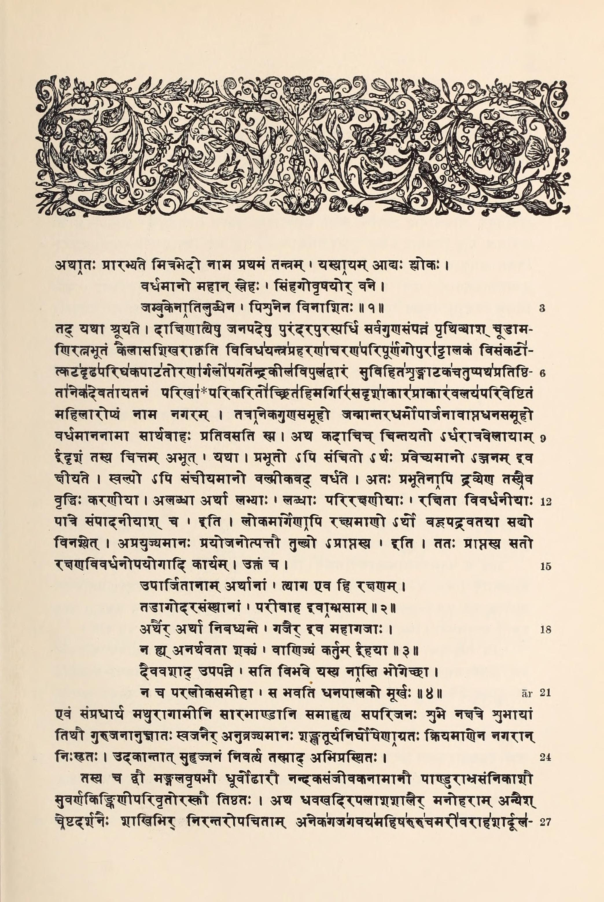
Here then begins Book I, called “The Loss of Friends.” The first verse runs:
The forest lion and the bull Were linked in friendship, growing, full: A jackal then estranged the friends For greedy and malicious ends.
And this is how it happened.
In the southern country was a city called Maidens’ Delight. It rivaled the city of heaven’s King, so abounding in every urban excellence as to form the central jewel of Earth’s diadem. Its contour was like that of Kailasa Peak. Its gates and palaces were stocked with machines, missile weapons, and chariots in great variety. Its central portal, massive as Indrakila Mountain, was fitted with bolt and bar, panel and arch, all formidable, impressive, solid. Its numerous temples lifted their firm bulk near spacious squares and crossings. It wore a moat-girdled zone of walls that recalled the high-uplifted Himalayas.
In this city lived a merchant named Increase. He possessed a heap of numerous virtues, and a heap of money, a result of the accumulation of merit in earlier lives.
As he once pondered in the dead of night, his conclusions took this form: “Even an abundant store of wealth, if pecked at, sinks together like a pile of soot. A very little, if added to, grows like an ant-hill. Hence, even though money be abundant, it should be increased. Riches unearned should be earned. What is earned, should be guarded. What is guarded, should be enlarged and heedfully invested. Money, even if hoarded in commonplace fashion, is likely to go in a flash, the hindrances being many. Money unemployed when opportunities arise, is the same as money unpossessed. Therefore, money once acquired should be guarded, increased, employed. As the proverb says:
Release the money you have earned;
So keep it safely still:
The surplus water of a tank
Must find a way to spill.
Wild elephants are caught by tame;
With capital it is the same:
In business, beggars have no scope
Whose stock-in-trade is empty hope.
If any fail to use his fate
For joy in this or future state,
His riches serve as foolish fetters;
He simply keeps them for his betters.”
Having thus set his mind in order, he collected merchandise bound for the city of Mathura, assembled his servants, and after saying farewell to his parents when asterism and lunar station were auspicious, set forth from the city, with his people following and with blare of conch-shell and beat of drum preceding. At the first water he bade his friends turn back, while he proceeded.
To bear the yoke he had two bulls of good omen. Their names were Joyful and Lively; they looked like white clouds, and their chests were girded with golden bells.
{kind=link}
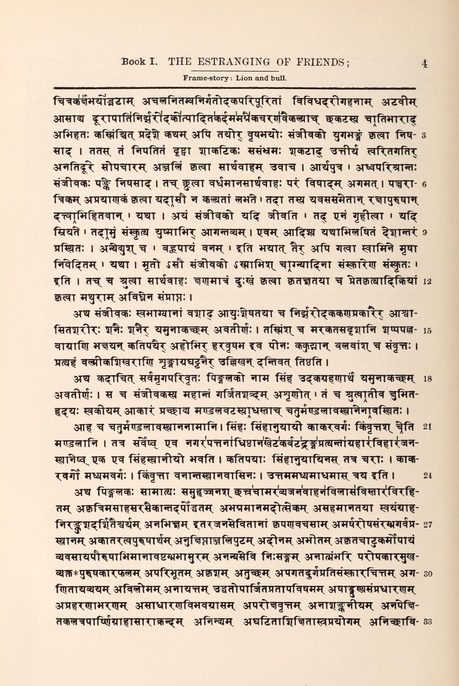
Presently he reached a forest lovely with grisleas, acacias, dhaks, and sals, densely planted with other trees of charming aspect; fearsome with elephants, wild oxen, buffaloes, deer, grunting-cows, boars, tigers, leopards, and bears; abounding in water that issued from the flanks of mountains; rich in caves and thickets.
Here the bull Lively was overcome, partly by the excessive weight of the wagon, partly because one foot sank helpless where far-flung water from cascades made a muddy spot. At this spot the bull somehow snapped the yoke and sank in a heap. When the driver saw that he was down, he jumped excitedly from the wagon, ran to the merchant not far away, and humbly bowing, said: “Oh, my lord! Lively was wearied by the trip, and sank in the mud.”
On hearing this, merchant Increase was deeply dejected. He halted for five nights, but when the poor bull did not return to health, he left caretakers with a supply of fodder, and said: “You must join me later, bringing Lively, if he lives; if he dies, after performing the last sad rites.” Having given these directions, he started for his destination.
On the next day, the men, fearing the many drawbacks of the forest, started also and made a false report to their master. “Poor Lively died,” they said, “and we performed the last sad rites with fire and everything else.” And the merchant, feeling grieved for a mere moment, out of gratitude performed a ceremony that included rites for the departed, then journeyed without hindrance to Mathura.
In the meantime, Lively, since his fate willed it and further life was predestined, hobbled step by step to the bank of the Jumna, his body invigorated by a mist of spray from the cascades. There he browsed on the emerald tips of grass-blades, and in a few days grew plump as Shiva’s bull, high-humped, and full of energy. Every day he tore the tops of anthills with goring horns, and frisked like an elephant.
But one day a lion named Rusty, with a retinue of all kinds of animals, came down to the bank of the Jumna for water. There he heard Lively’s prodigious bellow. The sound troubled his heart exceedingly, but he concealed his inner feelings while beneath a spreading banyan tree he drew up his company in what is called the Circle of Four.
Now the divisions of the Circle of Four are given as: (1) the lion, (2) the lion’s guard, (3) the understrappers, (4) the menials. In all cities, capitals, towns, hamlets, market-centers, settlements, borderposts, land-grants, monasteries, and communities there is just one occupant of the lion’s post. Relatively few are active as the lion’s guard. The understrappers are the indiscriminate throng. The menials are posted on the outskirts. The three classes are each divided into members high, middle, and low.
Now Rusty, with counselors and intimates, enjoyed a kingship
of the following order. His royal office, though lacking the
pomp of umbrella, flyflap, fan, vehicle, and amorous display,
was held erect by sheer pride in the sentiment of unaffected
pluck. It showed unbroken haughtiness and abounding
self-esteem. It manifested a native zeal for unchecked power
that brooked no rival. It was ignorant of cringing speech,
which it delegated to those who like that sort of thing. It
functioned by means of impatience, wrath, haste, and hauteur.
Its manly goal was fearlessness, disdaining fawning, strange to
obsequiousness, unalarmed. It made use of no wheedling
artifices, but glittered in its reliance on enterprise, valor,
dignity. It was independent, unattached, free from selfish
worry. It advertised the reward of manliness by its pleasure in
benefiting others. It was unconquered, free from constraint and
meanness, while it had no thought of elaborating defensive
works. It kept no account of revenue and expenditure. It knew
no deviousness nor time-serving, but was prickly with the
energy earned by loftiness of spirit. It wasted no deliberation
on the conventional six expedients, nor did it hoard weapons or
jewelry. It had an uncommon appetite for power, never adopted
subterfuges, was never an object of suspicion. It paid no heed
to wives or ambush-layers, to their torrents of tears or their
squeals. It was without reproach. It had no artificial training
in the use of weapons, but it did not disappoint expectations.
It found satisfactory food and shelter without dependence on
servants. It had no timidity about any foreign forest, and no
⛶
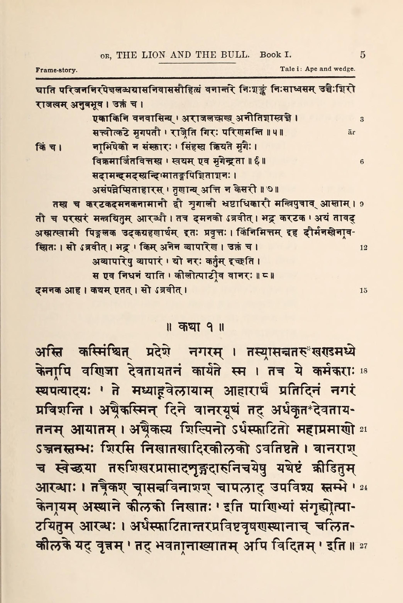 alarms. Its head was high. As the proverb says:
{kind=link}
The lion needs, in forest station,
No trappings and no education,
But lonely power and pride;
And all the song his subjects sing,
Is in the words: “O King! O King!”
No epithet beside.
And again:
The lion needs, for his appointing, No ceremony, no anointing; His deeds of heroism bring Him fortune. Nature crowns him king. The elephant is the lion's meat, With drops of trickling ichor sweet; Though lack thereof should come to pass, The lion does not nibble grass.
Now Rusty had in his train two jackals, sons of counselors, but out of a job. Their names were Cheek and Victor. These two conferred secretly, and Victor said: “My dear Cheek, just look at our master Rusty. He came this way for water. For what reason does he crouch here so disconsolate?” “Why meddle, my dear fellow?” said Cheek. “There is a saying:
Death pursues the meddling flunkey: Note the wedge-extracting monkey.”
“How was that?” asked Victor. And Cheek told the story of
The Wedge-Pulling Monkey
There was a city in a certain region. In a grove near by, a merchant was having a temple built. Each day at the noon hour the foreman and workers would go to the city for lunch.
Now one day a troop of monkeys came upon the half-built temple. There lay a tremendous anjana-log, which a mechanic had begun to split, a wedge of acacia-wood being thrust in at the top.
There the monkeys began their playful frolics upon tree-top, lofty roof, and woodpile. Then one of them, whose doom was near, thoughtlessly bestrode the log, thinking: “Who stuck a wedge in this queer place?” So he seized it with both hands and started to work it loose. Now what happened when the wedge gave at the spot where his private parts entered the cleft, that, sir, you know without being told.
{kind=link}
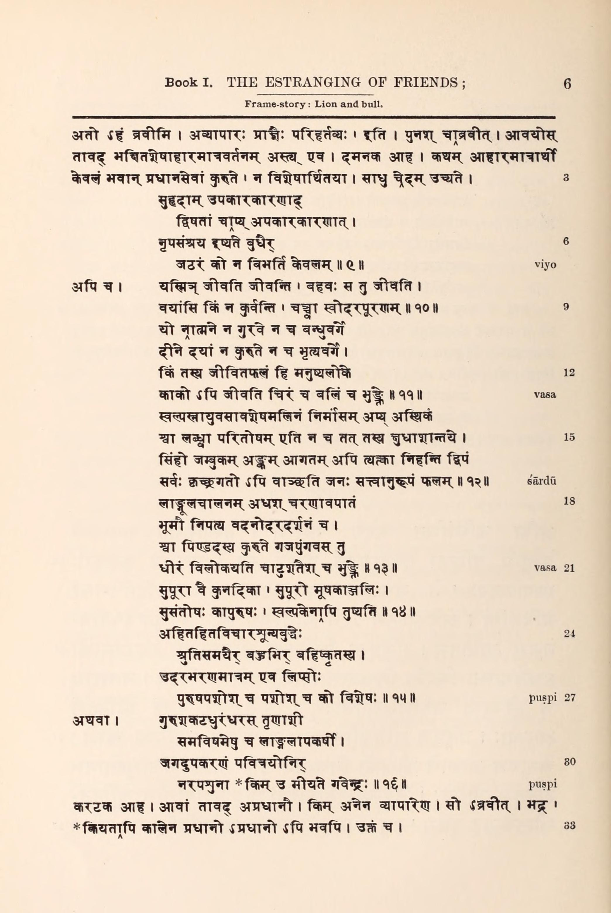
“And that is why I say that meddling should be avoided by the intelligent. And you know,” he continued, “that we two pick up a fair living just from his leavings.”
“But,” said Victor, “how can you give first-rate service merely from a desire for food with no desire for distinction? There is wisdom in the saying:
In hurting foes and helping friends The wise perceive the proper ends Of serving kings. The belly's call To answer, is no job at all.
And again:
When many lives on one depend,
Then life is life indeed:
A crow, with beak equipped, can fill
His belly's selfish need.
If loving kindness be not shown
To friends and souls in pain,
To teachers, servants, and one's self,
What use in life, what gain?
A crow will live for many years
And eat the offered grain.
A dog is quite contented if
He gets a meatless bone,
A dirty thing with gristle-strings
And marrow-fat alone—
And not enough of it at that
To still his belly's moan.
The lion scorns the jackal, though
Between his paws, to smite
The elephant. For everyone,
However sad his plight,
Demands the recompense that he
Esteems his native right.
Dogs wag their tails and fawn and roll,
Bare mouth and belly, at your feet:
Bull-elephants show self-esteem,
Demand much coaxing ere they eat.
A tiny rill
Is quick to fill,
And quick a mouse's paws;
So seedy men
Are grateful, when
There is but little cause.
For if there be no mind
Debating good and ill,
And if religion send
No challenge to the will,
If only greed be there
For some material feast,
How draw a line between
The man-beast and the beast?
Or more accurately yet:
Since cattle draw the plow
Through rough and level soil,
And bend their patient necks
To heavy wagons' toil,
Are kind, of sinless birth,
And find in grass a feast,
How can they be compared
With any human beast?”
“But at present,” said Cheek, “we two hold no job at court. So why meddle?” “My dear fellow,” said Victor, “after a little the jobless man does hold a job. As the saying goes:
⛶
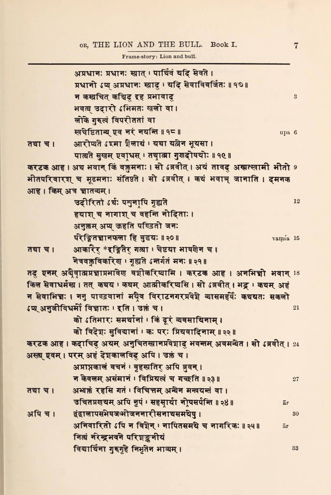The jobless man is hired
For careful serving;
The holder may be fired,
If undeserving.
No character moves up or down
At others' smile or others' frown;
But honor or contempt on earth
Will follow conduct's inner worth.
{kind=link}
And once more:
It costs an effort still To carry stones uphill; They tumble in a trice: So virtue, and so vice.”
“Well,” said Cheek, “what do you wish to imply?” And Victor answered: “You see, our master is frightened, his servants are frightened, and he does not know what to do.” “How can you be sure of that?” asked Cheek, and Victor said: “Isn’t it plain?
An ox can understand, of course, The spoken word; a driven horse Or elephant, exerts his force; But men of wisdom can infer Unuttered thought from features' stir— For wit rewards its worshiper.
And again:
From feature, gesture, gait,
From twitch, or word,
From change in eye or face
Is thought inferred.
So by virtue of native intelligence I intend to get him into my power this very day.”
“Why,” said Cheek, “you do not know how to make yourself useful to a superior. So tell me. How can you establish power over him?”
“And why, my good fellow, do I not know how to make myself useful?” said Victor. “The saintly poet Vyasa has sung the entry of the Pandu princes into Virata’s court. From his poem I learned the whole duty of a functionary. You have heard the proverb:
No burden enervates the strong; To enterprise no road is long; The well-informed all countries range; To flatterers no man is strange.”
But Cheek objected: “He might perhaps despise you for forcing yourself into a position that does not belong to you.” “Yes,” said Victor, “there is point in that. However, I am also a judge of occasions. And there are rules, as follows:
The Lord of Learning, speaking to
A false occasion,
Will meet with hatred, and of course
Lack all persuasion.
And again:
The favorite's business comes to be A sudden source of king's ennui, When he is thoughtful, trying scents, Retiring, or in conference.
And once again:
On hours of talk or squabbling rude,
Of physic, barber, flirting, food,
A gentleman does not intrude.
Let everyone be cautious
In palaces of kings;
And let not students rummage
In their professor's things:
⛶
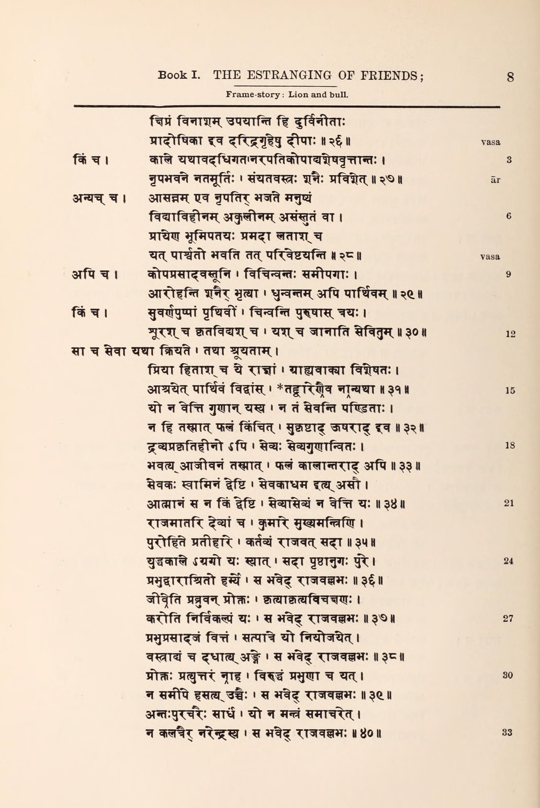For naughty meddlers suffer
Destruction swift and sure,
Like evening candles, lighted
In houses of the poor.
{kind=link}
Or put it this way:
On entering a palace,
Adjust a modest dress;
Go slowly, bowing lowly
In timely humbleness;
And sound the kingly temper,
And kingly whims no less.
Or this way:
Though ignorant and common,
Unworth the honoring,
Men win to royal favor
By standing near the king:
For kings and vines and maidens
To nearest neighbors cling.
And once again:
The servant in his master's face Discerns the signs of wrath and grace, And though the master jerk and tack, The servant slowly mounts his back.
And finally:
The brave, the learnèd, he who wins
To bureaucratic power
These three, alone of all mankind,
Can pluck earth's golden flower.
“Now let me inform you how power is gained by dancing attendance on a master.
Win the friendly counselors,
To the monarch dear,
Win persuasive speakers; so
Gain the royal ear.
On the undiscerning mob
'Tis not wise to toil:
No man reaps a harvest by
Plowing barren soil.
Serve a king of merit, though
Friendless, destitute;
After some delay, you pluck
Long-enduring fruit.
Hate your master, and you fill
Servant's meanest state:
Not discerning whom to serve,
'Tis yourself you hate.
Treat the dowager, the queen,
And the king-to-be,
Chaplain, porter, counselor,
Most obsequiously.
One who seeks the van in fights,
In the palace clings,
In the city walks behind,
Is beloved of kings.
One who flatters when addressed,
Does the proper things.
Acts without expressing doubts.
Is beloved of kings.
One, the royal gifts of cash
Prudently who flings,
Wearing gifts of garments, he
Is beloved of kings.
One who never makes reply
That his master stings,
Never boisterously laughs,
Is beloved of kings.
One who never hearkens to
Queenly whisperings,
In the women's quarters dumb,
Is beloved of kings.
⛶
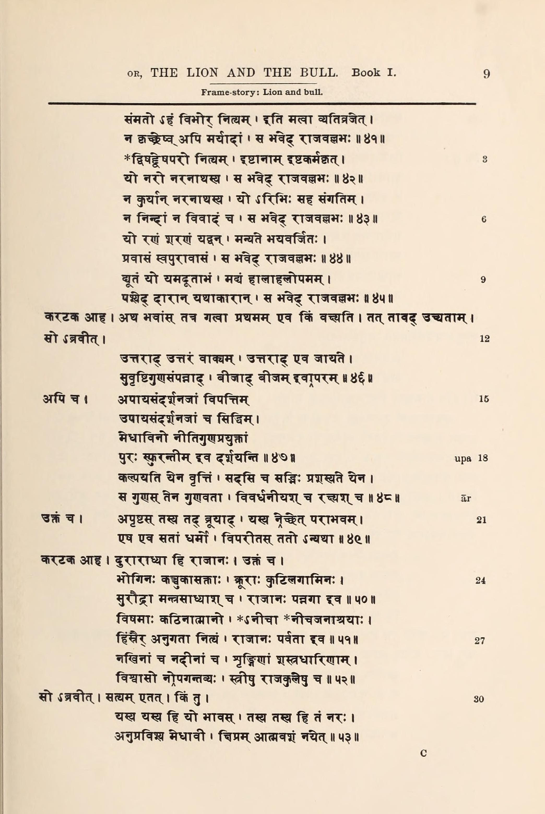One who, even in distress,
Never boasts and sings
Of his master's favor, he
Is beloved of kings.
One who hates his master's foe,
Loves his friend, and brings
Pain or joy to either one,
Is beloved of kings.
One who never disagrees,
Blames, or pulls the strings
Of intrigue with enemies,
Is beloved of kings.
One who finds in battle, peace
Free from questionings,
Thinks of exile as of home,
Is beloved of kings.
One who thinks of dice as death,
Wine as poison-stings,
Others' wives as statues, he
Is beloved of kings.”
{kind=link}
“Well,” said Cheek, “when you come into his presence, what do you intend to say first? Please tell me that.” And Victor replied:
“Answers, after speech begins,
Further answers breed,
As a seed, with timely rain,
Ripens other seed.
And besides:
A clever servant shows his master The gleam of triumph or disaster From good or evil courses springing, And shows him wit, decision-bringing. The man possessing such a wit Should magnify and foster it; Thereby he earns a livelihood And public honor from the good.
And there is a saying:
Let anyone who does not seek His master's fall, unbidden speak; So act at least the excellent: The other kind are different.”
“But,” said Cheek, “kings are hard to conciliate. There is a saying:
In sensuous coil
And heartless toil,
In sinuous course
And armored force,
In savage harms
That yield to charms—
In all these things
Are snakes like kings.
Uneven, rough,
And high enough—
Yet low folk roam
Their flanks as home,
And wild things haunt
Them, hungry, gaunt—
In all these things
Are hills like kings.
The things that claw, and the things that gore
Are unreliable things;
And so is a man with a sword in his hand,
And rivers, and women, and kings.”
“Quite true,” said Victor. “However:
The clever man soon penetrates
The subject's mind, and captivates.
⛶
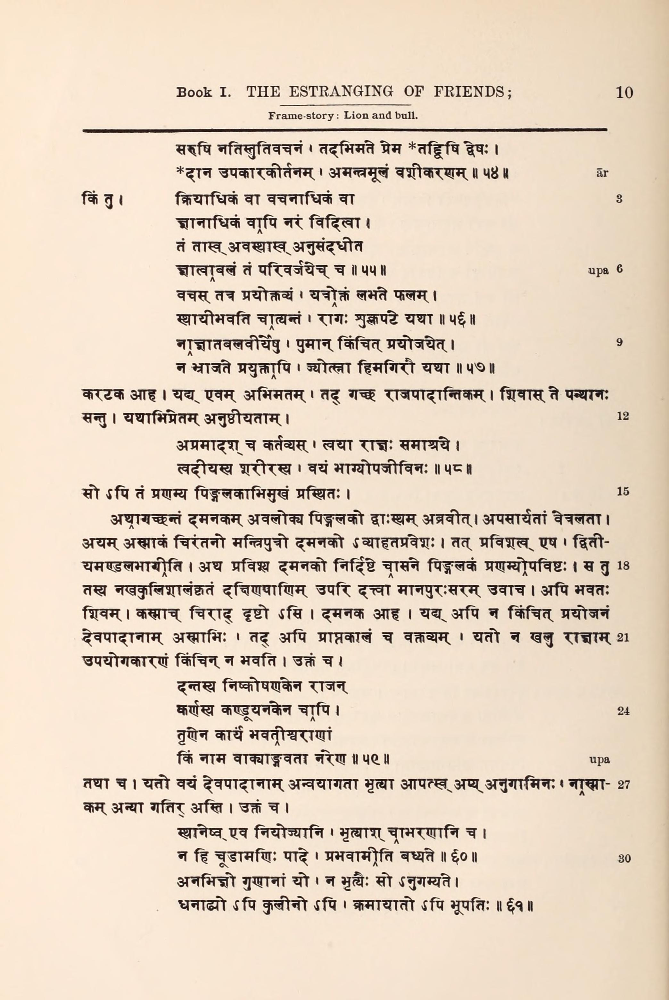Cringe, and flatter him when angry;
Love his friend and hate his foe;
Duly advertise his presents—
Trust no magic—win him so.
{kind=link}
And yet:
If a man excel in action,
Learning, fluent word,
Make yourself his humble servant
While his power is stirred,
Quick to leave him at the moment
When he grows absurd.
Plant your words where profit lies:
Whiter cloth takes faster dyes.
Till you know his power and manhood,
Effort has no scope:
Moonlight's glitter vainly rivals
Himalaya's slope.”
And Cheek replied: “If you have made up your mind, then seek the feet of the king. Blest be your journeyings. May your purpose be accomplished.
Be heedful in the presence of the king; We also to your health and fortune cling.”
Then Victor bowed to his friend, and went to meet Rusty.
Now when Rusty saw Victor approaching, he said to the doorkeeper: “Away with your reed of office! This is an old acquaintance, the counselor’s son Victor. He has free entrance. Let him come in. He belongs to the second circle.” So Victor entered, bowed to Rusty, and sat down on the seat indicated to him.
Then Rusty extended a right paw adorned with claws as formidable as thunderbolts, and said respectfully: “Do you enjoy health? Why has so long a time passed since you were last visible?” And Victor replied: “Even though my royal master has no present need of me, still I ought to report at the proper time. For there is nothing that may not render service to a king. As the saying goes:
To clean a tooth or scratch an ear
A straw may serve a king:
A man, with speech and action, is
A higher kind of thing.
“Besides, we who are ancestral servants of our royal master, follow him even in disasters. For us there is no other course. Now the proverb says:
Set in fit position each
Gem or serving-man;
No tiaras on the toes,
Just because you can.
Servants leave the kings who their
Qualities ignore,
Even kings of lofty line,
Wealthy, served of yore.
⛶
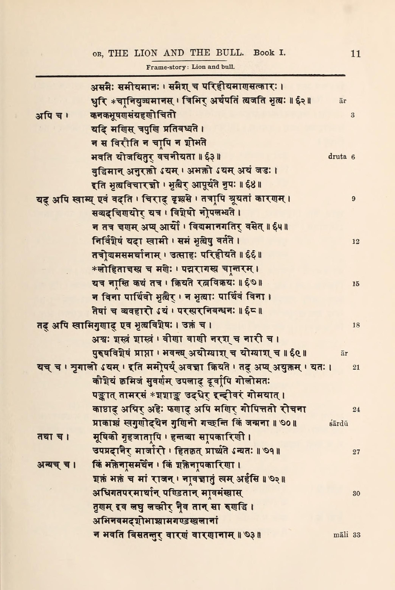Lacking honor from their equals,
Jobless, déclassé,
Servants give their master notice
That they will not stay.
{kind=link}
And again:
If set in tin, a gem that would
Adorn a golden frame,
Will never scream nor fail to gleam,
Yet tells its wearer's shame.
The king who reads a servant's mind—
Dull, faithless, faithful, wise—
May servants find of every kind
For every enterprise.
“And as for my master’s remark: ‘It is long since you were last visible,’ pray hear the reason of that:
Where just distinction is not drawn
Between the left and right,
The self-respecting, if they can,
Will quickly take to flight.
If masters no distinction make
Among their servants, then
They lose the zealous offices
Of energetic men.
And in a market where it seems
That no distinctions hold
Between red-eye and ruby, how
Can precious gems be sold?
There must be bonds of union
In all their dealings, since
No prince can lack his servants
Nor servants lack a prince.
“Yet the nature of the servant also depends on the master’s quality. As the saying goes:
In case of horse or book or sword, Of woman, man or lute or word, The use or uselessness depends On qualities the user lends.
“And another point. You do wrong to despise me because I am a jackal. For
Silk comes from worms, and gold from stone; From cow's hair sacred grass is grown; The water-lily springs from mud; From cow-dung sprouts the lotus-bud; The moon its rise from ocean takes; And gems proceed from hoods of snakes; From cows' bile yellow dyestuffs come; And fire in wood is quite at home: The worthy, by display of worth, Attain distinction, not by birth.
And again:
Kill, although domestic born,
Any hurtful mouse:
Bribe an alien cat who will
Help to clean the house.
And once again:
How use the faithful, lacking power?
Or strong, who evil do?
But me, O King, you should not scorn,
For I am strong and true.
Scorn not the wise who penetrate
Truth's universal law;
They are not men to be restrained
By money's petty straw:
When beauty glistens on their cheeks
By trickling ichor lent,
Bull-elephants feel lotus-chains
As no impediment.”
{kind=link}
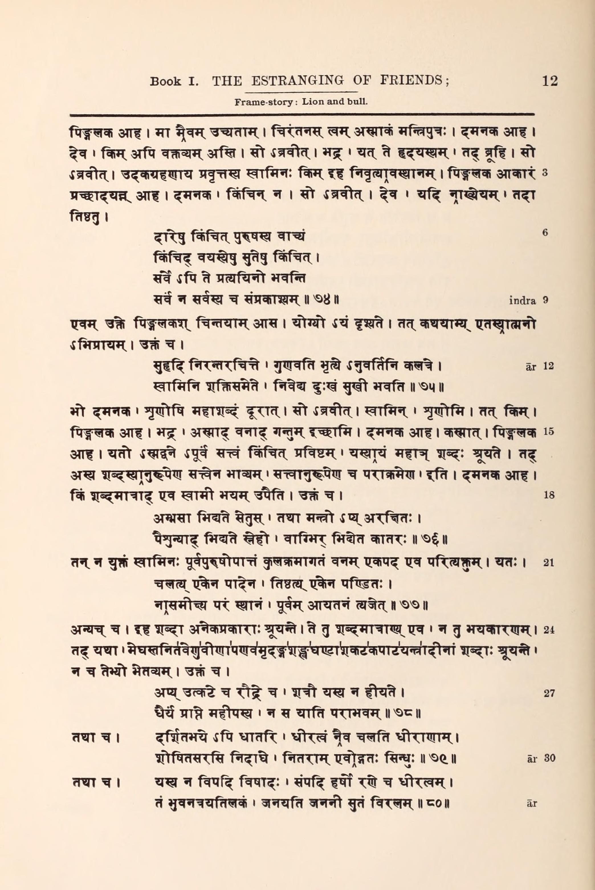
“Oh,” said Rusty, “you must not say such things. You are our counselor’s son, an old retainer.” “O King,” said Victor, “there is something that should be said.” And the king replied: “My good fellow, reveal what is in your heart.”
Then Victor began: “My master set out to take water. Why did he turn back and camp here?” And Rusty, concealing his inner feelings, said: “Victor, it just happened so.” “O King,” said the jackal, “if it is not a thing to disclose, then let it be.
Some things a man should tell his wife,
Some things to friend and some to son;
All these are trusted. He should not
Tell everything to everyone.”
Hereupon Rusty reflected: “He seems trustworthy. I will tell him what I have in mind. For the proverb says:
You find repose, in sore disaster, By telling things to powerful master, To honest servant, faithful friend, Or wife who loves you till the end.
Friend Victor, did you hear a great voice in the distance?” “Yes, master, I did,” said Victor. “What of it?”
And Rusty continued: “My good fellow, I intend to leave this forest.” “Why?” said Victor. “Because,” said Rusty, “there has come into our forest some prodigious creature, from whom we hear this great voice. His nature must correspond to his voice, and his power to his nature.”
“What!” said Victor. “Is our master frightened by a mere voice? You know the proverb:
Water undermines the dikes; Love dissolves when malice strikes; Secrets melt when babblings start; Simple words melt dastard hearts.
So it would be improper if our master abruptly left the forest which was won by his ancestors and has been so long in the family. For they say:
Wisely move one foot; the other
Should its vantage hold;
Till assured of some new dwelling,
Do not leave the old.
“Besides, many kinds of sounds are heard here. Yet they are nothing but noises, not a warning of danger. For example, we hear the sounds made by thunder, wind among the reeds, lutes, drums, tambourines, conch-shells, bells, wagons, banging doors, machines, and other things. They are nothing to be afraid of. As the verse says:
If a king be brave, however
Fierce the foe and grim,
Sorrows of humiliation
Do not wait for him.
And again:
Bravest bosoms do not falter,
Fearing heaven's threat:
Summer dries the pools; the Indus
Rises, greater yet.
And once again:
Mothers bear on rare occasions
To the world a chief,
Glad in luck and brave in battle,
Undepressed in grief.
⛶{kind=link}
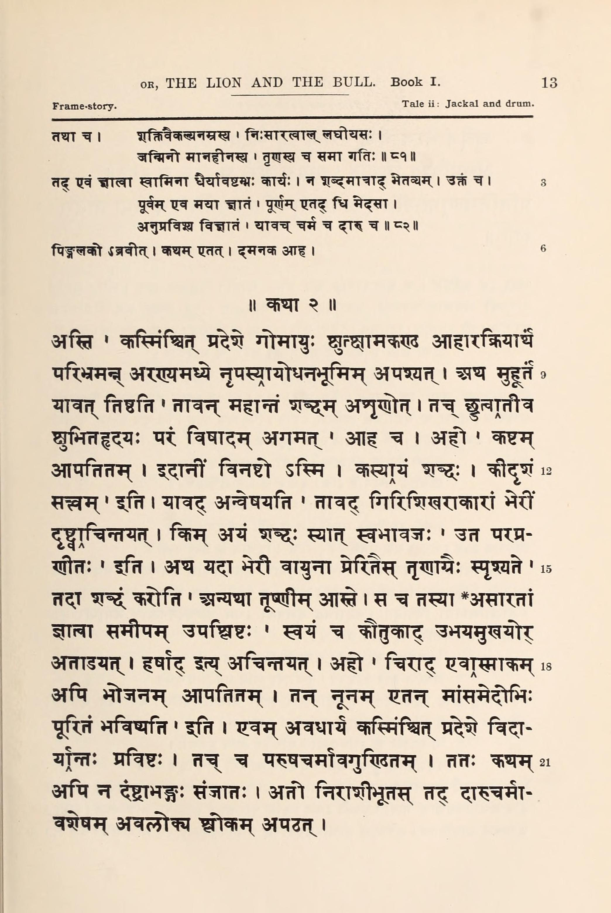
And yet again:
Do not act as does the grass-blade.
Lacking honest pride,
Drooping low in feeble meanness,
Lightly brushed aside.
My master must take this point of view and reinforce his resolution, not fear a mere sound. As the saying goes:
I thought at first that it was full
Of fat; I crept within
And there I did not find a thing
Except some wood and skin.”
“How was that?” asked Rusty. And Victor told the story of
The Jackal and the War-Drum
In a certain region was a jackal whose throat was pinched by hunger. While wandering in search of food, he came upon a king’s battle ground in the midst of a forest. And as he lingered a moment there, he heard a great sound.
This sound troubled his heart exceedingly, so that he fell into deep dejection and said: “Ah me! Disaster is upon me. I am as good as dead already. Who made that sound? What kind of a creature?”
But on peering about, he spied a war-drum that loomed like a mountain-peak, and he thought: “Was that sound its natural voice, or was it induced from without?” Now when the drum was struck by the tips of grasses swaying in the wind, it made the sound, but was dumb at other times.
So he recognized its helplessness, and crept quite near. Indeed, his curiosity led him to strike it himself on both heads, and he became gleeful at the thought: “Aha! After long waiting food comes even to me. For this is sure to be stuffed with meat and fat.”
Having come to this conclusion, he picked a spot, gnawed a hole, and crept in. And though the leather covering was tough, still he had the luck not to break his teeth. But he was disappointed to find it pure wood and skin, and recited a stanza:
⛶
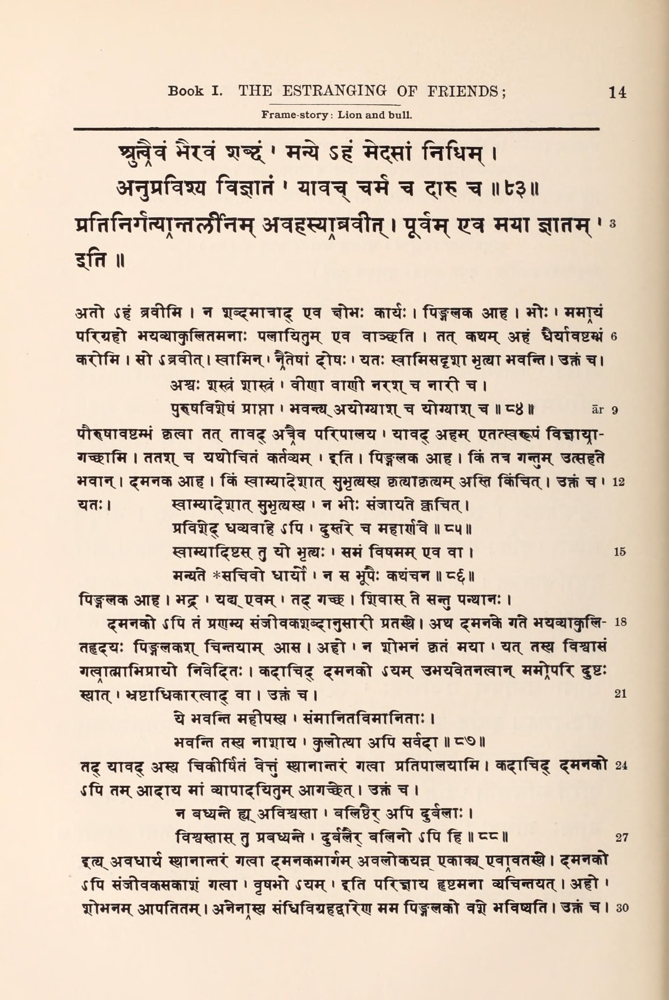Its voice was fierce; I thought it stuffed
With fat, so crept within;
And there I did not find a thing
Except some wood and skin.
{kind=link}
So he backed out, laughing to himself, and said:
I thought at first that it was full Of fat, ....
and the rest of it.
“And that is why I say that one should not be troubled by a mere sound.” “But,” said Rusty, “these retainers of mine are terrified and wish to run away. So how am I to reinforce my resolution?” And Victor answered: “Master, they are not to blame. For servants take after the master. You know the proverb:
In case of horse or book or sword, Of woman, man or lute or word, The use or uselessness depends On qualities the user lends.
“Then summon your manhood and remain on this spot until I return, having ascertained the nature of the creature. Then act as seems proper.” “What!” said Rusty, “are you plucky enough to go there?” And Victor answered: “When the master commands, is there any difference between ‘possible’ and ‘impossible’ to the good servant? As the proverb says:
Good servants, when their lords command, Behold no fear on any hand, Cross pathless seas if he desire Or gladly enter flaming fire. The servant who, his lord commanding, Should strive to reach an understanding On labors hard or easy, he King's counselor should never be.”
“If you feel so, my dear fellow,” said Rusty, “then go. Blest be your journeyings.”
So Victor bowed low and set out in the direction of the sound made by Lively. And when he was gone, terror troubled Rusty’s heart, so that he thought: “Ah, I made a sad mistake in trusting him to the point of revealing what is in my mind. Perhaps this Victor will betray me by taking wages from both parties, or from spite at losing his job. For the proverb says:
A servant suffering from a king Dishonor after honoring, Though born and trained to service, will Be eager to destroy him still.
“So I will go elsewhere and wait, in order to learn his purpose. Perhaps Victor might even bring the thing along and try to kill me. As the saying goes:
The trustful strong are caught
By weaker foes with ease;
The wary weak are safe
From strongest enemies.”
Thus he set his mind in order, went elsewhere, and waited all alone, spying on Victor’s procedure.
Meanwhile Victor drew near to Lively, discovered that he was a bull, and reflected gleefully: “Well, well! This is lucky. I shall get Rusty into my power by dangling before him war or peace with this fellow. As the proverb puts it:
⛶
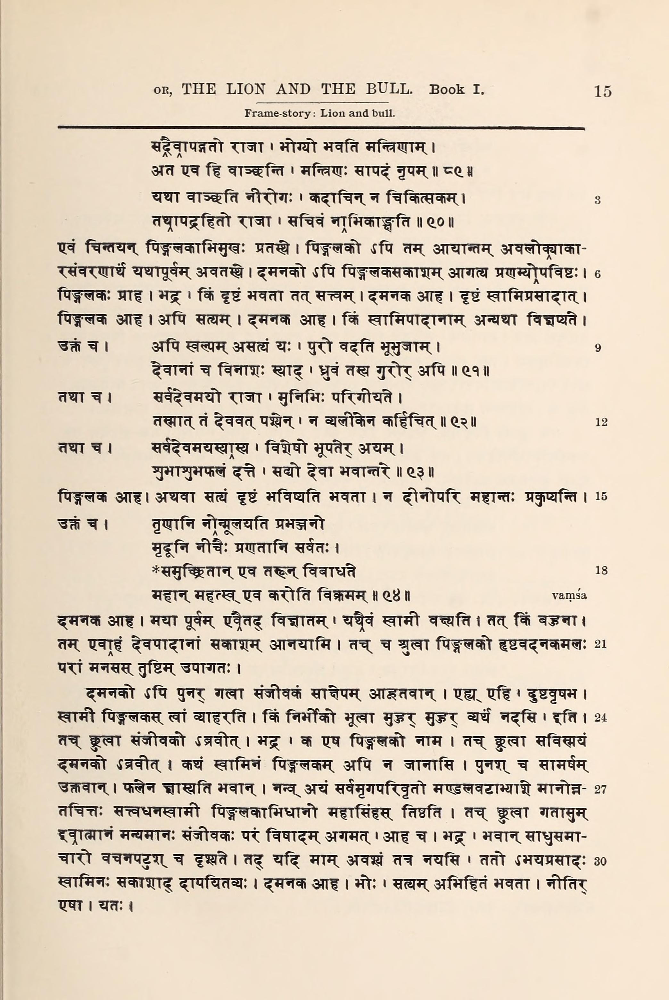All counselors draw profit from
A king in worries pent,
And that is why they always wish
For him, embarrassment.
As men in health require no drug
Their vigor to restore,
So kings, relieved of worry, seek
Their counselors no more.”
{kind=link}
With these thoughts in mind, he returned to meet Rusty. And Rusty, seeing him coming, assumed his former attitude in an effort to put a good face on the matter. So when Victor had come near, had bowed low, and had seated himself, Rusty said: “My good fellow, did you see the creature?” “I saw him,” said Victor, “through my master’s grace.” “Are you telling the truth?” asked Rusty. And Victor answered: “How could I report anything else to my gracious master? For the proverb says:
Whoever makes before a king
Small statements, but untrue,
Brings certain ruin on his gods
And on his teacher, too.
And again:
The king incarnates all the gods,
So sing the sages old;
Then treat him like the gods: to him
Let nothing false be told.
And once again:
The king incarnates all the gods,
Yet with a difference:
He pays for good or ill at once;
The gods, a lifetime hence.”
“Yes,” said Rusty, “I suppose you really did see him. The great do not become angry with the mean. As the proverb says:
The hurricane innocuous passes O'er feeble, lowly bending grasses, But tears at lofty trees: the great Their prowess greatly demonstrate.”
And Victor replied: “I knew beforehand that my master would speak thus. So why waste words? I will bring the creature into my gracious master’s presence.” And when Rusty heard this, joy overspread his lotus-face, and his mind felt supreme satisfaction.
Meanwhile Victor returned and called reproachfully to Lively: “Come here, you villainous bull! Come here! Our master Rusty asks why you are not afraid to keep up this meaningless bellowing.” And Lively answered: “My good fellow, who is this person named Rusty?”
“What!” said Victor, “you do not even know our master Rusty?” And he continued with indignation: “The consequences will teach you. He has a retinue of all kinds of animals. He dwells beside the spreading banyan tree. His heart is high with pride. He is lord of life and wealth. His name is Rusty. He is a mighty lion.”
When Lively heard this, he thought himself as good as dead, and he fell into deep dejection, saying: “My dear fellow, you appear to be sympathetic and eloquent. So if you cannot avoid conducting me there, pray cause the master to grant me a gracious safe-conduct.” “You are quite right,” said Victor. “Your request shows savoir faire. For
⛶
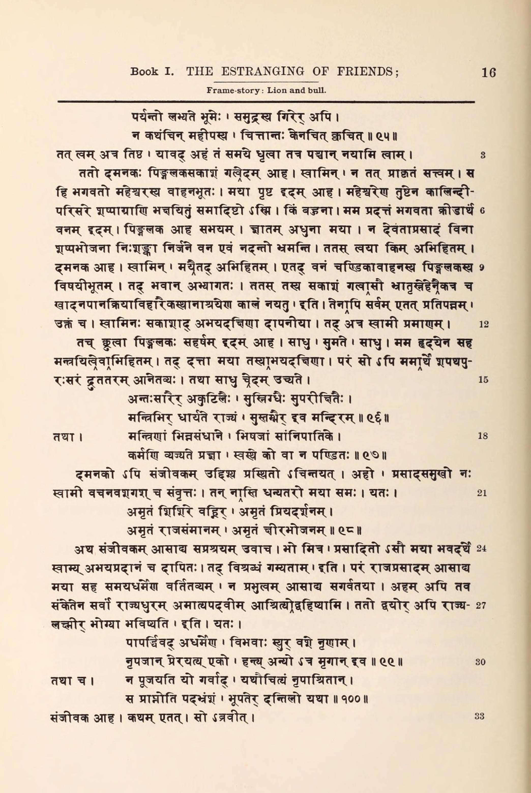The earth has a limit,
The mountains, the sea;
The deep thoughts of kings are
Without boundary.
{kind=link}
Do you then remain in this spot. Later, when I have held him to an agreement, I will conduct you to him.”
Then Victor returned to Rusty and said: “Master, he is no ordinary creature. He has served as the vehicle of blessed Shiva. And when I questioned him, he said: ‘Great Shiva was satisfied with me and bade me crop the grass beside the Jumna. Why make a long story of it? The blessed one has given me this forest as a playground.’”
At this Rusty was frightened, and he said: “I knew it, I knew it. Only by special favor of the gods do creatures wander in a wild wood, bellowing like that, and fearlessly cropping the grass. But what did you say?”
“Master,” said Victor, “I said: ‘This forest is the domain of Rusty, vehicle of Shiva’s passionate wife. Hence you come as a guest. You must meet him, must spend your time in brotherly love, must eat, drink, work, play, and make your home with him.’ All this he promised, adding: ‘You must make your master grant me a safe-conduct.’ As to that, the master is the sole judge.”
At this Rusty was delighted and said: “Splendid, my intelligent servant, splendid! You must have taken counsel with my own heart before speaking. I grant him a safe-conduct. You must hasten to conduct him here, but not until he too has bound himself by oath toward me. Yes, there is sound sense in the saying:
Polished, fully tested,
Sturdy too, and straight
Are the pillars proper
To a house—or state.
Again:
Wit is shown in hours of crisis:
Doctors' wit, in sore disease;
Counselors', in patching friendship—
All are wise in hours of ease.”
Now Victor thought, as he set out to meet Lively: “Well, well! The master is gracious to me and ready to do my bidding. So there is none more blest than I. For
Four things are nectar: milky food;
A fire in chilly weather;
An honor granted by the king;
And loved ones, come together.”
So he found Lively, and said respectfully: “My friend, I won the old master’s favor for you, and made him give you a safe-conduct. You may go without anxiety. Still, though you have favor in the eyes of the king, you must act in agreement with me. You must not play the haughty master. I for my part, in alliance with you, will take the rôle of counselor, and bear the whole burden of administration. Thus we shall both enjoy royal affluence. For
A sinful chase—yet men can stalk
The treasures of the crown:
One starts the quarry from its lair;
Another strikes it down.
And again:
Whoever is too haughty to Pay king's retainers honor due, Will find his feet are tottering— So merchant Strong-Tooth with the king.”
“How was that?” asked Lively. And Victor told the story of
Merchant Strong-Tooth
{kind=link}
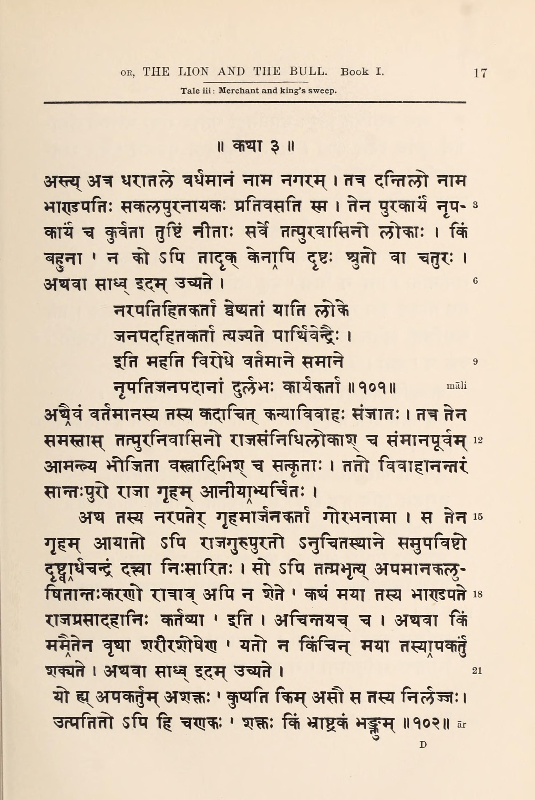
There is a city called Growing City on the earth’s surface. In it lived a merchant named Strong-Tooth who directed the whole administration. So long as he handled city business and royal business, all the inhabitants were satisfied. Why spin it out? Nobody ever saw or heard of his like for cleverness. For there is much wisdom in the proverb:
Suppose he minds the king's affairs,
The common people hate him;
And if he plays the democrat,
The prince will execrate him:
So, since the struggling interests
Are wholly contradictory,
A manager is hard to find
Who gives them both the victory.
While he occupied this position, he once had a daughter married. To the wedding he invited all the townspeople and the king’s entourage, paid them much honor, feasted them, and regaled them with gifts of garments and the like. And when the wedding was over, he conducted the king home with his ladies and showed him reverence.
Now the king had a house-cleaning drudge named Bull, who took a seat that did not belong to him—this in the very palace, and in the presence of the king’s professor. So Strong-Tooth administered a cuffing and drove him out. From that moment the humiliation so rankled in Bull’s inner soul that he had no rest even at night. Yet he thought: “After all, why should I grow thin? It does me no good. For I cannot possibly hurt him. And there is sense in the saying:
Indulge no angry, shameless wish
To hurt, unless you can:
The chick-pea, hopping up and down,
Will crack no frying-pan.”
{kind=link}
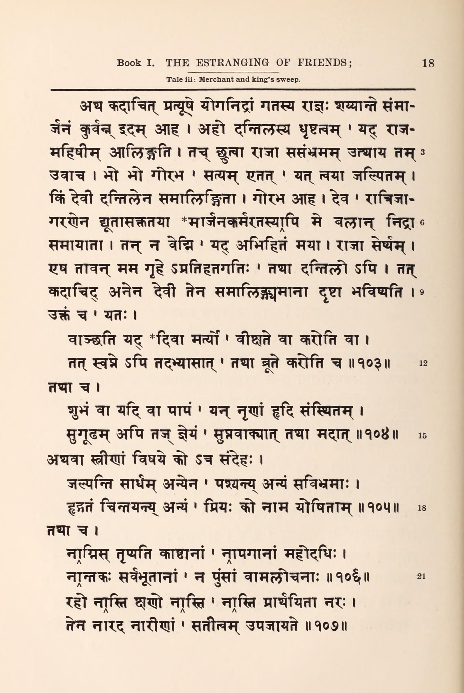
Now one morning, as he was sweeping near the bed where the king lay half awake, he said: “What impudence! Strong-Tooth kisses the queen.” When the king heard this, he jumped up in a hurry, crying: “Come, come, Bull! Is that thing true that you were muttering? Has the queen been kissed by Strong-Tooth?”
“O King,” answered Bull, “I was awake all night because I am passionately fond of gambling. So sleep overpowered me even when I was busy with my sweeping. I do not know what I said.”
But the jealous king thought: “Yes, he has free entrance to my palace. So has Strong-Tooth. Perhaps he actually saw the fellow hugging the queen. For the proverb says:
Whate'er a man desires, sees, does
In broad daylight,
Still mindful, he will say or do
Asleep at night.
And again:
Whatever secrets, good or ill, Men in their bosoms keep, Are soon betrayed when they are drunk Or talking in their sleep.
In any case, what doubt can there be where a woman is concerned?
With one she tries the gossip's art;
Her glances with a second flirt;
She holds another in her heart:
Whom does she love enough to hurt?
And again:
The logs will glut the hungry fire,
The rivers glut the sea's desire,
And Death with life be glutted, when
The flirt has had enough of men.
No chance, no corner dark,
No man to woo;
Then, holy sage, you find
A woman true.
⛶{kind=link}
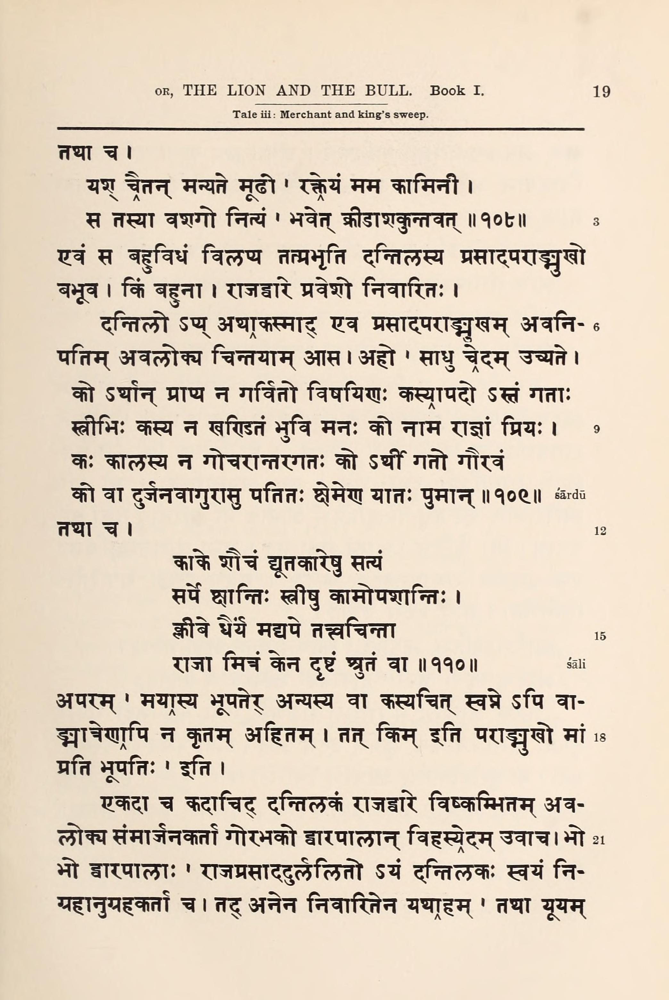
And once again:
The blunderhead who thinks:
‘My love loves me,’
Is ever in her power;
A tame bird, he.”
After all this lamentation, he withdrew his favor forthwith from Strong-Tooth. Not to make a long story of it, he forbade his entrance at court. When Strong-Tooth saw that the monarch’s favor was suddenly withdrawn, he thought: “Ah me! There is wisdom in the stanza:
Whom does not fortune render proud?
Whom does not death lay low?
To what roué do passions not
Bring never ceasing woe?
What beggar can be dignified?
Whose heart no woman stings?
Who, trapped by scamps, comes safely off?
Who is beloved of kings?
And again:
Who ever saw or heard A gambler's truthful word, A neat and cleanly crow, A woman going slow In love, a kindly snake, A eunuch's pluck awake, A drunkard's love of science, A king in friends' alliance?
And yet I never committed an unfriendly act against the king—or anyone else—not even in a dream, not even by mere words. So why does the king withdraw his favor from me?”
Now one day Bull, the sweeper, saw Strong-Tooth stopped at
the palace gate, and he laughed aloud, saying to the
doorkeepers: “Be careful, doorkeepers! This fellow
Strong-Tooth’s temper has been spoiled by the king’s favor
and he dispenses arrests and releases. If you stop him, you
⛶
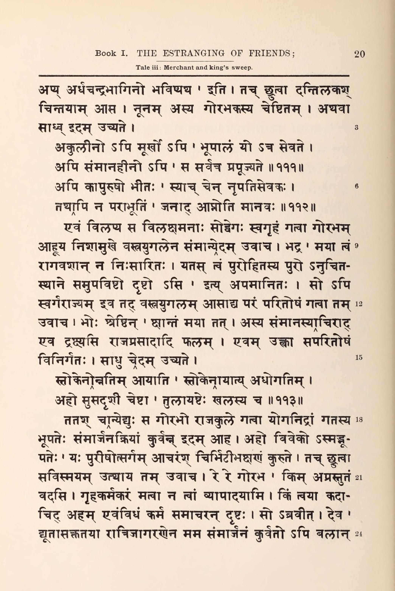 will get a cuffing, just like me.”
{kind=link}
And Strong-Tooth reflected on hearing this: “I see. It was Bull’s doing. Well, there is sense in the proverb:
Though foolish, base, and lacking pride, A servant at the monarch's side Will have his honor satisfied. Though fashioned on a cowardly plan And mean, a royal servant can Resent affronts from any man.”
After this lamentation he went home, abashed and deeply stirred. Then he summoned Bull in the evening, gave him two garments as an honorable present, and said: “My good fellow, I did not drive you out by order of the king. It was because I saw you, in the chaplain’s presence, sitting where you did not belong, that I humiliated you.”
Now Bull received the two garments as if they were the Kingdom of Heaven, and feeling intense satisfaction, he said: “Friend merchant, I forgive you. You will soon see the reward of the honor shown me in the king’s favor and such things.” With this he departed in high glee. For there is wisdom in the saying:
A little thing will lift him high,
A little make him fall:
'Twixt balance-beam and scamp there is
No difference at all.
On the next day Bull entered the palace, and did his sweeping. And while the king lay half awake, he said: “What intelligence! When our king sits at stool, he eats a cucumber.”
Now the king, hearing this, rose in amazement and said: “Come, come, Bull! What twaddle is this? But I remember that you are a house-servant and do not kill you. Did you ever see me engaged in that occupation?”
“O King,” said Bull, “I was awake all night because I am
passionately fond of gambling. So drowsiness overcame me in
⛶
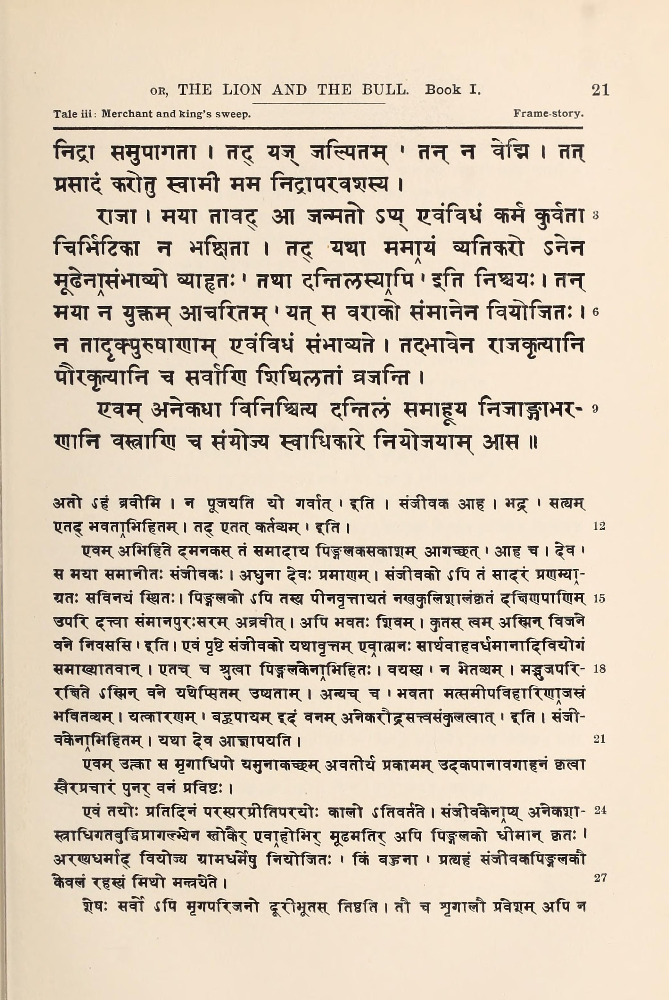 the very act of doing my sweeping. I do not know what I
was muttering. Pardon me, master. I was really asleep.”
{kind=link}
Then the king thought: “Why, from the day of my birth I never ate a cucumber while engaged in that occupation. And since this blockhead has talked unimaginable nonsense about me, it must be the same with Strong-Tooth. This being so, I made a mistake in taking the poor man’s honors from him. Nothing of the sort is conceivable with such men. And in his absence all the king’s business and city business is at loose ends.”
After thus considering the matter from every point of view, he summoned Strong-Tooth, presented him with gems from his own person and with garments, and reinstated him.
“And that is why I say:
Whoever is too haughty to Pay king's retainers honor due, ....
and the rest of it.” “My dear fellow,” said Lively, “your argument is quite convincing. Let it be as you say.”
After this Victor took him to Rusty and said: “O King, here is Lively. I have brought him hither. The future rests with the king.” Then Lively bowed respectfully and stood before the king in a modest attitude. Thereupon Rusty extended over him a right paw plump, firm, massive, adorned with claws as formidable as thunderbolts, and said with deference: “Do you enjoy health? Why do you dwell in this wild wood?”
Thus questioned, Lively related accurately his separation from merchant Increase and the others. And Rusty, after listening to the story, said: “Have no fear, comrade. Protected by my paws, lead your own life in this forest. Furthermore, you must always take your amusements in my vicinity. For this forest has many drawbacks, since it swarms with numerous savage creatures.” And Lively made answer: “Very well, O King.”
Then the king of beasts went down to the bank of the Jumna, drank and bathed his fill, and plunged again into the forest, wherever inclination led him.
Thus the time passed, the mutual affection of the two increasing daily. Now Lively had assimilated solid intelligence by mastering numerous authoritative works, so that in a very few days he planted discernment in Rusty, dull as was his mind. He weaned him from forest habits and taught him village manners. Why spin it out? Lively and Rusty did nothing but hold secret confabulations every day.
This being so, all the other animals of the retinue were
kept at a distance. As for the two jackals, they did not even
⛶
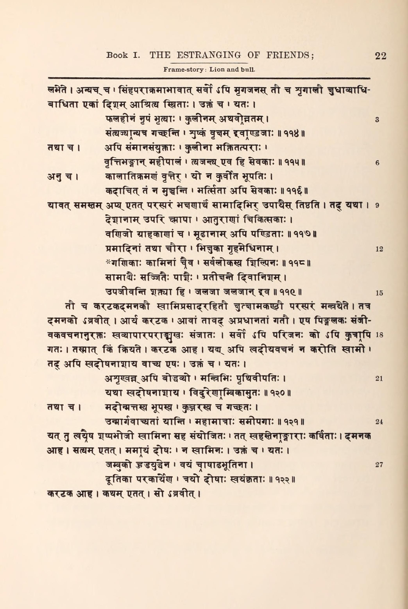 have the entrée. More than that, as soon as they lacked
the lion’s prowess, the whole company of animals, not
excluding the two jackals, suffered grievously from hunger
and huddled together. As the proverb puts it:
{kind=link}
A king, though proud and pure of birth,
Will see his servants flee
A court where no rewards are won,
As birds a withered tree.
And again:
They may be honored gentlemen,
They may devoted be,
Yet servants leave a monarch who
Forgets the salary.
While, on the other hand:
A king may scold Yet servants hold, If he but pay Upon the day.
Indeed, all the creatures in this world, adopting cajolery or one of the other three devices, live by eating one another. For example:
Some eat the countries; these are kings; The doctors, those whom sickness stings; The merchants, those who buy their things; And learned men, the fools. The married are the clergy's meat; The thieves devour the indiscreet; The flirts their eager lovers eat; And Labor eats us all. They keep deceitful snares in play; They lie in wait by night and day; And when occasion offers, prey Like fish on lesser fish.
Now Cheek and Victor, robbed of their master’s favor, took counsel together—for their throats were pinched with hunger. And Victor said: “Cheek, my noble friend, we two seem to have lost our job. For Rusty takes such delight in Lively’s conversation that he neglects his business. And the whole court is scattered every which way. What is to be done?”
And Cheek replied: “Even if the master does not take your advice, still you should admonish him to correct his faults. For the proverb says:
Good counselors should warn a king
Although he pay no heed
(As Vidur warned the monarch blind)
To cease from evil deed.
And again:
Good counselors or drivers may not duck From kings or elephants that run amuck.
Besides, in introducing this grass-nibbler to the master you were handling live coals.” And Victor answered: “You are right. The fault is mine, not the master’s. As the saying goes:
The jackal at the ram-fight;
And we, when tricked by June;
The meddling friend—were playing
A self-defeating tune.”
“How was that?” asked Cheek. And Victor told three stories in one, called
Godly and June
{kind=link}
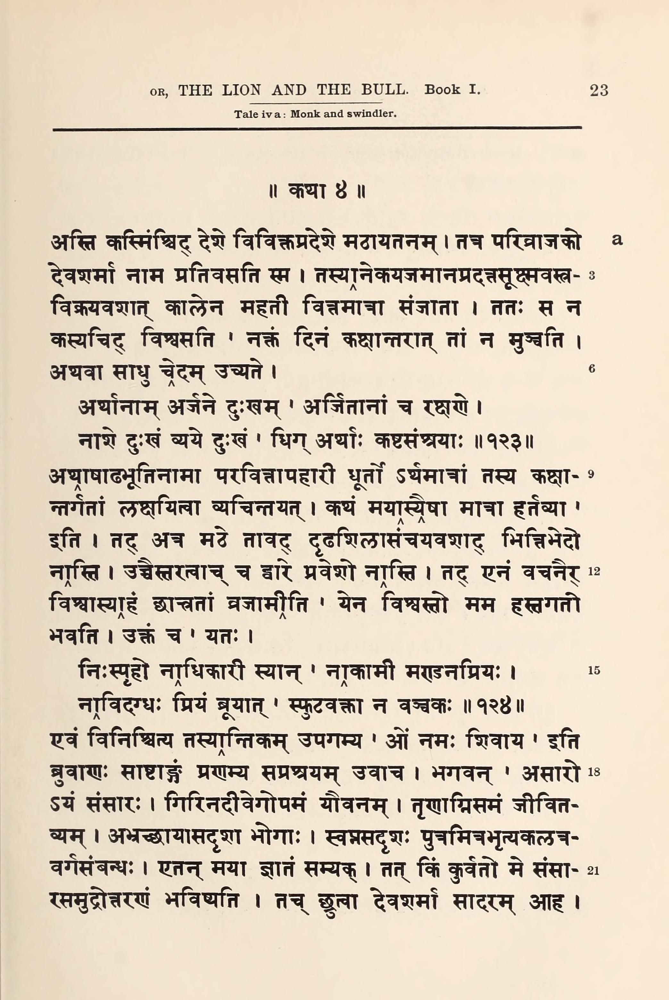
In a certain district there was a monastery in a secluded spot. In it lived a holy man named Godly, who in course of time acquired a great sum of money by selling finely woven garments, the numerous offerings of the faithful for whom he performed sacrifices.
As a result, he trusted no man, and kept his treasure under his arm by night and day. For there is wisdom in the proverb:
Money causes pain in getting; In the keeping, pain and fretting; Pain in loss and pain in spending: Damn the trouble never ending!
Now a rogue named June, who took other people’s money from them, observed the treasure under his arm, and reflected: “How am I to take this treasure from him? In the first place, I cannot pierce the wall of the cell, which is compactly built of solid stone. And I cannot enter the door, which is too high. I will talk to him, win his confidence, and become his disciple, for he will be in my power when I have his confidence. As the proverb says:
None lacking shrewdness flatter well; None but a lover plays the swell; No saints are found in judgment seats; No clear, straightforward speaker cheats.”
Having thus made up his mind, he drew near to Godly, uttered the words: “Glory to Shiva. Amen,” fell flat on his face, and spoke with deference: “O holy sir! All life is vanity. Youth slips by like a mountain torrent. The days of our life are like a fire in chaff. Delights of the flesh are as the shadow of a cloud. Union with son, friend, servant, wife, is but a dream. All this I discern clearly. What shall I do that I may safely cross the sea of many lives?”
On hearing this, Godly said respectfully: “My son, blest
⛶
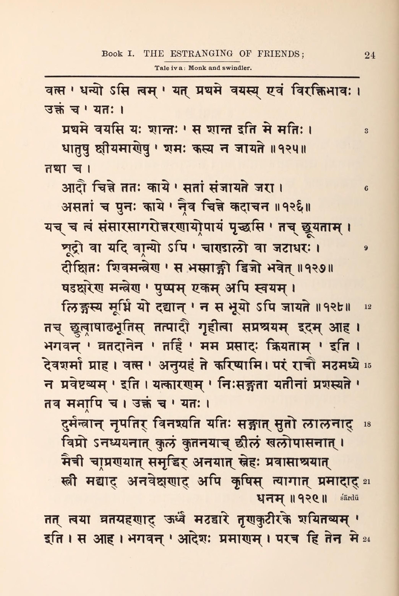 are you, being thus indifferent to the world in early
youth. What says the proverb?
{kind=link}
'Tis only saints in youth That can be saints in truth: Ah, who is not a saint When ebbing passions faint?
And again:
First mind, then body ages In case of holy sages: The body ages first, Mind never, in the worst.
“And as for your search to find a means of safely crossing the sea of many lives, just listen to this:
A hangman with his matted hair, Or serf, or other man, through prayer To holy Shiva, changes caste, Becomes pure Brahman at the last. Six syllables, a little prayer; A single blossom resting there On Shiva's symbol—and on earth No further pain, no later birth.”
When he had listened to this, June clasped the holy man’s feet and said deferentially: “This being so, holy sir, pray do me the favor of imposing a vow.”
“My son,” answered Godly, “I am ready to oblige you. But you must not enter my cell by night. For renunciation is recommended to ascetics, to you and to me as well. As the proverb puts it:
Ascetics come to grief through greed; And kings, who evil counsels heed; Children through petting, wives through wine, Through wicked sons a noble line; A Brahman through unstudied books, A character through haunting crooks; A farm is ruined through neglect; And friendship, lacking kind respect; Love dies through absence; fortunes crash Through naughtiness; and hoarded cash Through carelessness or giving rash.
So, after taking the vow, you must sleep in a hut of thatch at the monastery gate.”
“Holy sir,” said the other, “your prescription is the law
of my life. I shall need it in the next world.” So, the
⛶
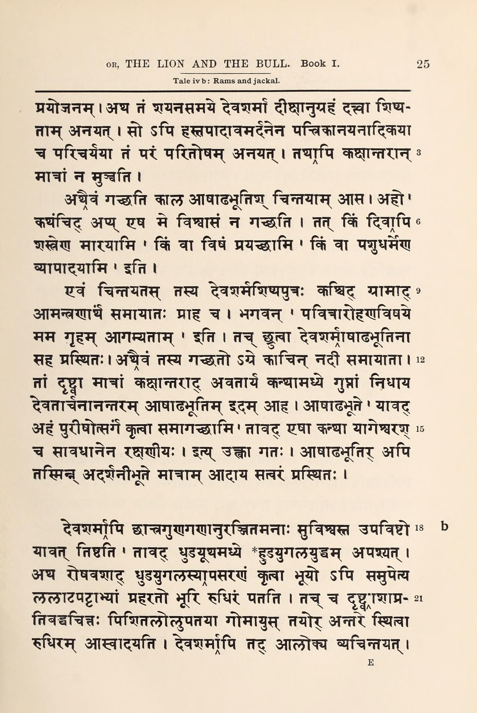 sleeping arrangements being made, Godly graciously gave
him initiation and granted discipleship. June for his part
made the holy man very happy by rubbing his hands and feet,
bringing writing-paper, and other services. Still, Godly kept
his treasure under his arm.
{kind=link}
As the time passed in this manner, June reflected: “Dear me! Do what I will, he does not trust me. So shall I kill him with a knife in broad daylight? Or give him poison? Or butcher him like a beast?”
While he was reflecting thus, the son of a pupil of Godly’s came from the village, bearing an invitation. And he said: “Holy sir, pray come to my house for the ceremony of the sacred thread.” And when Godly heard this, he started with June.
Now as he traveled, he came to a river, seeing which he took the treasure from under his arm, wrapped it carefully in his patched ascetic robe, worshiped the appropriate gods, and said to June: “June, I must step aside. Please keep careful watch of this robe and of the necessary until I return.” With these words he moved away. And as soon as he was out of sight, June seized the treasure and decamped.
The Jackal at the Ram-fight
Now Godly sat down perfectly carefree, for his disciple’s countless virtues had lulled his suspicions. As he rested, he saw a herd of rams, and two of them fighting. These two would angrily draw apart and dash together, their slablike foreheads crashing so that blood flowed freely. This spectacle attracted a jackal whose soul was in the fetters of carnivorous desire, and he stood between the two, lapping up the blood.
When Godly observed this, he thought: “Well, well! This is
⛶
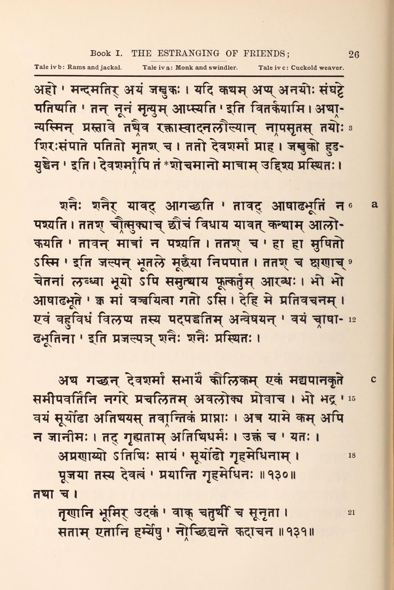 a dull-witted jackal. If he happens to be between just
when they crash, he will certainly meet death. This inference
seems inescapable to me.”
{kind=link}
Now the next time, being greedy as ever to lap up the blood, the jackal did not move away, was caught between the crashing heads, and was killed. Then Godly said: “The jackal at the ram-fight,” and grieving for him, started to resume his treasure.
He returned in no haste, but when he failed to find June, he hurried through a ceremony of purification, then examined his robe. Finding the treasure gone, he fell to the ground in a swoon, murmuring: “Oh, oh! I am robbed.” In a moment he came to himself, rose again, and started to scream: “June, June! Where did you go after cheating me? Give me answer!” With this repeated lamentation he moved slowly on, picking up his disciple’s tracks and muttering: “And we, when tricked by June.”
The Weaver’s Wife
Now as he walked along, Godly spied a weaver who with his wife was on his way to a neighboring city for liquor to drink, and he called out: “Look here, my good fellow! I come to you a guest, brought by the evening sun. I do not know a soul in the village. Let me receive the treatment due a guest. For the proverb says:
No stranger may be turned aside Who seeks your door at eventide; Nay, honor him and you shall be Transmuted into deity.
And again:
Some straw, a floor, and water,
With kindly words beside:
These four are never wanting
Where pious folk abide.
⛶{kind=link}
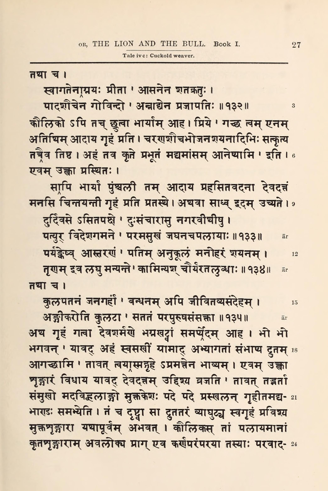
And once again:
The sacred fires by kindly word And Indra by the chair is stirred, Krishna by water for the feet, The Lord of All by things to eat.”
On hearing this, the weaver said to his wife: “Go, my dear. Take this guest to the house. Treat him hospitably, giving him water for the feet, food, a bed, and so on. And stay in the house yourself. I will bring plenty of wine and meat for you.” With this he went farther.
So the wife started home with Godly, and she showed a laughing countenance, for she was a whore and had a certain swain in mind. Indeed, there is sense in the verse:
When night is dark
And dark the day,
When streets are mired
With sticky clay,
When husband lingers
Far away,
The flirt becomes
Supremely gay.
The wench cares not
A straw to miss
The covered couch,
The husband's kiss,
The pleasant bed;
In place of this
She ever seeks
A stolen bliss.
And again:
For stranger men
The slut will see
The ruin of
Her family,
The world's reproach,
The jailer's key—
Will risk a death
She cannot flee.
Then she went home, offered Godly a rickety cot and said: “My holy sir, a woman friend has come from the village and I must speak to her. I will be back directly. Meanwhile, you may stay in our house. But please be careful.” With this she put on her best things and started to find her swain.
At this moment she ran into her husband, clasping a jug of wine. He was reeling drunk, his hair was towsled, and he stumbled at every step. She ran when she saw him, entered the house, took off her finery, and appeared as usual.
Now the weaver had seen her flee, had observed the finery,
⛶
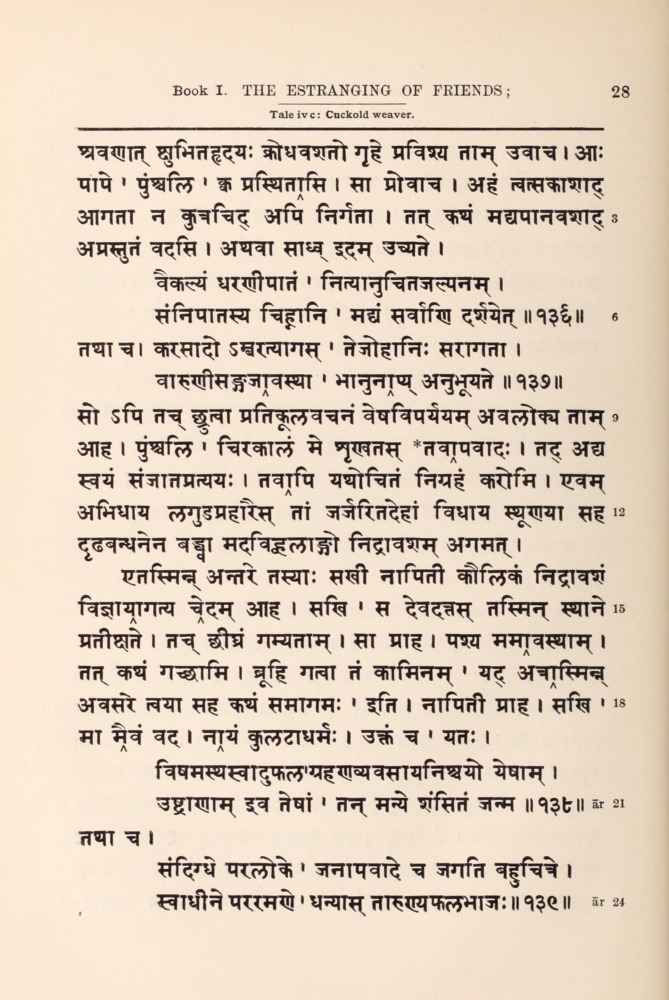 and since he had previously heard the gossip that went
the rounds about her, his heart was troubled and anger
overcame him. So he entered the house and said: “You wench!
You whore! Where were you going?”
{kind=link}
And she replied: “I have not been out since I left you. What is this drunken twaddle? There is sense in the proverb:
After wine and fever, these
Selfsame symptoms come:
Shaking, falling to the ground,
Mad delirium.
And again:
The setting sun and drunken man
Are both a fiery red;
They sink in naked helplessness;
Their dignity is dead.”
When he had taken the scolding and had noticed her change of dress, he said: “Whore! I have heard gossip about you for a long time. Today I have seen the proof. I am going to give you what you deserve.” So he beat her limp with a club, tied her firmly to a post, and fell into a drunken slumber.
At this juncture her friend, the barber’s wife, learning that the weaver was asleep, came in and said: “My dear, he is waiting for you over there—you know who. Go at once.” But the weaver’s wife replied: “Just see what a fix I am in. How can I go? You must return and tell my adorer that I cannot possibly meet him there at this moment.”
“My dear,” said the barber’s wife, “do not say things like that. For a wench of spirit this is no way to behave. As the saying goes:
Those who earn the name of blessed
Show a camel-like persistence
When they pluck the fruit of pleasure,
Counting neither toil nor distance.
And again:
As the other world is doubtful
And as scandal misses truth,
When you've hooked another's lover,
Best enjoy the fruit of youth.
⛶{kind=link}
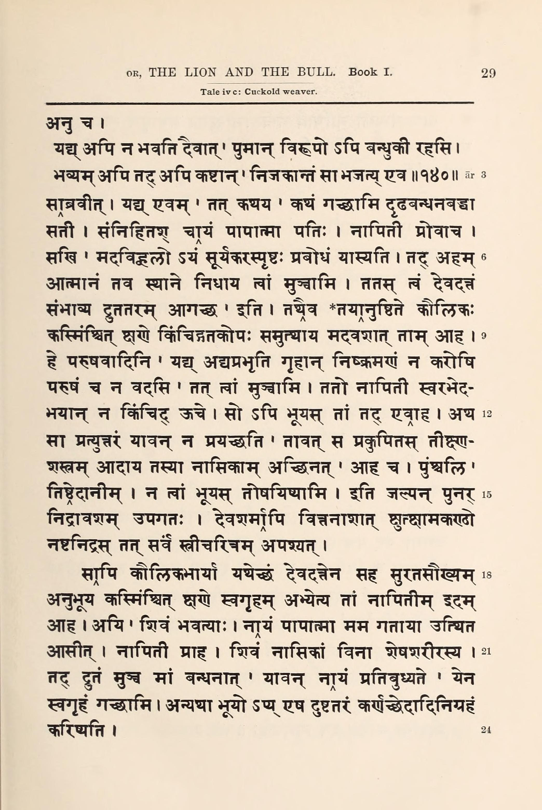
And once again:
Fate may rob him of his manhood, He may handsome be or ugly, Yet a wench, whate'er it cost her, Entertains her lover snugly.”
“Very fine indeed,” said the weaver’s wife. “But tell me how I am to go when I am tied fast. And here lies my husband—the brute!” “My dear,” said the barber’s wife, “he is helpless with drink and will not wake until the sun’s rays reach him. I will set you free and take your place myself. But you must hurry back when you have entertained your admirer.”
This she did, and a moment later the weaver rose a little mollified, and said drunkenly: “Come, you nagger! If you will stay at home after today and stop nagging, I will set you free.” The barber’s wife said nothing, fearing that her voice would betray her. Even when he repeated his offer, she made no answer. Then he became angry and cut off her nose with a sharp knife. And he said: “Whore! Now you can stay there. I shall not be nice to you again.” So he fell asleep, muttering. Now Godly, having lost his money, was so tormented by hunger that he could not sleep, and was a witness of all that the women did.
Presently the weaver’s wife, after enjoying the full delight of love with her swain, came home and said to the barber’s wife: “Well, are you all right? I hope that brute did not get up while I was gone.” And the barber’s wife answered: “The rest of me is all right. But I’ve lost my nose. Set me free quick, before he wakes up. I want to go home. If not, he will do something worse next time, cut off ears and things.”
{kind=link}
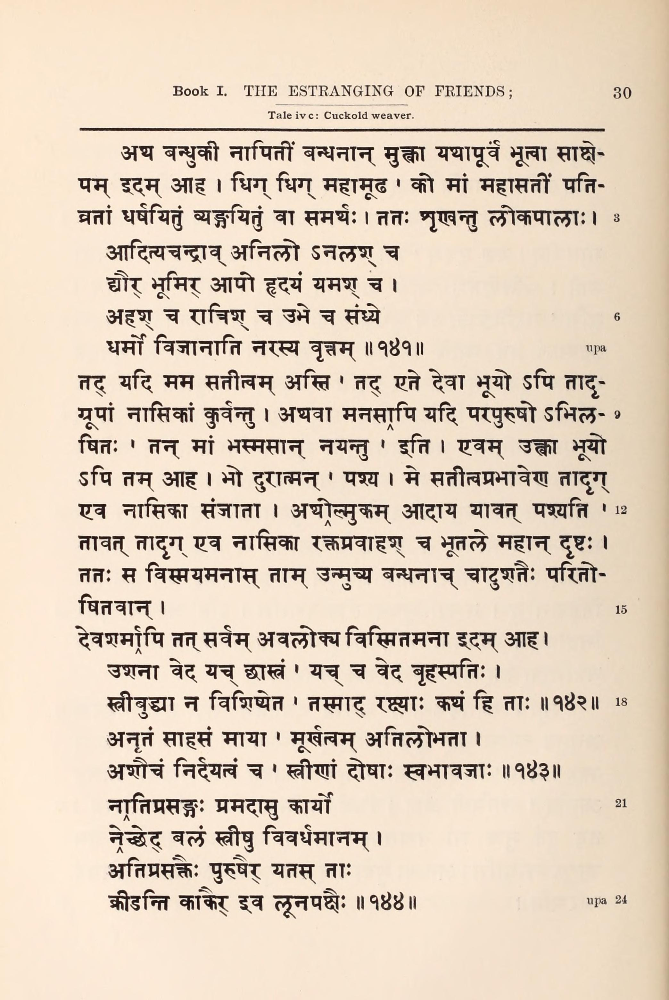
So the wench freed the barber’s wife, took her former position, and cried reproachfully: “Oh, you dreadful simpleton! I am a true wife, a model of faithfulness. What man is able to violate or disfigure me? Listen, ye guardian deities of the world!
Earth, heaven, and death, the feeling mind, Sun, moon, and water, fire and wind, Both twilights, justice, day and night Discern man's conduct, wrong or right.
So, if I am a faithful wife, may these gods make my nose grow again as it was before. More than that, if I have had so much as a secret desire for a strange man, may they reduce me to ashes.”
After this explosion, she said to him directly: “Look, you villain! By virtue of my faithfulness my nose has grown as it was before.” And when he took a torch and examined her, he found her nose as it was originally, and a great pool of blood on the floor. At this he was amazed, released her from the cords, and flattered her with a hundred wheedling endearments.
Now Godly had seen the whole business. And he was amazed and said:
“Learn science with the gods above
Or imps in nether space,
Yet women's wit will rival it:
How keep them in their place?
Behold the faults with woman born:
Impurity, and heartless scorn,
Untruth, and folly, reckless heat,
Excessive greediness, deceit.
Be not enslaved by women's charm,
Nor wish them growth in power to harm:
Their slaves, of manly feeling stripped,
Are tame, pet crows whose wings are clipped.
⛶
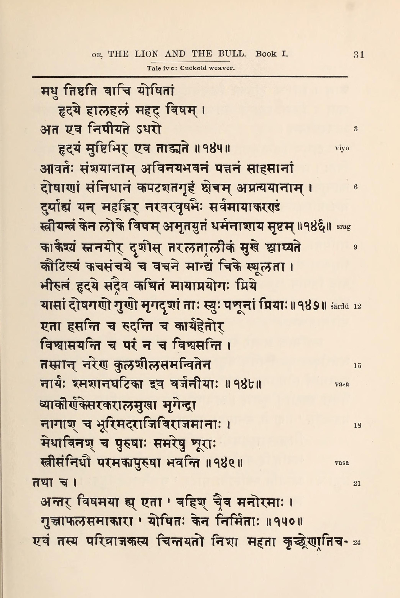Honey in a woman's words,
Poison in her breast:
So, although you taste her lip,
Drub her on the chest.
This palace filled with vice, this field where sprouts
Suspicion's crop, this whirling pool of doubts,
This town of recklessness, sin's aggregate,
This house where frauds by hundreds lie in wait,
This basketful of riddling sham and quip
O'er guessing which our best and bravest trip,
This woman, this machine, this nectar-bane—
Who set it here, to make religion vain?
A bosom hard is praised, a forehead low,
A fickle glance, a mumbling speech and slow,
Thick hips, a heart that constant tremors move,
A natural twist in hair, and twists in love.
Their virtues are a pack of vices. Then
Let beasts adore the fawn-eyed things, not men.
For reasons good they laugh or weep;
They trust you not, your trust they keep:
These graveyard urns, oh, haunt them not!
Keep kin and conduct free from spot.
The lion o'er whose awful face
Falls fierce the towsled mane,
The elephant upon whose cheeks
Streams ichor's glistening rain,
The men of wit or courage who
In books or battles gleam,
In presence of their females, all
Turn into cowards supreme.
{kind=link}
And once more:
This gunja-fruit (oh, what was God about?) Is poisonous within, and sweet without.”
In these meditations the night dragged drearily for the
⛶
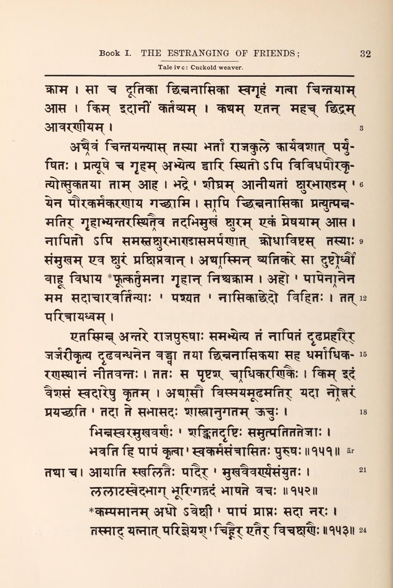 holy man. Meanwhile the go-between went home with her
nose cut off, and reflected: “What is to be done now? How is
this great deficiency to be concealed?”
{kind=link}
The night during which she pondered thus, her husband spent in the king’s palace, practicing his trade. At dawn he came home and, being eager to begin his thriving business with the townspeople, he stopped at the door and called to her: “My dear, bring me my razor-case at once. The townspeople need my services.”
Hereupon an idea occurred to the noseless woman. She remained in the house, but sent him a single razor. And the barber, angry because the entire case had not been delivered, flung the razor in her direction. This gave the wench her opportunity. Lifting her hands to heaven, she dashed from the house, screaming with all her might: “Oh, oh, oh! The ruffian! I was always a faithful wife. Look! He cut off my nose. Save me, save me!”
Hereupon the police arrived, thrashed the barber limp, tied him fast, and took him to court with his wife whose nose was gone. And the judges asked him: “Why did you do this ghastly thing to your wife?” Then, his wits being so addled by astonishment that he could give no answer, the jurymen quoted law:
“The guilty man is terrified By reason of his crime. His pride Is gone, his powers of speaking fail, His glances rove, his face is pale.
And again:
The sweat appears upon his brow, He stumbles on, he knows not how, His face is pale, and all he utters Is much distorted; for he stutters. The culprit always may be found To shake, and gaze upon the ground: Observe the signs as best you can And shrewdly pick the guilty man.⛶
{kind=link}
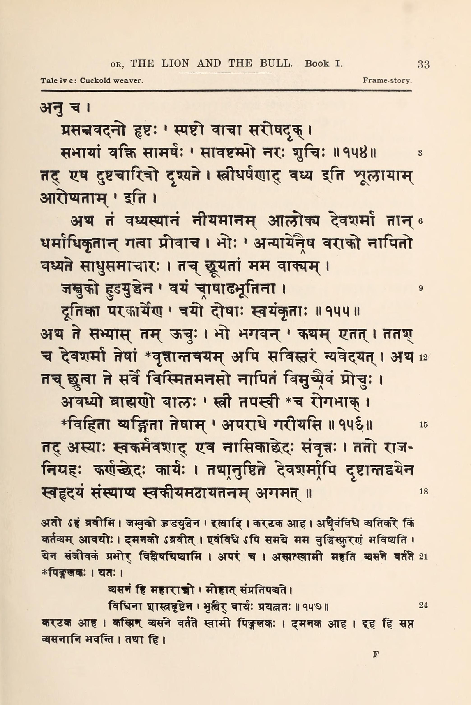
While, on the other hand:
The innocent is self-reliant; His speech is clear, his glance defiant; His countenance is calm and free; His indignation makes his plea.
The prisoner is obviously guilty. The legal penalty for assaulting a woman is death. Let him be impaled.”
But Godly, seeing him led to the place of execution, went to the officers of justice and said: “Gentlemen, you make a mistake in putting this wretched barber to death. His conduct has been correct. Pray listen to these words of mine:
The jackal at the ram-fight; And we, when tricked by June; The meddling friend—were playing A self-defeating tune.”
So the officers said: “How was that, holy sir?” Then Godly related to them the three stories, complete in every detail. And they were all astonished as they listened. They set the barber free, and said:
“Slay not a woman, Brahman, child, An invalid or hermit mild: In case of major dereliction, Disfigurement is the infliction.
Now she has lost her nose through her own act. As additional punishment from the king, let her ears be cut off.” When this had been done, Godly, strengthening his spirit by the two examples, returned to his own monastery.
“And that is why I say:
The jackal at the ram-fight, ....
and the rest of it.”
“Well,” said Cheek, “such being the case, what are you and I to do?” And Victor answered: “Even in these circumstances, I shall have a flash of intelligence, showing me how to separate Lively from the king. Besides, he has fallen into serious vice, has our master Rusty. For
Mad folly stings
The greatest kings,
Who then embrace a vice;
But servants' care
Should check them there
By means of learning nice.”
“Into what vice has our master Rusty fallen?” asked Cheek. And Victor replied: “There are seven vices in the world, namely:
⛶
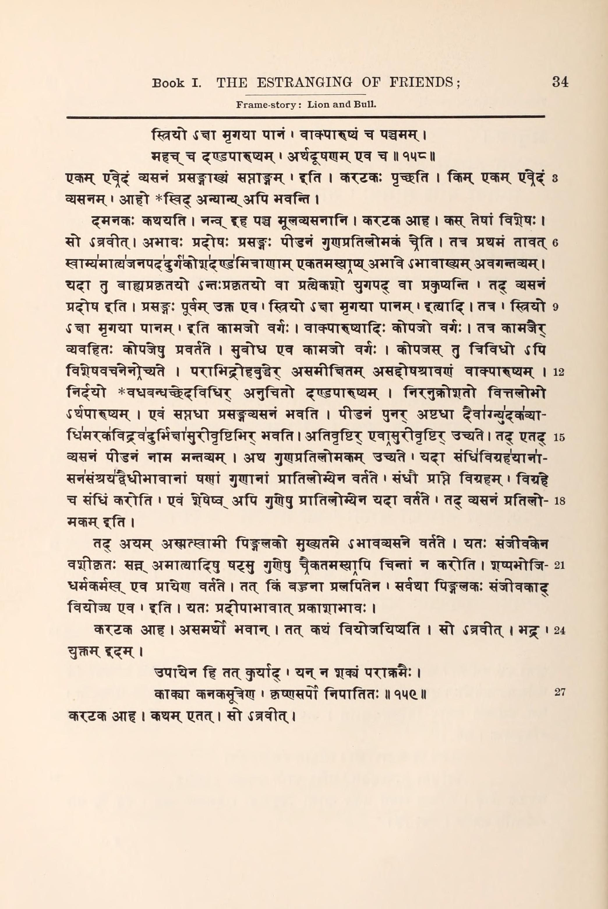Drink, women, hunting, scolding, dice,
Greed, cruelty: these seven are vice.
{kind=link}
These, however, really make a single vice, called ‘attachment,’ with seven subdivisions.” Then Cheek inquired: “Is there only a single fundamental vice, or are there others also?”
And Victor expounded: “There are in the world five situations fundamentally vicious.” And when Cheek asked: “How are they differentiated?” Victor continued: “They are called: (1) deficiency, (2) corruption, (3) attachment, (4) devastation, (5) mistaken policy.
“To begin at the beginning, the vice called ‘deficiency’ means the non-existence of one or another of these: king, counselor, people, fortress, treasure, punitive power, friends.
“Secondly, when subjects, whether foreign or native, become restless, whether individually or en masse, there arises the vicious situation called ‘corruption.’
“‘Attachment’ was explained above, in the words:
Drink, women, hunting, ....
and the rest of it. Here there is a love-group (drink, women, hunting, dice) and a wrath-group (scolding, and the rest). A man thwarted in the love-group becomes obnoxious to the wrath-group. The love-group requires no elucidation. The wrath-group, however, threefold as already described, needs some further characterization. ‘Scolding’ is ill-considered imputation of fault on the part of one bent on injuring an antagonist. ‘Cruelty’ means ruthless and unwarranted refinements in putting to death, imprisonment, mutilation. ‘Greed’ is covetousness pushed to a merciless point. These are the seven subdivisions of the vice of attachment.
“Next, there are eight kinds of devastation: by act of God, fire, water, disease, plague, panic, famine, devil-rain (which is a mere name for excessive rain). This disposes of the vice called ‘devastation.’
“Finally, there is mistaken policy. Where a man makes a mistaken use of the six expedients—peace, war, change of base, entrenchment, alliance, duplicity—adopting war instead of peace, or peace instead of war, or making similar mistakes in regard to the other expedients, there we have the vice of mistaken policy.
“Now our master Rusty has fallen into the very first vice, that of deficiency. For he has been so captivated by Lively that he pays not the smallest heed to counselor or any other of the six supports of his throne. He adopts rather completely a vegetarian morality. So what is the use of a lengthy discussion? Rusty must by all means be detached from Lively. No lamp, no light.”
“How will you detach him?” objected Cheek. “You have not the power.” “My dear fellow,” said Victor, “there is a verse to fit the situation, namely:
In cases where brute force would fail,
A shrewd device may still prevail:
The crow-hen used a golden chain,
And so the dreadful snake was slain.”
“How was that?” asked Cheek. And Victor told
How the Crow-Hen Killed the Black Snake
{kind=link}
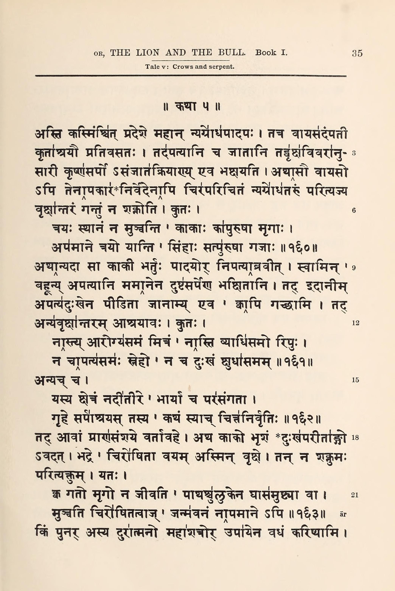
In a certain region grew a great banyan tree. In it lived a crow and his wife, occupying the nest which they had built. But a black snake crawled through the hollow trunk and ate their chicks as fast as they were born, even before baptism. Yet for all his sorrow over this violence, the poor crow could not desert the old familiar banyan and seek another tree. For
Three cannot be induced to go— The deer, the cowardly man, the crow: Three go when insult makes them pant— The lion, hero, elephant.
At last the crow-hen fell at her husband’s feet and said: “My dear lord, a great many children of mine have been eaten by that awful snake. And grief for my loved and lost haunts me until I think of moving. Let us make our home in some other tree. For
No friend like health abounding;
And like disease, no foe;
No love like love of children;
Like hunger-pangs, no woe.
And again:
With fields overhanging rivers,
With wife on flirting bent,
Or in a house with serpents,
No man can be content.
We are living in deadly peril.” At this the crow was dreadfully depressed, and he said: “We have lived in this tree a long time, my dear. We cannot desert it. For
Where water may be sipped, and grass
Be cropped, a deer might live content;
Yet insult will not drive him from
The wood where all his life was spent.
Moreover, by some shrewd device I will bring death upon this villainous and mighty foe.”
{kind=link}
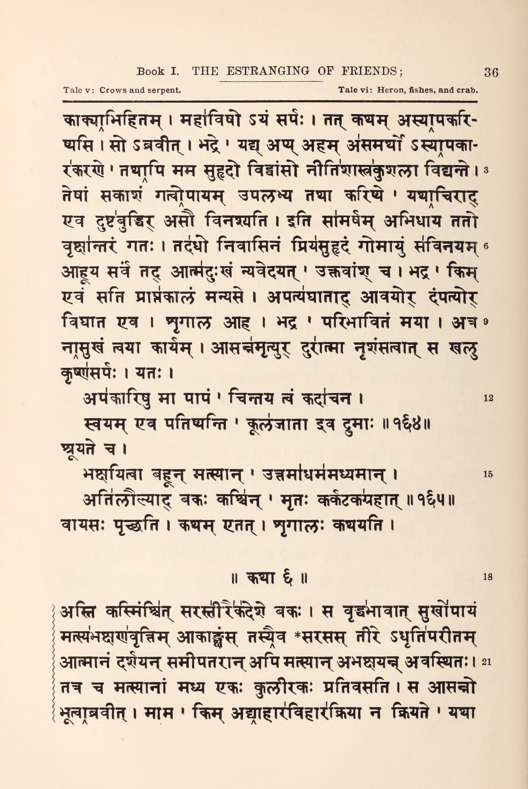
“But,” said his wife, “this is a terribly venomous snake. How will you hurt him?” And he replied: “My dear, even if I have not the power to hurt him, still I have friends who possess learning, who have mastered the works on ethics. I will go and get from them some shrewd device of such nature that the villain—curse him!—will soon meet his doom.”
After this indignant speech he went at once to another tree, under which lived a dear friend, a jackal. He courteously called the jackal forth, related all his sorrow, then said: “My friend, what do you consider opportune under the circumstances? The killing of our children is sheer death to my wife and me.”
“My friend,” said the jackal, “I have thought the matter through. You need not put yourself out. That villainous black snake is near his doom by reason of his heartless cruelty. For
Of means to injure brutal foes
You do not need to think,
Since of themselves they fall, like trees
Upon the river's brink.
And there is a story:
A heron ate what fish he could, The bad, indifferent, and good; His greed was never satisfied Till, strangled by a crab, he died.”
“How was that?” asked the crow. And the jackal told the story of
The Heron That Liked Crab-Meat
There was once a heron in a certain place on the edge of a pond. Being old, he sought an easy way of catching fish on which to live. He began by lingering at the edge of his pond, pretending to be quite irresolute, not eating even the fish within his reach.
Now among the fish lived a crab. He drew near and said:
“Uncle, why do you neglect today your usual meals and
⛶
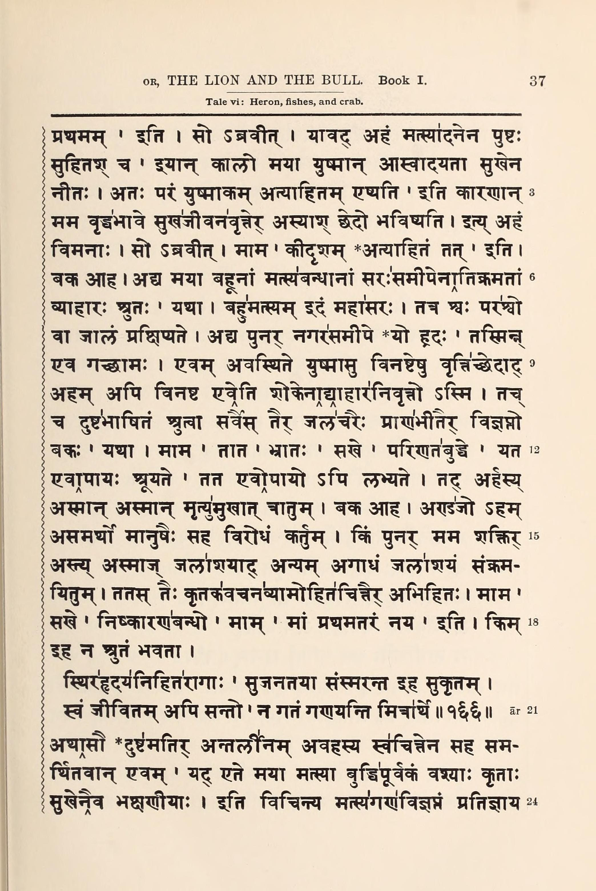 amusements?” And the heron replied: “So long as I kept
fat and flourishing by eating fish, I spent my time
pleasantly, enjoying the taste of you. But a great disaster
will soon befall you. And as I am old, this will cut short
the pleasant course of my life. For this reason I feel
depressed.”
{kind=link}
“Uncle,” said the crab, “of what nature is the disaster?” And the heron continued: “Today I overheard the talk of a number of fishermen as they passed near the pond. ‘This is a big pond,’ they were saying, ‘full of fish. We will try a cast of the net tomorrow or the day after. But today we will go to the lake near the city.’ This being so, you are lost, my food supply is cut off, I too am lost, and in grief at the thought, I am indifferent to food today.”
Now when the water-dwellers heard the trickster’s report, they all feared for their lives and implored the heron, saying: “Uncle! Father! Brother! Friend! Thinker! Since you are informed of the calamity, you also know the remedy. Pray save us from the jaws of this death.”
Then the heron said: “I am a bird, not competent to contend with men. This, however, I can do. I can transfer you from this pond to another, a bottomless one.” By this artful speech they were so led astray that they said: “Uncle! Friend! Unselfish kinsman! Take me first! Me first! Did you never hear this?
Stout hearts delight to pay the price Of merciful self-sacrifice, Count life as nothing, if it end In gentle service to a friend.”
Then the old rascal laughed in his heart, and took counsel
with his mind, thus: “My shrewdness has brought these fishes
into my power. They ought to be eaten very comfortably.”
Having thus thought it through, he promised what the
⛶
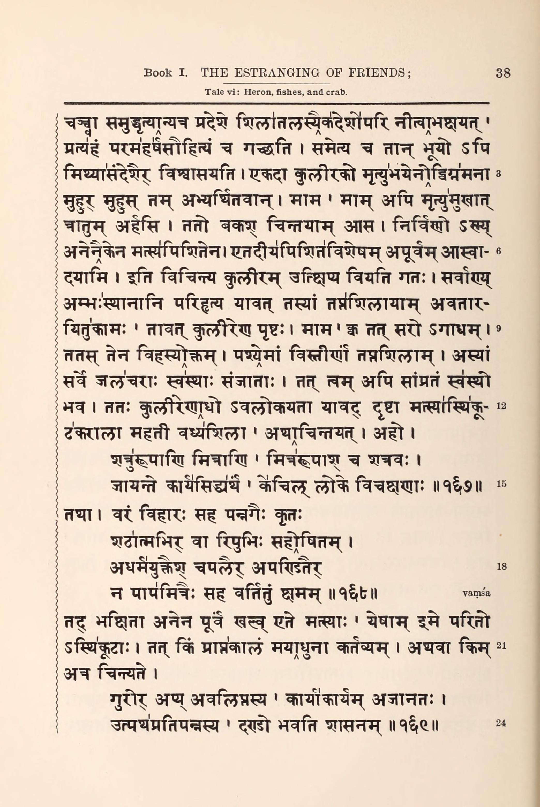 thronging fish implored, lifted some in his bill,
carried them a certain distance to a slab of stone, and ate
them there. Day after day he made the trip with supreme
delight and satisfaction, and meeting the fish, kept their
confidence by ever new inventions.
{kind=link}
One day the crab, disturbed by the fear of death, importuned him with the words: “Uncle, pray save me, too, from the jaws of death.” And the heron reflected: “I am quite tired of this unvarying fish diet. I should like to taste him. He is different, and choice.” So he picked up the crab and flew through the air.
But since he avoided all bodies of water and seemed planning to alight on the sun-scorched rock, the crab asked him: “Uncle, where is that pond without any bottom?” And the heron laughed and said: “Do you see that broad, sun-scorched rock? All the water-dwellers have found repose there. Your turn has now come to find repose.”
Then the crab looked down and saw a great rock of sacrifice, made horrible by heaps of fish-skeletons. And he thought: “Ah me!
Friends are foes and foes are friends As they mar or serve your ends; Few discern where profit tends.
Again:
If you will, with serpents play; Dwell with foemen who betray: Shun your false and foolish friends, Fickle, seeking vicious ends.
Why, he has already eaten these fish whose skeletons are scattered in heaps. So what might be an opportune course of action for me? Yet why do I need to consider?
Man is bidden to chastise Even elders who devise Devious courses, arrogant, Of their duty ignorant.⛶
{kind=link}
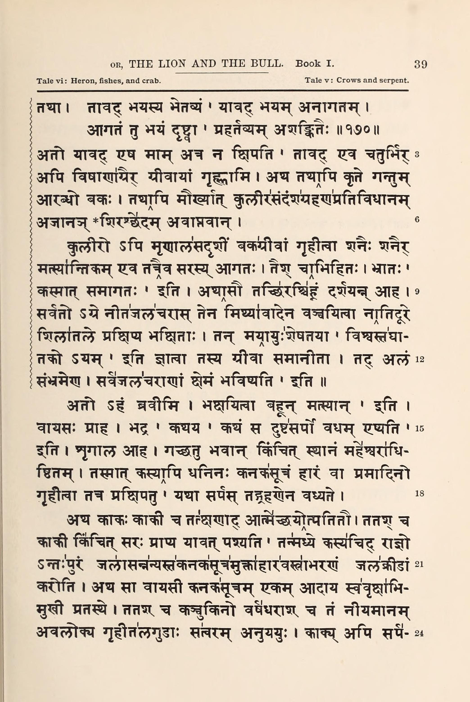
Again:
Fear fearful things, while yet
No fearful thing appears;
When danger must be met,
Strike, and forget your fears.
So, before he drops me there, I will catch his neck with all four claws.”
When he did so, the heron tried to escape, but being a fool, he found no parry to the grip of the crab’s nippers, and had his head cut off.
Then the crab painfully made his way back to the pond, dragging the heron’s neck as if it had been a lotus-stalk. And when he came among the fish, they said: “Brother, why come back?” Thereupon he showed the head as his credentials and said: “He enticed the water-dwellers from every quarter, deceived them with his prevarications, dropped them on a slab of rock not far away, and ate them. But I—further life being predestined—perceived that he destroyed the trustful, and I have brought back his neck. Forget your worries. All the water-dwellers shall live in peace.”
“And that is why I say:
A heron ate what fish he could, ....
and the rest of it.”
“My friend,” said the crow, “tell me how this villainous snake is to meet his doom.” And the jackal answered: “Go to some spot frequented by a great monarch. There seize a golden chain or a necklace from some wealthy man who guards it carelessly. Deposit this in such a place that when it is recovered, the snake may be killed.”
So the crow and his wife straightway flew off at random, and the wife came upon a certain pond. As she looked about, she saw the women of a king’s court playing in the water, and on the bank they had laid golden chains, pearl necklaces, garments, and gems. One chain of gold the crow-hen seized and started for the tree where she lived.
But when the chamberlains and the eunuchs saw the theft,
they picked up clubs and ran in pursuit. Meanwhile, the
⛶
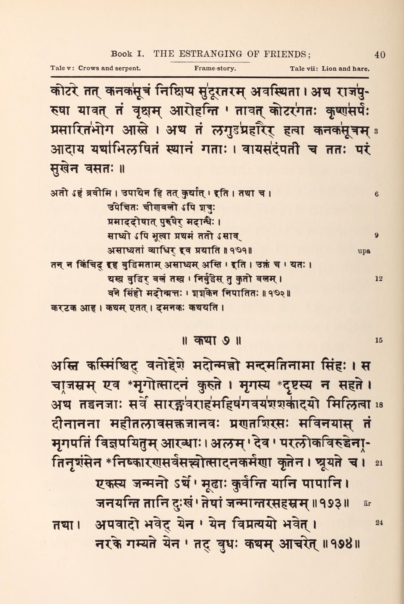 crow-hen dropped the golden chain in the snake’s hole
and waited at a safe distance.
{kind=link}
Now when the king’s men climbed the tree, they found a hole and in it a black snake with swelling hood. So they killed him with their clubs, recovered the golden chain, and went their way. Thereafter the crow and his wife lived in peace.
“And that is why I say:
In cases where brute force would fail, ....
and the rest of it. Furthermore:
Some men permit a petty foe Through purblind heedlessness to grow, Till he who played a petty rôle Grows, like disease, beyond control.
Indeed, there is nothing in the world that the intelligent cannot control. As the saying goes:
Intelligence is power. But where Could power and folly make a pair? The rabbit played upon his pride To fool him; and the lion died.”
“How was that?” asked Cheek. And Victor told the story of
Numskull and the Rabbit
In a part of a forest was a lion drunk with pride, and his name was Numskull. He slaughtered the animals without ceasing. If he saw an animal, he could not spare him.
So all the natives of the forest—deer, boars, buffaloes, wild oxen, rabbits, and others—came together, and with woe-begone countenances, bowed heads, and knees clinging to the ground, they undertook to beseech obsequiously the king of beasts: “Have done, O King, with this merciless, meaningless slaughter of all creatures. It is hostile to happiness in the other world. For the Scripture says:
A thousand future lives
Will pass in wretchedness
For sins a fool commits
His present life to bless.
Again:
What wisdom in a deed
That brings dishonor fell,
That causes loss of trust,
That paves the way to hell?
⛶{kind=link}
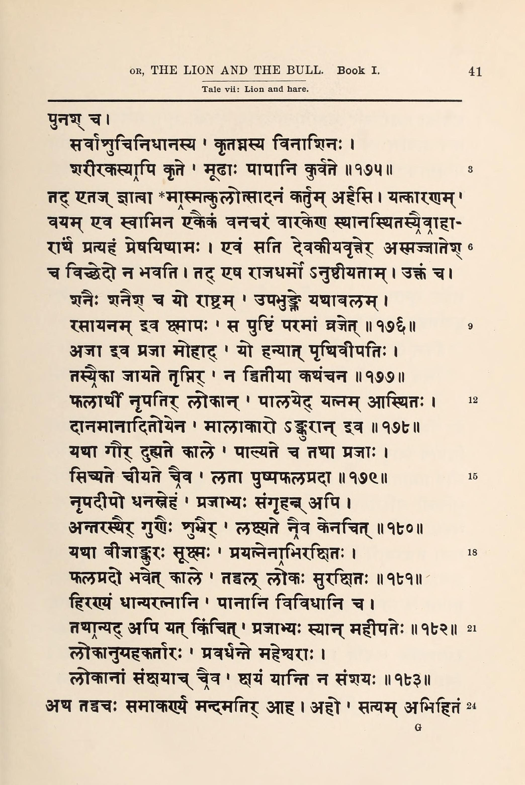
And yet again:
The ungrateful body, frail
And rank with filth within,
Is such that only fools
For its sake sink in sin.
“Consider these facts, and cease, we pray, to slaughter our generations. For if the master will remain at home, we will of our own motion send him each day for his daily food one animal of the forest. In this way neither the royal sustenance nor our families will be cut short. In this way let the king’s duty be performed. For the proverb says:
The king who tastes his kingdom like
Elixir, bit by bit,
Who does not overtax its life,
Will fully relish it.
The king who madly butchers men,
Their lives as little reckoned
As lives of goats, has one square meal,
But never has a second.
A king desiring profit, guards
His world from evil chance;
With gifts and honors waters it
As florists water plants.
Guard subjects like a cow, nor ask
For milk each passing hour:
A vine must first be sprinkled, then
It ripens fruit and flower.
The monarch-lamp from subjects draws
Tax-oil to keep it bright:
Has any ever noticed kings
That shone by inner light?
A seedling is a tender thing,
And yet, if not neglected,
It comes in time to bearing fruit:
So subjects well protected.
Their subjects form the only source
From which accrue to kings
Their gold, grain, gems, and varied drinks,
And many other things.
The kings who serve the common weal,
Luxuriantly sprout;
The common loss is kingly loss,
Without a shade of doubt.”
After listening to this address, Numskull said: “Well,
⛶
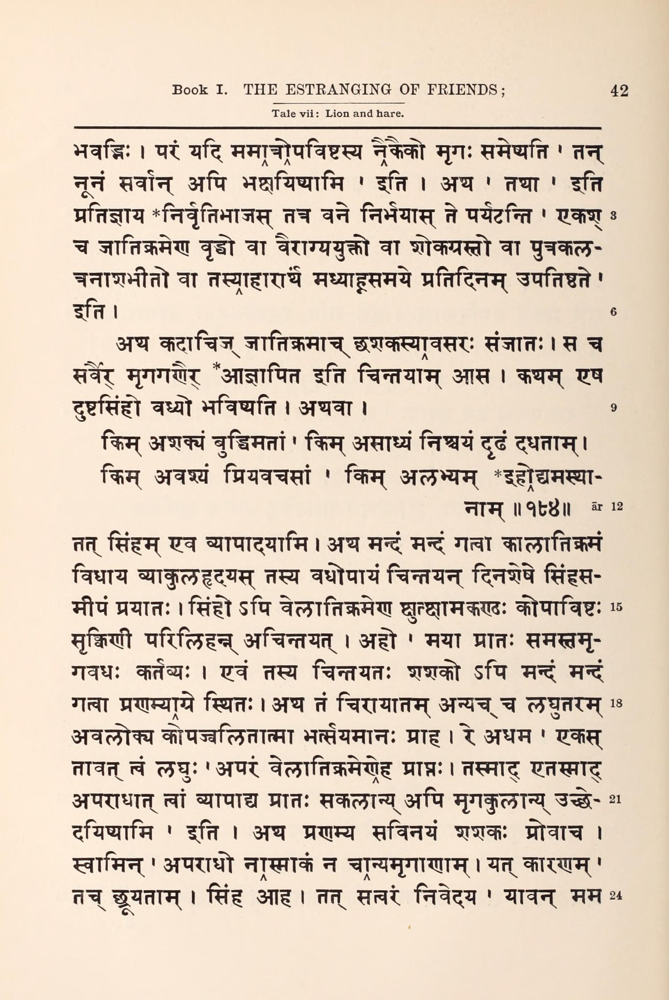 gentlemen, you are quite convincing. But if an animal
does not come to me every day as I sit here, I promise you I
will eat you all.” To this they assented with much relief,
and fearlessly roamed the wood. Each day at noon one of them
appeared as his dinner, each species taking its turn and
providing an individual grown old, or religious, or
grief-smitten, or fearful of the loss of son or wife.
{kind=link}
One day a rabbit’s turn came, it being rabbit-day. And when all the thronging animals had given him directions, he reflected: “How is it possible to kill this lion—curse him! Yet after all,
In what can wisdom not prevail? In what can resolution fail? What cannot flattery subdue? What cannot enterprise put through?
I can kill even a lion.”
So he went very slowly, planning to arrive tardily, and meditating with troubled spirit on a means of killing him. Late in the day he came into the presence of the lion, whose throat was pinched by hunger in consequence of the delay, and who angrily thought as he licked his chops: “Aha! I must kill all the animals the first thing in the morning.”
While he was thinking, the rabbit slowly drew near, bowed low, and stood before him. But when the lion saw that he was tardy and too small at that for a meal, his soul flamed with wrath, and he taunted the rabbit, saying: “You reprobate! First, you are too small for a meal. Second, you are tardy. Because of this wickedness I am going to kill you, and tomorrow morning I shall extirpate every species of animal.”
Then the rabbit bowed low and said with deference:
“Master, the wickedness is not mine, nor the other animals’.
Pray hear the cause of it.” And the lion answered: “Well,
⛶
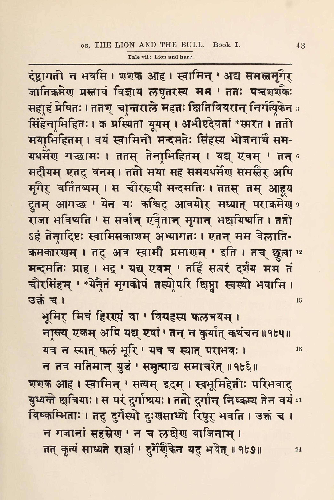 tell it quick, before you are between my fangs.”
{kind=link}
“Master,” said the rabbit, “all the animals recognized today that the rabbits’ turn had come, and because I was quite small, they dispatched me with five other rabbits. But in mid-journey there issued from a great hole in the ground a lion who said: ‘Where are you bound? Pray to your favorite god.’ Then I said: ‘We are traveling as the dinner of lion Numskull, our master, according to agreement.’ ‘Is that so?’ said he. ‘This forest belongs to me. So all the animals, without exception, must deal with me—according to agreement. This Numskull is a sneak thief. Call him out and bring him here at once. Then whichever of us proves stronger, shall be king and shall eat all these animals.’ At his command, master, I have come to you. This is the cause of my tardiness. For the rest, my master is the sole judge.”
After listening to this, Numskull said: “Well, well, my good fellow, show me that sneak thief of a lion, and be quick about it. I cannot find peace of mind until I have vented on him my anger against the animals. He should have remembered the saying:
Land and friends and gold at most
Have been won when battles cease;
If but one of these should fail,
Do not think of breaking peace.
Where no great reward is won,
Where defeat is nearly sure,
Never stir a quarrel, but
Find it wiser to endure.”
“Quite so, master,” said the rabbit. “Warriors fight for their country when they are insulted. But this fellow skulks in a fortress. You know he came out of a fortress when he held us up. And an enemy in a fortress is hard to handle. As the saying goes:
A single royal fortress adds
More military force
Than do a thousand elephants,
A hundred thousand horse.
⛶
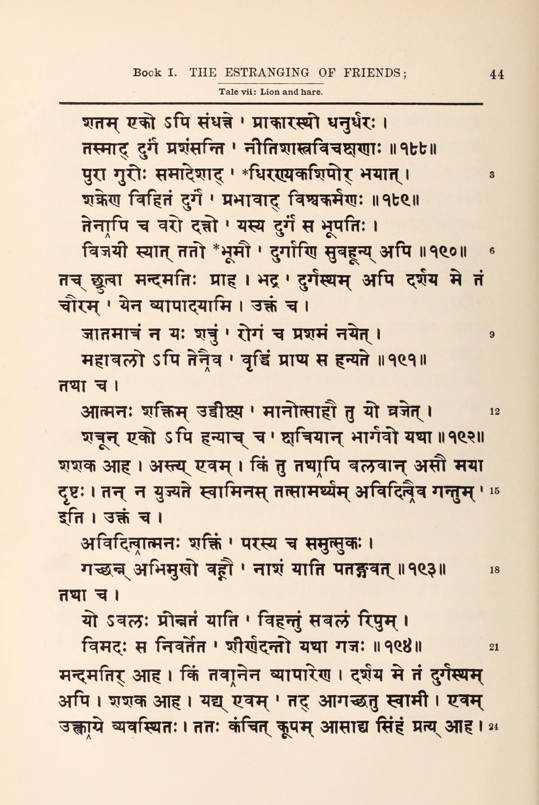A single archer from a wall
A hundred foes forfends;
And so the military art
A fortress recommends.
God Indra used the wit and skill
Of gods in days of old,
When Devil Gold-mat plagued the world,
To build a fortress-hold.
And he decreed that any king
Who built a fortress sound,
Should conquer foemen. This is why
Such fortresses abound.”
{kind=link}
When he heard this, Numskull said: “My good fellow, show me that thief. Even if he is hiding in a fortress, I will kill him. For the proverb says:
The strongest man who fails to crush
At birth, disease or foe,
Will later be destroyed by that
Which he permits to grow.
And again:
The man who reckons well his power,
Nor pride nor vigor lacks,
May single-handed smite his foes
Like Rama-with-the-axe.”
“Very true,” said the rabbit. “But after all it was a mighty lion that I saw. So the master should not set out without realizing the enemy’s capacity. As the saying runs:
A warrior failing to compare
Two hosts, in mad desire
For battle, plunges like a moth
Headforemost into fire.
And again:
The weak who challenge mighty foes
A battle to abide,
Like elephants with broken tusks,
Return with drooping pride.”
But Numskull said: “What business is it of yours? Show him
to me, even in his fortress.” “Very well,” said the rabbit.
“Follow me, master.” And he led the way to a well, where he
said to the lion: “Master, who can endure your majesty? The
⛶
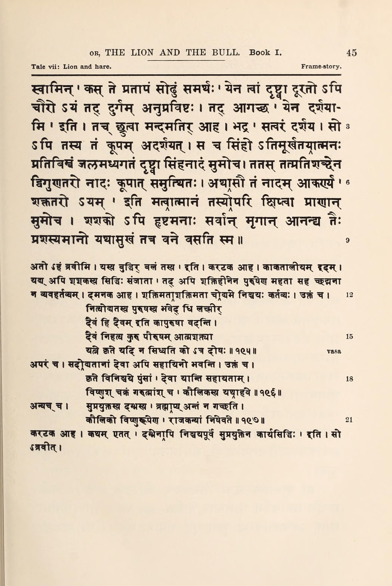 moment he saw you, that thief crawled clear into his
hole. Come, I will show him to you.” “Be quick about it, my
good fellow,” said Numskull.
{kind=link}
So the rabbit showed him the well. And the lion, being a dreadful fool, saw his own reflection in the water, and gave voice to a great roar. Then from the well issued a roar twice as loud, because of the echo. This the lion heard, decided that his rival was very powerful, hurled himself down, and met his death. Thereupon the rabbit cheerfully carried the glad news to all the animals, received their compliments, and lived there contentedly in the forest.
“And that is why I say:
Intelligence is power, ...,
and the rest of it.”
“But,” said Cheek, “that is like a palm-fruit falling on a crow’s head—a quite exceptional case. Even if the rabbit was successful, still a man of feeble powers should not deal fraudulently with the great.” And Victor retorted: “Feeble or strong, one must make up his mind to vigorous action. You know the proverb:
Unceasing effort brings success;
‘Fate, fate is all,’ let dastards wail:
Smite fate and prove yourself a man;
What fault if bold endeavor fail?
Furthermore, the very gods befriend those who ever strive. As the story goes:
The gods befriend a man who climbs
Determination's height:
So Vishnu, discus, bird sustained
The weaver in the fight.
And further:
Not even Brahma sees the end
Of well-devised deceit:
The weaver, taking Vishnu's form,
Embraced the princess sweet.”
“How was that?” asked Cheek. “Are undertakings successful even through deceit, resolutely and well devised?” And Victor told the story of
The Weaver Who Loved a Princess
{kind=link}
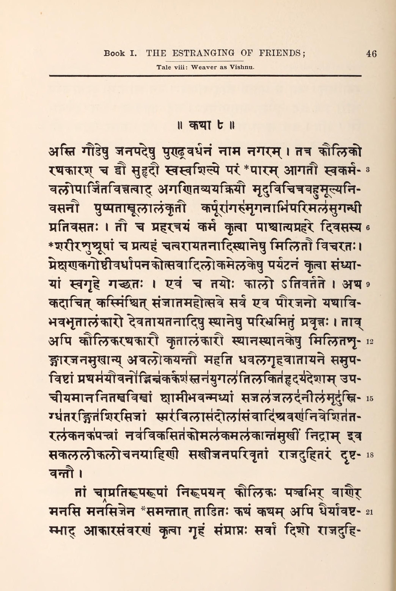
In the Molasses Belt is a city called Sugarcane City. In it lived two friends, a weaver and a carpenter. Since they were past masters in their respective crafts, they had earned enough money by their labors so that they kept no account of receipt and expenditure. They wore soft, gaily colored, expensive garments, adorned themselves with flowers and betel-leaves, and diffused odors of camphor, aloes, and musk. They worked nine hours a day, after which they adorned their persons and met for recreation in such places as public squares or temples. They made the rounds of the spots where society gathered—theaters, conversaziones, birthday parties, banquets, and the like—then went home at twilight. And so the time passed.
One day there was a great festival, an occasion when the entire population, wearing the finest ornaments that each could afford, began sauntering through the temples of the gods and other public places. The weaver and the carpenter, like the rest, put on their best things, and in squares and courtyards inspected the faces of people dressed to kill. And they caught a glimpse of a princess seated at the window of a stucco palace. The vicinity of her heart was made lovely by a firm bosom with the curve of early youth. Below the slender waist was the graceful swell of the hips. Her hair was black as a raincloud, soft, glossy, with a billowy curl. A golden earring danced below an ear that seemed a hammock where Love might swing. Her face had the charm of a new-blown, tender water-lily. Like a dream she took captive the eyes of all, as she sat surrounded by girl friends.
And the weaver, ravished by lavish loveliness, since the
love-god with five fierce arrows pierced his heart, concealed
his feelings by a supreme effort of resolution, and tottered
home, seeing nothing but the princess in the whole horizon.
⛶
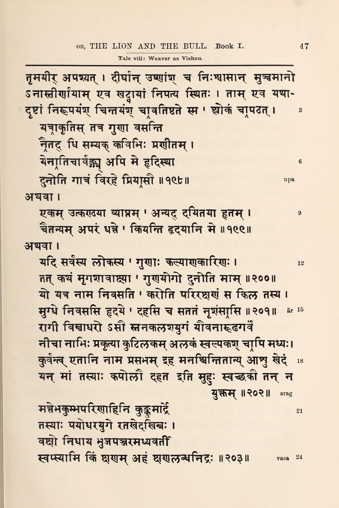 With long-drawn, burning sighs he tumbled on the bed
(though it had not been made up), and there he lay. He
perceived, he thought of nothing but her, just as he had seen
her, and there he lay, reciting poetry:
{kind=link}
Virtues with beauty dwell:
So poets sing,
This contradiction not
Considering:
That she, so cruel-sweet,
Far, far apart,
Tortures my body still,
Still in my heart.
Or does this explain it?
One heart my darling took;
One pines as if to die;
One throbs with feeling pure:
How many hearts have I?
And yet
If all the world from virtue draws
A blessing and a gain,
Why should all virtue in my maid,
My fawn-eyed maiden, pain?
Each guards his home, they say;
Yet in my heart you stay,
Burning your home alway,
Sweet, heartless one!
That these—her bosom's youthful pride,
Her curling hair, her sinuous side,
Her blood-red lip, her waist so small—
Should hurt me, is not strange at all:
But that her cheeks so clear, so bright,
Should torture me, is far from right.
Her bosom, like an elephant's brow,
Swells, saffron-scented. How, ah, how
May I thereon my bosom lay,
When weary love is tired of play,
So, fettered in her arms, to keep
A vigil waking half, half sleep?
⛶
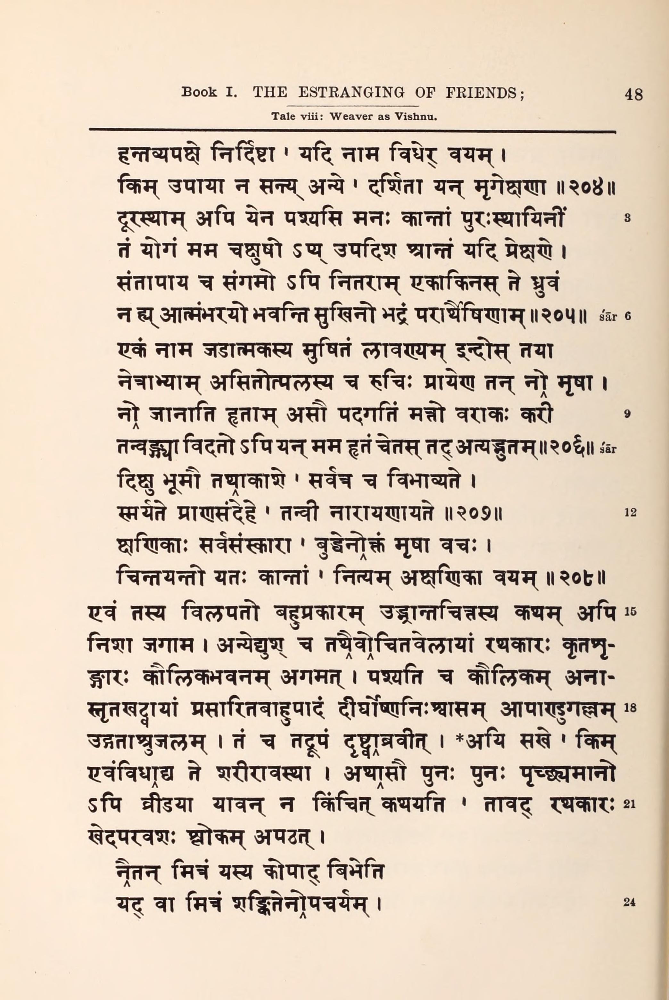If fate has willed
That I should die,
Are there no means
Save that soft eye?
You see my love, though far apart,
Before you ever, O my heart!
Should vision cease to satisfy,
Oh, teach your magic to my eye:
For even her presence will distress,
If bought by too great loneliness,
Since none—the merciful are blest—
Of selfishness may stand confessed.
She stole his luster from the moon—
The moon is dull and cold;
The lily's sheen is in her eyes—
No charge of theft will hold;
The elephant's majesty she seized—
Naught knows he of her art;
From me the slender maiden took,
Ah, strange! a feeling heart.
In middle air I see my love,
On earth below, in heaven above;
In life's last hour, on her I call:
She is, like Vishnu, all-in-all.
All mental states, the Buddha said,
Are transient; he was wrong:
My meditations on my love
Are infinitely long.
{kind=link}
In such lamentation, his thoughts tossing to and fro, the night dragged drearily away. On the next day at the customary hour, the carpenter, wearing an elegant costume, came as usual to the weaver’s house. There he found the weaver with arms and legs sprawled over the unmade bed, heard his long-drawn, burning sighs, and noticed his pallid cheeks and trickling tears. Finding him in this condition, he said: “My friend, my friend, why are you in such a state today?” But the poor weaver, though questioned repeatedly, was too embarrassed to say a word. At last the carpenter grew weary and dropped into poetry:
No friend is he whose anger
Compels a timid languor,
Nor he whom all must anxiously attend;
⛶
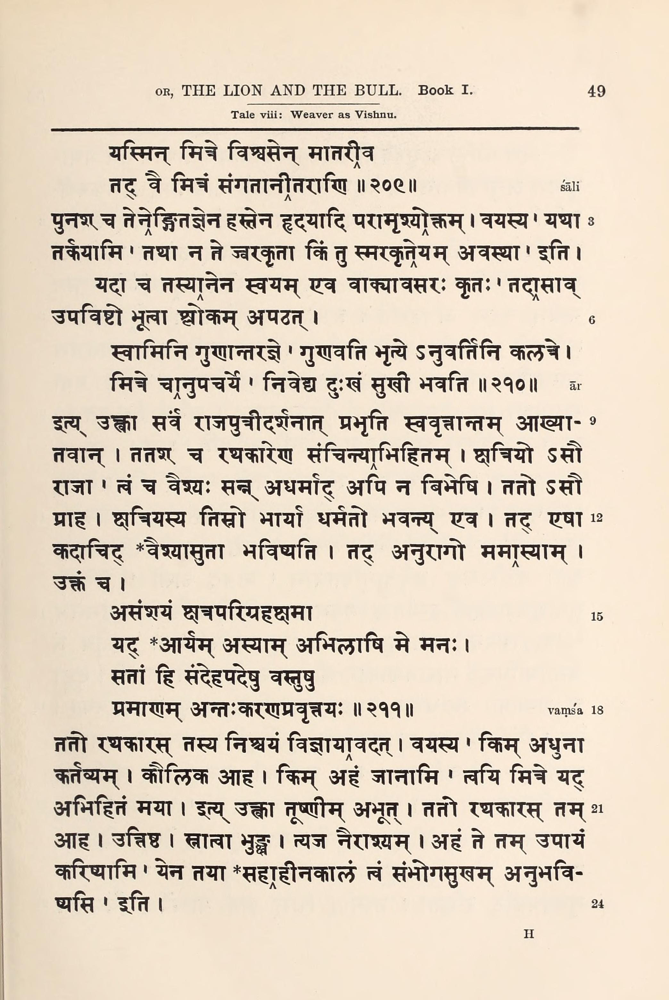But when you trust another
As if he were your mother,
He is no mere acquaintance, but a friend.
{kind=link}
Then, after examining the weaver’s heart and other members with a hand skilled in detecting symptoms, he said: “Comrade, if my diagnosis is correct, your condition is not the result of fever, but of love.”
Now when his friend voluntarily introduced the subject, the weaver sat up in bed and recited a stanza of poetry:
You find repose in sore disaster By telling things to clear-eyed master, To virtuous servant, gentle friend, Or wife who loves you to the end.
Then he related his whole experience from the moment he laid eyes on the princess. And the carpenter, after some reflection, said: “The king belongs to the warrior caste, while you are a business man. Have you no reverence for the holy law?”
But the weaver replied: “The holy law allows a warrior three wives. The girl may be the daughter of a woman of my caste. That may explain my love for her. What says the king in the play?
Surely, she may become a warrior's bride;
Else, why these longings in an honest mind?
The motions of a blameless heart decide
Of right and wrong, when reason leaves us blind.”
Thereupon the carpenter, perceiving his determined purpose, said: “Comrade, what is to be done next?” And the weaver answered: “I don’t know. I told you because you are my friend.” And to this he would not add a word.
At last the carpenter said: “Rise, bathe, eat. Say farewell to despondency. I will invent something such that you will enjoy with her the delights of love without loss of time.”
{kind=link}
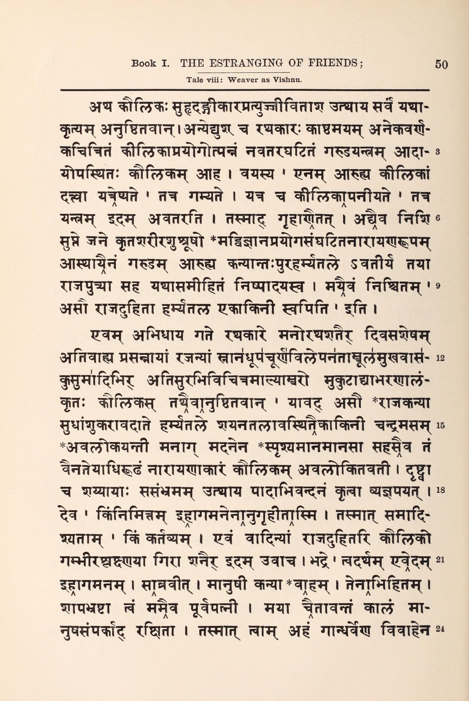
Then the weaver, hope reviving at his friend’s promise, rose and returned to seemly living. And the next day the carpenter came bringing a brand-new mechanical bird, like Garuda, the bird of Vishnu. It was made of wood, was gaily painted in many colors, and had an ingenious arrangement of plugs.
“Comrade,” he said to the weaver, “when you mount the bird and insert a plug, it goes wherever you wish. And the contrivance alights at the spot where you pull out the plug. It is yours. This very night, when people are asleep, adorn your person, disguise yourself as Vishnu—my wit and skill are at your service—mount this Garuda bird, alight on the maidens’ balcony of the palace, and make whatever arrangements you like with the princess. I have ascertained that the princess sleeps alone on the palace balcony.”
When the carpenter had gone, the weaver spent the rest of the day in a hundred fond imaginings. He took a bath, used incense, powders, ointments, betel, scents for the breath, flowers, and so forth. He put on gay garlands and garments, rich in fragrance. He adorned himself with a diadem and other jewelry. And when the night came clear, he followed the carpenter’s instructions.
Meanwhile, the princess lay in her bed alone on the palace balcony bathed in moonbeams. She gazed at the moon, her mind idly dallying with the thought of love. All at once she spied the weaver, disguised as Vishnu and mounted on his heavenly bird. At sight of him she started from her bed, adored his feet, and humbly said: “O Lord, to what end am I honored by this visit? Pray command me. What am I to do?”
To the princess’ words the weaver, in dignified and
sweetly modulated accents, made stately answer: “Yourself,
dear maiden, are the occasion of this visit to earth.” “But I
am merely a mortal girl,” said she. And he continued: “Nay,
you have been my bride, now fallen to earth by reason of a
curse. It is I who have so long protected you from contact
with a man. I will now wed you by the ceremony used in
heaven.” And she assented, for she thought: “It is a thing
⛶
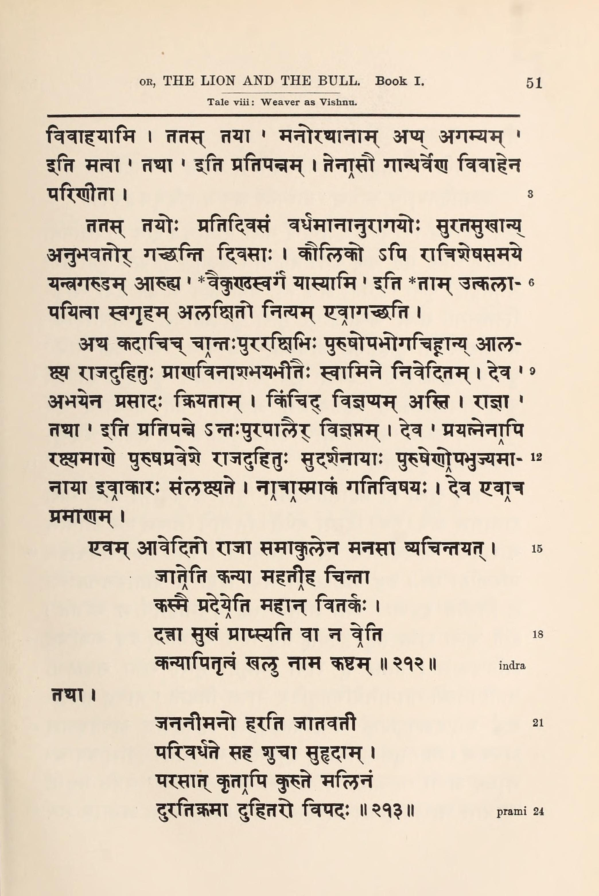 beyond my fondest aspirations.” And he married her by
the ceremony used in heaven.
{kind=link}
So day followed day in the enjoyment of love’s delights, each day witnessing a growth in passion. Before dawn the weaver would mount his mechanical Garuda, would bid her farewell with the words: “I depart for Vishnu’s heaven,” and would always reach his house undetected.
One day the guards at the women’s quarters observed indications that the princess was meeting a man, and in fear of their very lives made a report to their master. “O King,” they said, “be gracious and confirm our personal security. There is a disclosure to be made.” And when the king assented, the guards reported: “O King, we have used anxious care to forbid the entrance of men. Yet indications are observed that Princess Lovely has meetings with a man. Not unto us does it fall to take measures. The king, the king alone is prime mover.”
Upon this information the king pondered with troubled spirit:
You are worried when you hear that she is born; Picking husbands makes you anxious and forlorn; When she marries, will her husband be a churl? It is tough to be the father of a girl.
Again:
At her birth she steals away her mother's heart; Loving friends, when she is older, fall apart; Even married, she is apt to bring a stain: Having daughters is a business full of pain.⛶
{kind=link}
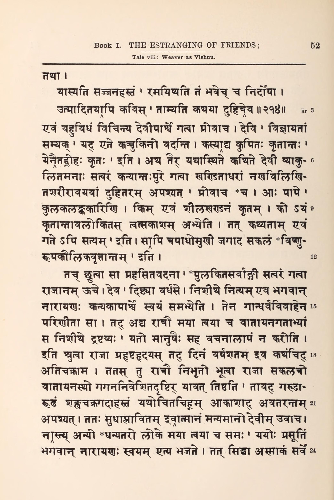
Again:
When a poem or daughter comes out,
The author is troubled with doubt,
With a doubt that his questions betray;
Will she reach the right hands?
Will she please as she stands?
And what will the critics say?
Having thus considered the matter from every point of view, he sought the queen and said: “My dear queen, pray give careful attention to what these chamberlains have to say. Who is this offender whom the death-god seeks today?”
Now when they had related the facts, the queen hastened in great perturbation to the maiden’s apartments and found her daughter with lips sore from kissing and with telltale traces on her limbs. And she cried: “You wicked girl! You are a disgrace to the family! How could you throw your character away? Who is the man that comes to you? The death-god has looked upon him. Dreadful as things are, at least tell the truth.” Then the princess, with shamefaced, drooping glances, recounted the whole story of the weaver disguised as Vishnu.
Thereupon the queen, with laughing countenance and thrilling in every limb, hastened to the king and said: “O King, you are indeed fortunate. It is blessed Vishnu who comes each night in person to our daughter’s side. He has married her by the ceremony used in heaven. This very night you and I are to hide in the window niche and have sight of him. But with mortals he does not exchange words.”
On hearing this, the king was glad at heart, and somehow
lived through the day, which seemed a hundred years. When
night came, the king and queen stood hidden in the window
niche and waited, their gaze fixed on the sky. Presently the
king descried one descending from heaven, mounted on Garuda,
grasping the conch-shell, discus, mace, marked with the
familiar symbols. And feeling as if drenched by a shower of
nectar, he said to the queen: “There is none other on earth
so blest as you and I, whose child blessed Vishnu seeks with
love. All the desires nearest our hearts are granted. Now,
⛶
through the power of our son-in-law, I shall reduce the
whole world to subjection.”
{kind=link}
At this juncture envoys arrived to collect the yearly tribute for King Valor, monarch of the south, lord of nine million, nine hundred thousand villages. But the king, proud of his new relationship with Vishnu, did not show them the customary honor, so that they grew indignant and said: “Come, King! Pay-day is past. Why have you failed to offer the taxes due? It must be that you have recently come into possession of some unanticipated, supernatural power from some source or other, that you irritate King Valor, who is a flame, a whirlwind, a venomous serpent, a death-god.” Upon this the king showed them his bare bottom. And they returned to their own country, exaggerated the matter a hundred thousand fold, and stirred the wrath of their master.
Then the southern monarch, with his troops and retainers, at the head of an army with all four service branches, marched against the king. And he angrily cried:
This king may climb the heavenly mount,
May plunge beneath the sea;
And yet—I promise it—the wretch
Shall soon be slain by me.
So Valor reached the country by marches never interrupted, and ravaged it. And the inhabitants who survived the slaughter besieged the palace gate of the king of Sugarcane City, and taunted him. But what he heard did not cause the king the slightest anxiety.
On the following day the forces of King Valor arrived and
invested Sugarcane City, whereupon hosts of counselors and
chaplains interceded with the king: “O King,” they said, “a
powerful enemy has arrived and invested the city. How can the
king show himself so unconcerned?” And the king replied: “You
gentlemen may be quite comfortable. I have devised a means of
killing this foe. What I am about to do to his army, you,
⛶
too, will learn tomorrow morning.” After this address,
he bade them provide adequate defense for the walls and
gates.
{kind=link}
Then he summoned Lovely and with respectful coaxing said: “Dear child, relying on your husband’s power, we have begun hostilities with the enemy. This very night pray speak to blessed Vishnu when he comes, so that in the morning he may kill this enemy of ours.”
So Lovely delivered to him at night her father’s message, complete in every particular. On hearing it, the weaver laughed and said: “Dear love, how little a business is this, a mere war with men! Why, in days gone by I have with the greatest ease slain mighty demons by the thousand, and they were armed with magic; there was Hiranyakashipu, and Kansa, and Madhu, and Kaitabha, to name but a few. Go, then, and say to the king: ‘Dismiss anxiety. In the morning Vishnu will slay the host of your enemies with his discus.’”
So she went to the king and proudly told him all. Whereat he was overjoyed and commanded the doorkeeper to have proclamation made with beat of drum throughout the city, in these words: “Whatever any shall lay hands on during tomorrow’s battle in the camp of Valor slain, whether coined money or grain or gold or elephant or horse or weapon or other object, that shall remain his personal possession.” This proclamation delighted the citizens, so that they gossiped together, saying: “This king of ours is a lofty soul, unalarmed even in the presence of the hostile host. He is certain to kill his rival in the morning.”
Meanwhile the weaver, forgetting love’s allurements, took
counsel with his brooding mind: “What am I to do now? Suppose
I mount the machine and fly away, then I shall never meet my
pearl, my wife, again. King Valor will drag her from the
palace after killing my poor father-in-law. Yet if I accept
battle, I shall meet death, who puts an end to every heart’s
⛶
desire. But death is mine if I lose her. Why spin it
out? Death, sure death, in either case. It is better, then,
to die game. Besides, it is just possible that the enemy, if
they see me accepting battle and mounted on Garuda, will
think me the genuine Vishnu and will flee. For the proverb
says:
{kind=link}
Let resolution guide the great, However desperate his state, However grim his hostile fate: By resolution lifted high, With shrewd decision as ally, He grimly sees grim trouble fly.”
When the weaver had thus resolved on battle, the genuine Garuda made respectful representations to the genuine Vishnu in heaven. “O Lord,” he said, “in a city on earth called Sugarcane is a weaver who, disguising himself as my Lord, has wedded a princess. As a result, a more powerful monarch of the south has marched to extirpate the king of Sugarcane City. Now the weaver today takes his resolution to befriend his father-in-law. This, then, is what I must refer to your decision. If he meets death in battle, then scandal will arise in the mortal world to the effect that blessed Vishnu has been killed by the king of the south. Thereafter sacrificial offerings will fail, and other religious ceremonies. Then atheists will destroy the temples of the Lord, while pilgrims of the triple staff, devotees of blessed Vishnu, will abstain from pious journeyings. Such being the condition of affairs, decision rests with my Lord.”
Then blessèd Vishnu, after exhaustive meditation, spoke to Garuda: “O King of the winged, your reasoning is just. This weaver has a spark of divinity in him. Therefore he must be the slayer of yonder king. And to bring this about, you and I must befriend him. My spirit shall enter his body, you are to inspire his bird, and my discus, his discus.” “So be it,” said Garuda, assenting.
{kind=link}
Hereupon the weaver, inspired by Vishnu, gave instructions to Lovely: “Dear love, when I set out for battle, let all things be made ready that bring a benediction.” He then performed auspicious ceremonies, assumed ornaments seemly for battle, and permitted worshipful offerings of yellow pigment, black mustard, flowers, and the like. But when the friend of day-blooming water-lilies, the blessed, thousand-beamed sun arose, adorning the bridal brow of the eastern sky, then to the victorious roll of the war-drums, the king issued from the city and drew near the field of battle, then both armies formed in exact array, then the infantry came to blows. At this moment the weaver, mounted on Garuda, and scattering largess of gold and precious gems, flew from the palace roof toward heaven’s vault, while the townspeople, thrilling with wonder, gazed and adored, then beyond the city he hovered above his army, and drew from Vishnu’s conch a proud, grand burst of martial sound.
At the blare of the conch, elephants, horses, chariots, foot-soldiers, were dismayed and many garments were fouled. Some with shrill screams fled afar. Some rolled on the ground, all purposive movement paralyzed. Some stood stock still, with terrified gaze fixed unwavering on heaven.
At this point all the gods were drawn to the spot by curiosity to see the fight, and Indra said to Brahma: “Brahma, is this some imp or demon who must needs be slain? For blessèd Vishnu, mounted on Garuda, has gone forth to battle in person.” At these words Brahma pondered:
“Lord Vishnu's discus drinks in flood
The hostile demons' gushing blood,
And strikes no mortal flat:
The jungle lion who can draw
The tusker's life with awful paw,
Disdains to crush a gnat.
⛶{kind=link}
What means this marvel?” Thus Brahma himself was astonished. That is why I told you:
Not even Brahma sees the end
Of well-devised deceit:
The weaver, taking Vishnu's form,
Embraced the princess sweet.
While the very gods were thus pondering with tense interest, the weaver hurled his discus at Valor. This discus, after cutting the king in twain, returned to his hand. At the sight, all the kings without exception leaped from their vehicles, and with hands, feet, and head drooping in limp obeisance, they implored him who bore the form of Vishnu: “O Lord,
An army, leaderless, is slain.
Be mindful of this and spare our lives. Command us. What are we to do?”
So spoke the whole throng of kings, until he made answer who bore the form of Vishnu: “Your persons are secure henceforth. Whatever commands you receive from the local king, King Stout-Mail, you must on all occasions unhesitatingly perform.” And all the kings humbly received his instructions, saying: “Let it be as our Lord commands.”
Thereupon the weaver bestowed on Stout-Mail all his rival’s wealth, whether men or elephants or chariots or horses or stores of merchandise or other riches, while he himself, having attained the special majesty of those victorious, enjoyed all known delights with the princess.
“And that is why I say:
The gods befriend a man who climbs
Determination's height, ....
and the rest of it.”
Having listened to this, Cheek said: “If you, too, are thus climbing determination’s height, then proceed to the accomplishment of your desire. Blest be your journeyings.”
Thereupon Victor sought the presence of the lion, who said, when Victor had bowed and seated himself: “Why has so long a time passed since you were last visible?” And Victor answered: “O King, urgent business awaits my master today. Hence I am come, the bearer of tidings unwelcome but wholesome. This is not, indeed, the desire of dependents, who yet bring such tidings when they fear the neglect of immediate and necessary action. As the proverb says:
⛶
When those appointed to advise
Speak wholesome truth, they cause surprise
By this remarkable excess
Of passionate devotedness.
{kind=link}
And again:
A man is quickly found, O King, To say the sycophantic thing; But one prepared to hear or speak Unwelcome truth, is far to seek.”
Hereupon Rusty, believing his words worthy of trust, respectfully asked him: “What do you wish to imply?” And Victor answered: “O King, Lively has crept into your confidence with treasonable purpose. On several occasions he has confidentially whispered in my hearing: ‘I have examined the strong points and the weak in your master’s power—in his prestige, his advisers, and his material resources. I plan to kill him and to seize the royal power myself without difficulty.’ This very day this Lively person intends to carry out his design. That is why I am here to warn the master whose service is mine by inheritance.”
To Rusty this report was more terrible than the fall of a thunderbolt. He sank into a panic-stricken stupor and said not a word. Then Victor, comprehending his state of mind, continued: “This is the great sadness in the discharge of a counselor’s duty. There is wisdom in the saying:
When a counselor or king
Rises higher than he should,
Fortune strives in vain to make
Still her double footing good;
Being woman, feels the strain;
Soon abandons one of twain.
For, indeed,
With broken sliver, loosened tooth, Or counselor who fails in truth, Pull roots and all; so only, grief Will find its permanent relief.
And again:
No king should ever delegate To one sole man the powers of state: For folly seizes him, then pride, Whereat he grows dissatisfied With service; thus impatient grown, He longs to rule the realm alone; And such impatient longings bring Him into plots to kill his king.
Even now, this Lively manages all business as he will, without restraint of any kind. Hence the well-known saying finds application:
A counselor who tramples through His business, though his heart be true, May not unheeded go his way, Since future days the present pay.
But such is the nature of kings. As the poet sings:
Some gentle actions born of love To thoughts of active hatred move; Some deeds of traitorous offense Win guerdon of benevolence; The kingly mind can no man tame, As never being twice the same: Such service makes the spirit faint, A hard conundrum for a saint.”
On hearing this, Rusty said: “After all, he is my servant. Why should he experience a change of heart toward me?” But Victor answered: “Servant or not, there is nothing conclusive in that. For the proverb says:
⛶
 The man who loves not royalty,
Just serving while he can
Find nothing better worth his pains,
Is not a loyal man.”
The man who loves not royalty,
Just serving while he can
Find nothing better worth his pains,
Is not a loyal man.”
“My dear fellow,” said the lion, “even so, I cannot find it in my heart to turn against him. For
However false and fickle grown,
Once dear is always dear:
Who does not love his body, though
Decrepit, blemished, queer?
And again:
His actions may be hard to bear,
His speech be harsh to hear;
The heart still clings delighted to
A person truly dear.”
“For that very reason,” retorted Victor, “there is a serious flaw in the business of getting on in the world. Observe how this person, upon whom the master has concentrated his consideration to the exclusion of the whole company of animals, now desires to become himself the master. As the verse puts it:
The man of birth or man unknown, If kingly eyes on him alone Are fixed, aspires to seize the throne.
Therefore, dear though he be, he should be abandoned, being a traitor, like one who has never been dear. There is much wisdom in the saying:
Pursue your aim, abandoning
The fools inclined to sin,
The comrades, brothers, friends, or sons,
Or honorable kin:
You know the song the women sing,
We hear it far and near—
What good are golden earrings, if
They lacerate your ear?
“And if you fancy that he will bring benefit because he is bulky of body, you make a perverse mistake. For
How use a proud bull-elephant
That will not serve the king?
A man is better, fat or lean,
Who does the helpful thing.
“Again, any pity that our lord and king might feel toward him, is quite out of place. For
Whoever leaves the righteous path
For some unrighteous course,
Will meet calamity in time
And suffer much remorse.
Whoever will not take from friends
Most excellent advice,
Will gladden foes, and falling soon,
Will pay his folly's price.
And again:
On wicked trick intently bent,
The wilful still lack ear to hear
(So blind their mind) of nice and vice
The cause in saws appearing clear.
Furthermore:
Where one will speak and one will heed
What in the end is well,
Although unpleasant at the time,
There riches love to dwell.
And again:
No king's retainer should devise
A fraud, for spies are kingly eyes:
Then bear with harsh as kind, O King;
The truth is seldom flattering.
⛶
Tried servants never should be left,
And strangers taken;
A kingdom's health by no disease
Is sooner shaken.”
{kind=link}
“My good fellow,” said the lion, “pray do not say such things. For
Never publicly defame Any once commended name: Broken promises are shame.
“Now I formerly gave him a safe-conduct, since he appeared as a suppliant. How then can he prove ungrateful?” But Victor rejoined:
“No rogue asks reason for his wrath; Nor saint, to tread in kindness' path: By nature's power, the sweet or sour In sugar dwells or nim-tree's flower.
And again:
Caress a rascal as you will, He was and is a rascal still: All salve- and sweating-treatments fail To take the kink from doggy's tail.
And once again:
Slight kindness shown to lofty souls A strange enlargement seeks: The moonbeams gleam with whiter light On Himalaya's peaks.
While, on the other hand:
The kindness shown to vicious souls
Strange diminution seeks:
The gleam of moonbeams is absorbed
On Sooty Mountain's peaks.
A hundred benefits are lost,
If lavished on the mean;
A hundred epigrams, with their
True relevance unseen;
A hundred counsels, when a life
Obeys no rigid rule;
A hundred cogent arguments
Are lost upon a fool.
Lost is every gift that goes
Where it does not fit;
Lost is service lavished on
Sluggish mind and wit;
Lost upon ingratitude
Is the kindest plan;
Lost is courtesy on one
Not a gentleman,
Or put it this way:
Perfume offered to a corpse,
Lotus-planting dry,
Weeping in the wood, prolonged
Rain on alkali,
Taking kinks from doggy's tail,
Drawl in deafened ear,
Decking faces of the blind,
Sense for fools to hear.
Or this way:
Milk a bull, and think him some
Heavy-uddered cow;
Blind to lovely maidens, clasp
Eunuchs anyhow;
Seek in shining scraps of quartz
Lapis lazuli:
Do not serve an addlepate,
Bidding sense goodbye.
“Ergo, the master must by no means fail to heed my sound advice. And one thing more:
What tiger, monkey, snake advised,
I did not do; and so
That dreadfully ungrateful man
Has brought me very low.”
“How was that?” asked Rusty. And Victor told the story of
The Ungrateful Man
{kind=link}
In a certain town lived a Brahman whose name was Sacrifice. Every day his wife, chafing under their poverty, would say to him: “Come, Brahman! Lazybones! Stony-Heart! Don’t you see your babies starving, while you hang about, mooning? Go somewhere, no matter where, find some way, any way, to get food, and come back in a hurry.”
At last the Brahman, weary of this refrain, undertook a long journey, and in a few days entered a great forest. While wandering hungry in this forest, he began to hunt for water. And in a certain spot he came upon a well, overgrown with grass. When he looked in, he discovered a tiger, a monkey, a snake, and a man at the bottom. They also saw him.
Then the tiger thought: “Here comes a man,” and he cried: “O noble soul, there is great virtue in saving life. Think of that, and pull me out, so that I may live in the company of beloved friends, wife, sons, and relatives.”
“Why,” said the Brahman, “the very sound of your name brings a shiver to every living thing. I cannot deny that I fear you.” But the tiger resumed:
“To Brahman-slayer, impotent, To drunkard, him on treason bent, To sinner through prevarication, The holy grant an expiation: While for ingratitude alone No expiation will atone.”
And he continued: “I bind myself by a triple oath that no danger threatens you from me. Have pity and pull me out.” Then the Brahman thought it through to this conclusion: “If disaster befalls in the saving of life, it is a disaster that spells salvation.” So he pulled the tiger out.

Next the monkey said: “Holy sir, pull me out too.” And the Brahman pulled him out too. Then the snake said: “Brahman, pull me out too.” But the Brahman answered: “One shudders at the mere sound of your name, how much more at touching you!” “But,” said the snake, “we are not free agents. We bite only under orders. I bind myself by a triple oath that you need have no fear of me.” After listening to this, the Brahman pulled him out too. Then the animals said: “The man down there is a shrine of every sin. Beware. Do not pull him out. Do not trust him.”
Furthermore, the tiger said: “Do you see this mountain with many peaks? My cave is in a wooded ravine on the north slope. You must do me the favor of paying me a visit there some day, so that I may make return for your kindness. I should not like to drag the debt into the next life.” With these words he started for his cave.
Then the monkey said: “My home is quite near the cave, beside the waterfall. Please pay me a visit there.” With this he departed.
Then the snake said: “In any emergency, remember me.” And he went his way.
Then the man in the well shouted time and again: “Brahman! Pull me out too!” At last the Brahman’s pity was awakened, and he pulled him out, thinking: “He is a man, like me.” And the man said: “I am a goldsmith, and live in Baroch. If you have any gold to be worked into shape, you must bring it to me.” With this he started for home.
Then the Brahman continued his wanderings but found
⛶
nothing whatever. As he started for home, he recalled
the monkey’s invitation. So he paid a visit, found the monkey
at home, and received fruits sweet as nectar, which put new
life into him. Furthermore, the monkey said: “If you ever
have use for fruit, pray come here at any time.” “You have
done a friend’s full duty,” said the Brahman. “But please
introduce me to the tiger.” So the monkey led the way and
introduced him to the tiger.
{kind=link}
Now the tiger recognized him and, by way of returning his kindness, bestowed on him a necklace and other ornaments of wrought gold, saying: “A certain prince whose horse ran away with him came here alone, and when he was within range of a spring, I killed him. All this I took from his person and stored carefully for you. Pray accept it and go where you will.”
So the Brahman took it, then recalled the goldsmith and visited him, thinking: “He will do me the favor of getting it sold.” Now the goldsmith welcomed him with respectful hospitality, offering water for the feet, an honorable gift, a seat, hard food and soft, drink, and other things, then said: “Command me, sir. What may I do for you?” And the Brahman said: “I have brought you gold. Please sell it.” “Show me the gold,” said the goldsmith, and the other did so.
Now the goldsmith thought when he saw it: “I worked this gold for the prince.” And having made sure of the fact, he said: “Please stay right here, while I show it to somebody.” With this he went to court and showed it to the king. On seeing it, the king asked: “Where did you get this?” And the goldsmith replied: “In my house is a Brahman. He brought it.”
Thereupon the king reflected: “Without question, that villain killed my son. I will show him what that costs.” And he issued orders to the police: “Have this Brahman scum fettered, and impale him tomorrow morning.”

When the Brahman was fettered, he remembered the snake, who appeared at once and said: “What can I do to serve you?” “Free me from these fetters,” said the Brahman. And the snake replied: “I will bite the king’s dear queen. Then, in spite of the charms employed by any great conjurer and the antidotes of other physicians, I will keep her poisoned. Only by the touch of your hand will the poison be neutralized. Then you will go free.”
Having made this promise, the snake bit the queen, whereupon shouts of despair arose in the palace, and the entire city was filled with dismay. Then they summoned dealers in antidotes, conjurers, scientists, druggists, and foreigners, all of whom treated the case with such resources as they had, but none could neutralize the poison. Finally, a proclamation was made with beat of drum, upon hearing which the Brahman said: “I will cure her.” The moment he spoke, they freed him from his fetters, took him to the king, and introduced him. And the king said: “Cure her, sir.” So he went to the queen and cured her by the mere touch of his hand.
When the king saw her restored to life, he paid the Brahman honor and reverence, then respectfully asked him: “Reveal the truth, sir. How did you come by this gold?” And the Brahman began at the beginning and related the whole adventure accurately. As soon as the king comprehended the facts, he arrested the goldsmith, while he gave the Brahman a thousand villages and appointed him privy counselor. But the Brahman summoned his family, was surrounded by friends and relatives, took delight in eating and other natural functions, acquired massive merit by the performance of numerous sacrifices, concentrated authority by heedful attention to all phases of royal duty, and lived happily.
{kind=link}
“And that is why I say:
What tiger, monkey, snake advised, ....
and the rest of it.” And Victor continued:
“Friend or kinsman, teacher, king, Must be kept from trespassing: If they cling to evil still, They will bend you to their will.
“O King, he is obviously a traitor. However,
Tirelessly benevolent, Save a friend on evil bent: This is sainthood's perfect song; Every substitute is wrong.
Again:
Who saves from vice is truly kind; True wife is she who shares your mind; True acts are free from every blame; True joy, from avarice's shame; True wisdom wins the praise of saints; True friends involve in no restraints; True glory knows no haughtiness; True men are cheerful in distress.
And again:
Rest your sleeping head in fire; Pillow it with snakes: Do not smile at worthy friends Who pursue mistakes.
“Now my lord and king associates with Lively, making a vicious mistake that results in the neglect of the three things worth living for—virtue, money, and love. And in spite of my protestations, urged from various points of view, my lord and king goes his wilful way, unheeding. In the future, therefore, when the crash comes, do not blame your servant. You have heard the saying:
No thought of profit or of right
Can headstrong monarchs stay,
Who, like bull-elephants amuck,
Pursue their reckless way;
When, puffed with pride, they come to grief
In thickets of distress,
They blame their servants, and forget
Their proper naughtiness.”
“Such being the case, my good fellow,” said the lion, “should I warn him?” “What! Warn him?” said Victor. “ What kind of policy would that be? For
He stings or strikes in hasty fear
When warning has been heard:
'Tis wise to warn an enemy
By action, not by word.”
“After all,” said Rusty, “he is a grass-nibbler. I am a carnivore. How can he hurt me?” “Precisely,” said Victor. “He is a grass-nibbler. My lord and king is a carnivore. He is food. My lord and king devours food. In spite of all, if the fellow is not likely to work harm through his own power, he will egg on another to it. As the saying goes:
The weak, malicious fool Can use a keener tool: It sharpens sword-blades, but The whetstone cannot cut.”
{kind=link}
“How can that be?” said the lion. And Victor answered: “Why, you have constantly engaged in battle with unnumbered bull-elephants, wild oxen, buffaloes, boars, tigers, and leopards, until your body is spotted with scars left by the thrust of claw and tusk. Now this Lively, living beside you, is always scattering his excrement far and wide. In it worms will breed. These worms, finding your body conveniently near, will creep into ready-made crevices, and will bore deep. And so you are as good as dead. As the proverb says:
With no stranger share your house; Leap, the flea, killed Creep, the louse.”
“How was that?” asked Rusty. And Victor told the story of
Leap and Creep
In the palace of a certain king stood an incomparable bed, blessed with every cubiculary virtue. In a corner of its coverlet lived a female louse named Creep. Surrounded by a thriving family of sons and daughters, with the sons and daughters of sons and daughters, and with more remote descendants, she drank the king’s blood as he slept. On this diet she grew plump and handsome.
While she was living there in this manner, a flea named Leap drifted in on the wind and dropped on the bed. This flea felt supreme satisfaction on examining the bed—the wonderful delicacy of its coverlet, its double pillow, its exceptional softness like that of a broad, Gangetic sand-bank, its delicious perfume. Charmed by the sheer delight of touching it, he hopped this way and that until—fate willed it so—he chanced to meet Creep, who said to him: “Where do you come from? This is a dwelling fit for a king. Begone, and lose no time about it.” “Madam,” said he, “you should not say such things. For
The Brahman reverences fire, Himself the lower castes' desire; The wife reveres her husband dear; But all the world must guests revere.
Now I am your guest. I have of late sampled the various
blood of Brahmans, warriors, business men, and serfs, but
found it acid, slimy, quite unwholesome. On the contrary, he
who reposes on this bed must have a delightful vital fluid,
⛶
just like nectar. It must be free from morbidity, since
wind, bile, and phlegm are kept in harmony by constant and
heedful use of potions prepared by physicians. It must be
enriched by viands unctuous, tender, melting in the mouth;
viands prepared from the flesh of the choicest creatures of
land, water, and air, seasoned furthermore with sugar,
pomegranate, ginger, and pepper. To me it seems an elixir of
life. Therefore, with your kind permission, I plan to taste
this sweet and fragrant substance, thus combining pleasure
and profit.”
{kind=link}
“No,” said she. “For fiery-mouthed stingers like you, it is out of the question. Leave this bed. You know the proverb:
The fool who does not know His own resource, his foe, His duty, time, and place, Who sets a reckless pace, Will by the wayside fall, Will reap no fruit at all.”
Thereupon he fell at her feet, repeating his request. And she agreed, since courtesy was her hobby, and since, when the story of that prince of sharpers, Muladeva, was being repeated to the king while she lay on a corner of the coverlet, she had heard how Muladeva quoted this verse in answer to the question of a certain damsel:
Whoever, angry though he be, Has spurned a suppliant enemy, In Shiva, Vishnu, Brahma, he Has scorned the Holy Trinity.
Recalling this, she agreed, but added: “However, you must not come to dinner at a wrong place or time.” “What is the right place and what is the right time?” he asked. “Being a newcomer, I am not au courant.” And she replied: “When the king’s body is mastered by wine, fatigue, or sleep, then you may quietly bite him on the feet. This is the right place and the right time.” To these conditions he gave his assent.
In spite of this arrangement, the famished bungler, when
the king had just dozed off in the early evening, bit him on
the back. And the poor king, as if burned by a firebrand, as
⛶
if stung by a scorpion, as if touched by a torch,
bounded to his feet, scratched his back, and cried to a
servant: “Rascal! Somebody bit me. You must hunt through this
bed until you find the insect.”
{kind=link}
Now Leap heard the king’s command and in terrified haste crept into a crevice in the bed. Then the king’s servants entered, and following their master’s orders, brought a lamp and made a minute inspection. As fate would have it, they came upon Creep as she crouched in the nap of the fabric, and killed her with her family.
“And that is why I say:
With no stranger share your house, ....
and the rest of it. And another thing. My lord and king does wrong in neglecting the servants who are his by inheritance. For
Whoever leaves his friends,
Strange folk to cherish,
Like foolish Fierce-Howl, will
Untimely perish.”
“How was that?” asked Rusty. And Victor told the story of
The Blue Jackal
There was once a jackal named Fierce-Howl, who lived in a cave near the suburbs of a city. One day he was hunting for food, his throat pinched with hunger, and wandered into the city after nightfall. There the city dogs snapped at his limbs with their sharp-pointed teeth, and terrified his heart with their dreadful barking, so that he stumbled this way and that in his efforts to escape and happened into the house of a dyer. There he tumbled into a tremendous indigo vat, and all the dogs went home.
Presently the jackal—further life being
predestined—managed to crawl out of the indigo vat and
escaped into the forest. There all the thronging animals in
his vicinity caught a glimpse of his body dyed with the juice
of indigo, and crying out: “What is this creature enriched
with that unprecedented color?” they fled, their eyes dancing
with terror, and spread the report: “Oh, oh! Here is an
⛶
exotic creature that has dropped from somewhere. Nobody
knows what his conduct might be, or his energy. We are going
to vamoose. For the proverb says:
{kind=link}
Where you do not know
Conduct, stock, and pluck,
'Tis not wise to trust,
If you wish for luck.”
Now Fierce-Howl perceived their dismay, and called to them: “Come, come, you wild things! Why do you flee in terror at sight of me? For Indra, realizing that the forest creatures have no monarch, anointed me—my name is Fierce-Howl—as your king. Rest in safety within the cage formed by my resistless paws.”
On hearing this, the lions, tigers, leopards, monkeys, rabbits, gazelles, jackals, and other species of wild life bowed humbly, saying: “Master, prescribe to us our duties.” Thereupon he appointed the lion prime minister and the tiger lord of the bedchamber, while the leopard was made custodian of the king’s betel, the elephant doorkeeper, and the monkey the bearer of the royal parasol. But to all the jackals, his own kindred, he administered a cuffing, and drove them away. Thus he enjoyed the kingly glory, while lions and others killed food-animals and laid them before him. These he divided and distributed to all after the manner of kings.
While time passed in this fashion, he was sitting one day in his court when he heard the sound made by a pack of jackals howling near by. At this his body thrilled, his eyes filled with tears of joy, he leaped to his feet, and began to howl in a piercing tone. When the lions and others heard this, they perceived that he was a jackal, and stood for a moment shamefaced and downcast, then they said: “Look! We have been deceived by this jackal. Let the fellow be killed.” And when he heard this, he endeavored to flee, but was torn to bits by a tiger and died.
{kind=link}
“And that is why I say:
Whoever leaves his friends, ....
and the rest of it.”
Then Rusty asked: “How am I to recognize that he is treacherous? And what is his fighting technique?” And Victor answered: “Formerly he would come into the presence of my lord and king with limbs relaxed. If today he approaches timidly, in obvious readiness to thrust with his horns, then the king may understand that he has treachery in mind.”
Hereupon Victor rose and visited Lively. To him, also, he showed himself sluggish, like one penetrated by discouragement. Therefore Lively said: “My good fellow, are you in spirits?” To which he replied: “How can a dependent be in spirits? For you know
They see their wealth in others' power
Who wait upon a king;
They even fear to lose their lives:
A doleful song they sing.
Again:
With birth begin the sorrows which
Forever after cling,
The never ending train of woes
In service of a king.
Five deaths-in-life sage Vyasa notes
With well-known epic swing:
The poor man, sick man, exile, fool,
And servant of a king.
His food repels; he dare not say
An independent thing;
Though sleepless, he is not awake
Who hangs upon a king.
The common phrase ‘a dog's life’ has
A most persuasive ring:
But dogs can do the things they like;
A slave obeys his king.
He must be chaste, sleep hard, grow thin,
And eat a meager dinner:
The servant lives as lives the saint,
Yet is not saint, but sinner.
He cannot do the things he would;
He serves another's mind;
He sells his body. How can such
A wretch contentment find?
According to the lesser distance,
A servant uses more persistence
In watching for his master's whim
And trembling at the sight of him:
And this because a fire, a king,
Are double name for single thing,
A burning thing that men can stand
Afar, but not too close at hand.
What flavor has a tidbit, though
It be as good as good,
Soft, dainty, melting in the mouth,
If bought by servitude?
To sum it all up:
What is my place? My time? My friends? Expenditure or dividends? And what am I? And what my power? So must one ponder hour by hour.”
After listening to this, Lively said, perceiving that
Victor had a hidden purpose in mind: “Tell me, my good
fellow, what you wish to imply.” And Victor answered: “Well,
you are my friend. I cannot help telling you what is to your
profit. Here goes. The master, Rusty, is filled with wrath
against you. And he said today: ‘I will kill Lively and
provide a feast for all who eat meat.’ Of course, I fell into
deep dejection on hearing this. Now you must do what the
⛶
crisis demands.”
{kind=link}
To Lively this report was like the fall of a thunderbolt, and he fell into deep dejection. Yet as Victor’s words were always plausible, he grew more and more troubled, fell into a panic, and said: “Yes, the proverb is right:
Women oft are tricked by scamps;
Kings with rascals oft agree;
Toward the skinflints money drifts;
Rain on mountains falls and sea.
Ah, me! Ah, me! What is this that has befallen me?
You serve your king most heedfully.
Of course. Who could complain?
But enmity as your reward
Is unexpected pain.
And again:
If one is angry, giving cause, Remove it, and the wrath will pause: But how may man propitiate A mind that harbors causeless hate? Who does not fear the scoundrel's art, The causeless hate, the flinty heart? For ever ready venom drips Resistless from his serpent-lips. The stupid king-swan pecks by night At starshine, in the water bright Believing it a lotus white; Then, fearing stars when shines the sun, Avoids the lotus. Everyone Who dreads a trap, will blessings shun.
Alas! What wrong have I done our master Rusty?”
“Comrade,” said Victor, “kings love to injure without reason, and they seek out the vulnerable spot in an adversary.” “True, too true,” said Lively. “There is wisdom in the verse:
The serpent sandal-trees defiles; In lotus-ponds lurk crocodiles; The slanderer makes virtue vain: No blessing lacks attendant pain. No lotus decks the mountain height; From scoundrels issues nothing right; To saints no change of heart is known; Rice never sprouts from barley sown. Nobility's constraints Are felt by gracious saints, Who bear good deeds in mind Forget the other kind.
{kind=link}
“Yet, after all, the fault is mine, because I made advances to a false friend. As the story goes:
Harsh talk, untimely action,
False friends—are worse than vain:
The swan in lilies sleeping,
Was by the arrow slain.”
“How was that?” asked Victor. And Lively told the story of
Passion and the Owl
Within a certain forest was a broad expanse of lake. There lived a king-swan named Passion, who spent his days in a great variety of pastimes. One day death, fatal death, visited him in the person of an owl. And the swan said: “This is a lonely wood. Where do you come from?” The owl replied: “I came because I heard of your virtues. Furthermore,
In search of virtue roaming
The wide world through,
No virtues being greater,
I come to you.
That I must cling in friendship
To you, is sure:
The impure turns, attaining
The Ganges, pure.
And again:
The conch was bone that Vishnu's hand
Has purified:
For contact with the righteous lends
A noble pride.”
After this address, the swan gave his assent, in the words: “My excellent friend, dwell with me as you like by this broad lake in this pleasant wood.” So their time was spent in friendly diversions.
But one day the owl said: “I am going to my own home,
which is called Lotus Grove. If you set any value on me and
⛶
feel any affection, you must not fail to pay a visit as
my guest.” With these words he went home.
{kind=link}
Now as time passed, the swan reflected: “I have grown old, living in this spot, and I do not know a single other region. So now I will go to visit my dear friend, the owl. There I shall find a brand-new recreation ground and new kinds of food, both hard and soft.”
After these reflections, he went to visit the owl. At first he could not find him in Lotus Grove, and when, after a minute search, he discovered him, there was the poor creature crouching in an ugly hole, for he was blind in the daytime. But Passion called: “My dear fellow, come out! I am your dear friend the swan, come to pay you a visit.”
And the owl replied: “I do not stir by day. You and I will meet when the sun has set.” So the swan waited a long time, met the owl at night, and after giving the conventional information about his health, being wearied by his journey, he went to sleep on the spot.
Now it happened that a large commercial caravan had encamped at that very lake. At dawn the leader rose and had the signal of departure given by conch. This the owl answered with a loud, harsh hoot, then dived into a hole in the river-bank. But the swan did not stir. Now the evil omen so disturbed the leader’s spirit that he gave orders to a certain archer who could aim by sound. This archer strung his powerful bow, drew an arrow as far as his ear, and killed the swan, who was resting near the owl’s nest.
“And that is why I say:
Harsh talk, untimely action,....
and the rest of it.”
And Lively continued: “Why, our master Rusty was all honey at first, but at the last his purpose turns to poison. Ah, yes!
He compliments you to your face;
His whispered slanders never stop:
Avoid a friend like that. He is
A poison-jug with cream on top.
{kind=link}
“Yes, I have learned by experience the truth of the well-known verse:
He lifts his hands to see you standing there; His eyes grow moist; he offers half his chair; He hugs you warmly to his eager breast; In kindly talk and question finds no rest; His skill is wondrous in deceptive tricks; Honey without, within the poison sticks: What play is this, what strange dramatic turns, That every villain, like an actor, learns? At first rogues' friendship glitters bright With service, flattery, delight; Thence, in its middle journey, shoot Gay flowers of speech that fail to fruit; Its final goal is treason, shame, Disgust, and slanders that defame: Alas! Who made the cursèd thing? Its one foul purpose is to sting.
And again:
They bow abjectly; leap to greet You with their speech seductive-sweet; Pursue and hug you day by day; Of deep devotion make display: All praise your virtue. Never one Finds time to do what should be done.
“Woe is me! How can I, a creature herbivorous, consort with this lion who devours raw flesh? There is wisdom in the saying:
Where wealth is very much the same, And similar the family fame, Marriage or friendship is secure; But not between the rich and poor.
And there is a proverb:
The sun, already setting, shows
His final flaming power,
And still the honey-thirsty bee
Explores the lotus-flower,
Forgets that it will prove a trap
That shuts at set of sun:
Ambition, thirsting for reward,
Is blind to dangers run.
Abandoning the lotus-bloom
With all its sweet content,
The jasmine's natural perfume
And luxury of scent,
The water-bees seek toilsome food,
On ichor-sipping bent:
So men reject the easy good,
In rogues o'erconfident.
The bees that, too adventurous,
A novel honey seek
In springtime ichor glistening on
The elephant-monarch's cheek,
When, tossed by wind from flapping ears,
They tumble to the ground,
Remember then what gentle sport
In lotus-cups is found.
Yet, after all, virtues involve corresponding defects. For
The fruit-tree's branch by very wealth
Of fruit is bended low;
The peacock's feathered pride compels
A sluggish gait and slow;
The blooded horse that wins his race,
Must like a cow be led:
The good in goodness often find
An enemy to dread.
⛶
Where Jumna's waves roll blue
With sands of sapphire hue,
Black serpents have their lair;
And who would hunt them there,
But that a jewel's bright star
From each hood gleams afar?
By virtue rising, all
By that same virtue fall.
The man of virtue commonly
Is hateful to the king,
While riches to the scamps and fools
Habitually cling:
The ancient chant ‘By virtue great
Is man’ has run to seed;
The world takes rare and little note
Of any plucky deed.
Sad, shamefaced lions fail to rage,
Their spirit mastered by the cage;
And captive elephants' brows and pride
By drivers' goads are scarified;
Charms dull the cobras; hopeless woe
Lays scholars flat and soldiers low:
For Time, the mountebank, enjoys
A juggling bout with chosen toys.
The honey-greedy bee—poor fool!—
Deserts the flowering lotus-pool
Where danger is not found, to sip
The springtime ichor-rills that drip
From elephant foreheads; does not fear
The flapping of that monstrous ear:
So, by his nature, greedy man
Forgets the issue of his plan.
{kind=link}
“Yes, by entering a vulgarian’s sphere of power, I have certainly forfeited my life. As the proverb says:
All who live upon their wits,
Many learnèd, too, are mean,
Do the wrong as quick as right:
Illustration may be seen
In the well-known tale that features
Camel, crow, and other creatures.”
“How was that?” asked Victor. And Lively told the story of
Ugly’s Trust Abused
In a certain city lived a merchant named Ocean, who loaded a hundred camels with valuable cloth and set out in a certain direction. Now one of his camels, whose name was Ugly, was overburdened and fell limp, with every limb relaxed. Then the merchant divided the pack of cloth, loaded it on other camels, and because he found himself in a wild forest region where delay was impossible, he proceeded, leaving Ugly behind.
When the trader was gone, Ugly hobbled about and began to
⛶
crop the grass. Thus in a very few days the poor fellow
regained his strength.
{kind=link}
In that forest lived a lion whose name was Haughty, who had as hangers-on a leopard, a crow, and a jackal. As they roamed the forest, they encountered the abandoned camel, and the lion said, after observing his fantastic and comical shape: “This is an exotic in our forest. Ask him what he is.” So the crow informed himself of the facts and said: “This is what goes by the name of camel in the world.” Thereupon the lion asked him: “My good friend, where did you come from?” And the camel gave precise details of his separation from the trader, so that the lion experienced compassion and guaranteed his personal security.
In this posture of affairs, the lion fought an elephant one day, received a thrust from a tusk, and had to keep his cave. And when five or six days had passed, they all found themselves in urgent distress from the failure of food. So the lion, observing how they drooped, said to them: “I am crippled by this wound and cannot supply you with the usual food. You will just have to make an effort on your own account.”
And they replied: “Why should we care to thrive, while our lord and king is in this state?” “Bravo!” said the lion. “You show the conduct and devotion of good servants. Round up some food-animal for me while I am in this condition.” Then, when they made no answer, he said to them: “Come! Do not be bashful. Hunt up some creature. Even in my present condition I will convert it into food for you and myself.”
So the four started to roam the woods. Since they found no food-animal, the crow and the jackal conferred together, and the jackal said: “Friend crow, why roam about? Here is Ugly, who trusts our king. Let us provide for our sustenance by killing him.”
{kind=link}
“A very good suggestion,” said the crow. “But after all, the master guaranteed his personal security, and so cannot kill him.”
“Quite so,” said the jackal. “I will interview the master and make him think of killing Ugly. Stay right here until I go home and return with the master’s answer.” With this he hastened to the master.
When he found the lion, he said: “Master, we have roamed the entire forest, and are now too famished to stir a foot. Besides, the king is on a diet. So, if the king commands, one might fortify one’s health today by means of Ugly’s flesh.”
When the lion had listened to this ruthless proposal, he cried out angrily: “Shame upon you, most degraded of sinners! The moment you repeat those words, I will strike you dead. Why, I guaranteed his personal security. How can I kill him with my own paw? You have heard the saying:
The wise declare and understand No gift of cow or food or land To be among all gifts as grand As safety granted on demand.”
“Master,” replied the jackal, “if you kill him after
guaranteeing his safety, then you are indeed blameworthy. If,
however, of his own accord he devotedly offers his own life
to his lord and king, then no blame attaches. So you may kill
him on condition that he voluntarily destines himself to
slaughter. Otherwise, pray eat one or another of the rest of
us. For the king is on a diet, and if food fails, he will
experience a change for the worse. In that case, what value
have these lives of ours, which will no longer be spent in
⛶
our master’s service? If anything disagreeable happens
to our gracious master, then we must follow him into the
fire. For the proverb says:
{kind=link}
Save the chieftain of the clan,
Whatsoe'er the pain;
Lose him, and the clan is lost:
Hubless spokes are vain.”
After listening to this, Haughty said: “Very well. Do as you will.”
With this message the jackal hastened to say to the others: “Well, friends, the master is very low. The life is oozing from the tip of his nose. If he goes, who will be our protector in this forest? So, since starvation is driving him toward the other world, let us go and voluntarily offer our own bodies. Thus we shall pay the debt we owe our gracious master. And the proverb says:
Servants, when disaster Comes upon their master, If alive and well, Tread the road to hell.”
So they all went, their eyes brimming with tears, bowed low before Haughty, and sat down.
On seeing them, Haughty said: “My friends, did you catch any creature, or see any?” And the crow replied: “Master, though we roamed everywhere, we still did not catch any creature, nor see any. Master, pray eat me and support your life for a day. Thus the master will be replete, while I shall rise to heaven. For the saying goes:
A servant who, in loyal love, Has yielded up his breath, Adorns a lofty seat in heaven, Secure from age and death.”
On hearing this, the jackal said: “Your body is small. If
⛶
he ate you, the master would scarcely prolong his life.
Besides, there is a moral objection. For the verse tells
us:
{kind=link}
Crows' flesh and such small leavings
Are things to be passed by:
Why eat an evil somewhat
That does not satisfy?
“You have shown your loyalty, and have won a saintly reputation in both worlds. Now make way, while I address the master.” So the jackal bowed respectfully and said: “Master, pray use my body to support your life today, thus conferring on me the best of earth and heaven. For the proverb says:
Since servants' lives on masters hang
In forfeit for their pay,
The master perpetrates no sin
In taking them away.”
Hearing this, the leopard said: “Very praiseworthy, indeed, my friend. However, your body is rather small, too. Besides, he ought not to eat you, since you belong to the same unguipugnacious family. You know the proverb:
The prudent, though with life at stake,
Avoid forbidden food
(Too small at that)—from fear to lose
Both earth's and heaven's good.
Well, you have shown yourself a loyal servant. There is truth in the stanza:
That swarms of gentlemen delight
A monarch, is not strange,
Since, first and last and times between,
Their honor does not change.
Make way, then, so that I, too, may win the master’s grace.”
Thereupon the leopard bowed low and said: “Master, pray prolong your life for a day at the cost of my life. Grant me an everlasting home in heaven, and spread my fame afar on earth. Pray show no hesitation. For the proverb says:
A servant who, by loyal love,
Has demonstrated worth,
Attains a lasting home above
And glory on the earth.”
{kind=link}
Hearing this, poor Ugly thought: “Well, they used the most elegant phrases. Yet the master did not kill a single one of them. So I, too, will make a speech befitting the occasion. I have no doubt that all three will contradict me.”
Having come to this conclusion, he said: “Very admirable, friend leopard. But you too are unguipugnacious. How, then, can the master eat you? There is a proverb to fit the case:
The mere imagining of wrongs
To kinsmen done, confirms
The loss of earth and heaven. Such rogues
Turn into unclean worms.
Make way then, so that I, too, may address the master.”
So poor Ugly stood in the presence, bowed low and said: “Master, these you surely may not eat. Pray prolong your life by means of my life, so that I may win the best of earth and heaven. For the proverb says:
No sacrificer and no saint
Can ever rise as high
As do the simple servingfolk
Who for the master die.”
Hereupon the lion gave the word, the leopard and the jackal tore his body, the crow pecked out his eyes, poor Ugly yielded up the ghost, and all the others ravenously devoured him.
“And that is why I say:
All who live upon their wits,....
and the rest of it.”
After telling the story, Lively continued, addressing Victor: “My dear fellow, this king, with his shabby advisers, brings no good to his dependents. Better have as king a vulture advised by swans than a swan advised by vultures. For from the vulture advisers many vices appear in their master, quite sufficient to bring ruin. Of the two, therefore, one should choose the former as king. but a king instigated by evil counsel is incapable of reflection. You know the saying:
Your jackal does not reassure;
Your crow's sharp bill offends:
You therefore see me up a tree—
I do not like your friends.”
“How was that?” asked Victor. And Lively told the story of
The Lion and the Carpenter
{kind=link}
In a certain city lived a carpenter named Trust-god. It was his constant habit to carry his lunch and go with his wife into the forest, where he cut great anjana logs. Now in that forest lived a lion named Spotless, who had as hangers-on two carnivorous creatures, a jackal and a crow.
One day the lion was roaming the wood alone and encountered the carpenter. The carpenter for his part, on beholding that most alarming lion, whether considering himself already lost or perhaps with the ready wit to perceive that it is safer to face the powerful, advanced to meet the lion, bowed low, and said: “Come, friend, come! Today you must eat my own dinner which my wife—your brother’s wife—has provided.”
“My good fellow,” said the lion, “being carnivorous, I do not live on rice. But in spite of that, I will have a taste, since I take a fancy to you. What kind of dainty have you got?”
When the lion had spoken, the carpenter stuffed him with all kinds of dainties—buns, muffins, chewers, and things, all flavored with sugar, butter, grapejuice, and spice. And to show his gratitude, the lion guaranteed his safety and granted unhindered passage through the forest. Then the carpenter said: “Comrade, you must come here every day, but please come alone. You must not bring anyone else to visit me.” In this manner they spent their days in friendship. And the lion, since every day he received such hospitality, such a variety of goodies, gave up the practice of hunting.
Then the jackal and the crow, who lived on others’ luck,
went hungry, and they implored the lion. “Master,” they said,
“where do you go every day? And tell us why you come back so
happy.” “I don’t go anywhere,” said he. But when they urged
⛶
the question with great deference, the lion said: “A
friend of mine comes into this wood every day. His wife cooks
the most delicious things, and I eat them every day, in order
to show friendly feeling.”
{kind=link}
Then the jackal and the crow said: “We two will go there, will kill the carpenter, and have enough meat and blood to keep us fat for a long time.” But the lion heard them and said: “Look here! I guaranteed his safety. How can I even imagine playing him such a scurvy trick? But I will get a delicious tidbit from him for you also.” To this they agreed.
So the three started to find the carpenter. While they were still far off, the carpenter caught a glimpse of the lion and his seedy companions, and he thought: “This does not look prosperous to me.” So he and his wife made haste to climb a tree.
Then the lion came up and said: “My good fellow, why did you climb a tree when you saw me? Why, I am your friend, the lion. My name is Spotless. Do not be alarmed.” But the carpenter stayed where he was and said:
Your jackal does not reassure;
Your crow's sharp bill offends:
You therefore see me up a tree—
I do not like your friends.
“And that is why I say that a king with shabby advisers brings no good to his dependents.”
After telling the story, Lively continued: “Somebody must have set Rusty against me. Besides:
Soft water's scars elide
The mighty mountain side,
And leave it much diminished:
By those who have the trick
To make a whisper stick
Man's gentleness is finished.
“Under these circumstances, what action is opportune? Indeed, there is nothing left save battle. For the proverb says:
By gifts, by self-denial,
By sacrificial trial,
Some slowly win to heaven;
To him who yields his life
In glad, heroic strife,
Quick entrance there is given.
And again:
The slain attains the sky,
The victor joyful lives;
And heroes are content
With these alternatives.
⛶{kind=link}
And once again:
Gay maidens, smart with gems and gold;
The flyflap's royal toy;
Throne, horse, and elephant, and cash;
The white umbrella, joy
And sign of monarchs—shun the coward,
Are not for mamma's boy.”
When he heard this, Victor thought: “The fellow has sharp horns and plenty of vigor. He might perhaps strike down the master, if fate decreed it. That would not do, either. And the proverb says:
Even with heroes victory
Whimsically may alight.
Try three other methods first;
Only in extremis fight.
So I will use my wits to turn his thoughts from fighting.” And he said: “My dear fellow, this is not a good plan, because
He loses fights who fights before
His foeman's power is reckoned:
The ocean and the plover fought,
And ocean came out second.”
“How was that?” asked Lively. And Victor told the story of
The Plover Who Fought the Ocean
A plover and his wife once lived by the shore of the sea, the mighty sea that swarms with fish, crocodiles, turtles, sharks, porpoises, pearl oysters, shellfish, and other teeming life. The plover was called Sprawl, and his wife’s name was Constance.
In due time she became pregnant and was ready to lay her eggs. So she said to her husband: “Please find a spot where I may lay my eggs.” “Why,” said he, “this home of ours, inherited from our ancestors, promises progress. Lay your eggs here.” “Oh,” said she, “don’t mention this dreadful place. Here is the ocean near at hand. His tide might some day make a long reach and lick away my babies.”
But the plover answered: “Sweetheart, he knows me, he knows Sprawl. Surely the great ocean cannot show such enmity to me. Did you never hear this?
⛶
What man is rash enough to take
The gleaming crest-jewel from a snake?
Or stirs the wrath of one so dread
His glance may strike his victim dead?
However summer heat distresses
In wild and treeless wildernesses,
Who, after all, would seek the shade
By some rogue elephant's body made?
{kind=link}
And again:
When morning's chilly breezes blow With whirling particles of snow, What man with sense of value sure, Employs for cold the water cure? To visit Death what man desires, So wakes the lion's sleeping fires, Who, tired from slaying elephants, Lies in a temporary trance? Who dares to visit and defy The death-god? Dares the fearless cry— I challenge you to single strife; If power be yours, pray take my life? What son of man, with simple wit, Defies the fire, and enters it— The smokeless flame that terrifies, Whose tongues by hundreds lick the skies?”
But even as he spoke, his wife laughed outright, since she knew the full measure of his capacity, and she said: “Very fine, indeed. There is plenty more where that came from. O king of birds,
Your heavy boastings startle, shock, And make of you a laughingstock: One marvels if the rabbit plants A dung-pile like the elephant's.
How can you fail to appreciate your own strength and weakness? There is a saying:
To know one's self is hard, to know Wise effort, effort vain; But accurate self-critics are Secure in times of strain. This much of effort brings success; I have the power; I can: So think, then act, and reap the fruit Of your judicious plan.⛶
{kind=link}
And there is sound sense in this:
To take advice from kindly friends Be ever satisfied: The stupid turtle lost his grip Upon the stick, and died.”
“How was that?” asked Sprawl. And Constance told the story of
Shell-Neck, Slim, and Grim
In a certain lake lived a turtle named Shell-Neck. He had as friends two ganders whose names were Slim and Grim. Now in the vicissitudes of time there came a twelve-year drought, which begot ideas of this nature in the two ganders: “This lake has gone dry. Let us seek another body of water. However, we must first say farewell to Shell-Neck, our dear and long-proved friend.”
When they did so, the turtle said: “Why do you bid me farewell? I am a water-dweller, and here I should perish very quickly from the scant supply of water and from grief at loss of you. Therefore, if you feel any affection for me, please rescue me from the jaws of this death. Besides, as the water dries in this lake, you two suffer nothing beyond a restricted diet, while to me it means immediate death. Consider which is more serious, loss of food or loss of life.”
But they replied: “We are unable to take you with us since you are a water-creature without wings.” Yet the turtle continued: “There is a possible device. Bring a stick of wood.” This they did, whereupon the turtle gripped the middle of the stick between his teeth, and said: “Now take firm hold with your bills, one on each side, fly up, and travel with even flight through the sky, until we discover another desirable body of water.”
But they objected: “There is a hitch in this fine plan. If
⛶
you happen to indulge in the smallest conversation,
then you will lose your hold on the stick, will fall from a
great height, and will be dashed to bits.”
{kind=link}
“Oh,” said the turtle, “from this moment I take a vow of silence, to last as long as we are in heaven.” So they carried out the plan, but while the two ganders were painfully carrying the turtle over a neighboring city, the people below noticed the spectacle, and there arose a confused buzz of talk as they asked: “What is this cartlike object that two birds are carrying through the atmosphere?”
Hearing this, the doomed turtle was heedless enough to ask: “What are these people chattering about?” The moment he spoke, the poor simpleton lost his grip and fell to the ground. And persons who wanted meat cut him to bits in a moment with sharp knives.
“And that is why I say:
To take advice from kindly friends, ....
and the rest of it.” And Constance continued:
Forethought and Ready wit thrive; Fatalist can't keep alive.
“How was that?” asked Sprawl. And she told the story of
Forethought, Readywit, and Fatalist
In a great lake lived three full-grown fishes, whose names were Forethought, Readywit, and Fatalist. Now one day the fish named Forethought overheard passers-by on the bank and fishermen saying: “There are plenty of fish in this pond. Tomorrow we go fishing.”
On hearing this, Forethought reflected: “This looks bad.
⛶
Tomorrow or the day after they will be sure to come
here. I will take Readywit and Fatalist and move to another
lake whose waters are not troubled.” So he called them and
put the question.
{kind=link}
Thereupon Readywit said: “I have lived long in this lake and cannot move in such a hurry. If fishermen come here, then I will protect myself by some means devised for the occasion.”
But poor, doomed Fatalist said: “There are sizable lakes elsewhere. Who knows whether they will come here or not? One should not abandon the lake of his birth merely because of such small gossip. And the proverb says:
Since scamp and sneak and snake So often undertake A plan that does not thrive, The world wags on, alive.
Therefore I am determined not to go.” And when Forethought realized that their minds were made up, he went to another body of water.
On the next day, when he had gone, the fishermen with their boys beset the inner pool, cast a net, and caught all the fish without exception. Under these circumstances Readywit, while still in the water, played dead. And since they thought: “This big fellow died without help,” they drew him from the net and laid him on the bank, from which he wriggled back to safety in the water. But Fatalist stuck his nose into the meshes of the net, struggling until they pounded him repeatedly with clubs and so killed him.
“And that is why I say:
Forethought and Readywit thrive; Fatalist can't keep alive.”
“My dear,” said the plover, “why do you think me like Fatalist?
Horses, elephants, and iron, Water, woman, man, Sticks and stones and clothes are built On a different plan.⛶
{kind=link}
Feel no anxiety. Who can bring humiliation upon you while my arms protect you?”
So Constance laid her eggs, but the ocean, who had listened to the previous conversation, thought: “Well, well! There is sense in the saying:
Of self-conceit all creatures show
An adequate supply:
The plover lies with claws upstretched
To prop the falling sky.
I will just put his power to the test.”
So the next day, when the two plovers had gone foraging, he made a long reach with his wave-hands and eagerly seized the eggs. Then when the hen-plover returned and found the nursery empty, she said to her husband: “See what has happened to poor me. The ocean seized my eggs today. I told you more than once that we should move, but you were stupid as Fatalist and would not go. Now I am so sad at the loss of my children that I have decided to burn myself.”
“My dear,” said the plover, “wait until you witness my power, until I dry up that rascally ocean with my bill.” But she replied: “My dear husband, how can you fight the ocean? Furthermore,
Gay simpletons who fight, Not estimating right The foe's power and their own, Like moths in flame atone.”
“My dear,” said the plover, “you should not say such things.
The sun's new-risen beams Upon the mountains fall: Where glory is cognate, Age matters not at all.
With this bill I shall dry up the water to the last drop,
and turn the sea into dry land.” “Darling,” said his wife,
⛶
“with a bill that holds one drop how will you dry up
the ocean, into which pour without ceasing the Ganges and the
Indus, bearing the water of nine times nine hundred tributary
streams? Why talk nonsense?” But the plover said:
{kind=link}
Success is rooted in the will; And I possess an iron-strong bill; Long days and nights before me lie: Why should not ocean's flood go dry? The highest glory to attain Asks enterprise and manly strain: The sun must first to Libra climb Before he routs the cloudy time.
“Well,” said his wife, “if you feel that you must make war on the ocean, at least call other birds to your aid before you begin. For the proverb says:
A host where each is weak
Brings victory to pass:
The elephant is bound
By woven ropes of grass.
And again:
Woodpecker and sparrow
With froggy and gnat,
Attacking en masse, laid
The elephant flat.”
“How was that?” asked Sprawl. And Constance told the story of
The Duel Between Elephant and Sparrow
In a dense bit of jungle lived a sparrow and his wife, who had built their nest on the branch of a tamal tree, and in course of time a family appeared.
Now one day a jungle elephant with the spring fever was
distressed by the heat, and came beneath that tamal tree in
search of shade. Blinded by his fever, he pulled with the tip
⛶
of his trunk at the branch where the sparrows had their
nest, and broke it. In the process the sparrows’ eggs were
crushed, though the parent-birds—further life being
predestined—barely escaped death.
{kind=link}
Then the hen-sparrow lamented, desolate with grief at the death of her chicks. And presently, hearing her lamentation, a woodpecker bird, a great friend of hers, came grieved at her grief, and said: “My dear friend, why lament in vain? For the Scripture says:
For lost and dead and past
The wise have no laments:
Between the wise and fools
Is just this difference.
And again:
No life deserves lament;
Fools borrow trouble,
Add sadness to the sad,
So make it double.
And yet again:
Since kinsmen's sticky tears
Clog the departed,
Bury them decently,
Tearless, whole-hearted.”
“That is good doctrine,” said the hen-sparrow, “but what of it? This elephant—curse his spring fever!—killed my babies. So if you are my friend, think of some plan to kill this big elephant. If that were done, I should feel less grief at the death of my children. You know the saying:
While one brings comfort in distress,
Another jeers at pain;
By paying both as they deserve,
A man is born again.”
“Madam,” said the woodpecker, “your remark is very true. For the proverb says:
A friend in need is a friend indeed,
Although of different caste;
The whole world is your eager friend
So long as riches last.
⛶{kind=link}
And again:
A friend in need is a friend indeed; Fathers indeed are those who feed; True comrades they, and wives indeed, Whence trust and sweet content proceed.
“Now see what my wit can devise. But you must know that I, too, have a friend, a gnat called Lute-Buzz. I will return with her, so that this villainous beast of an elephant may be killed.”
So he went with the hen-sparrow, found the gnat, and said: “Dear madam, this is my friend the hen-sparrow. She is mourning because a villainous elephant smashed her eggs. So you must lend your assistance while I work out a plan for killing him.”
“My good friend,” said the gnat, “there is only one possible answer. But I also have a very intimate friend, a frog named Cloud-Messenger. Let us do the right thing by calling him into consultation. For the proverb says:
A wise companion find, Shrewd, learned, righteous, kind; For plans by him designed Are never undermined.”
So all three went together and told Cloud-Messenger the entire story. And the frog said: “How feeble a thing is that wretched elephant when pitted against a great throng enraged! Gnat, you must go and buzz in his fevered ear, so that he may shut his eyes in delight at hearing your music. Then the woodpecker’s bill will peck out his eyes. After that I will sit on the edge of a pit and croak. And he, being thirsty, will hear me, and will approach expecting to find a body of water. When he comes to the pit, he will fall in and perish.”
When they carried out the plan, the fevered elephant shut his eyes in delight at the song of the gnat, was blinded by the woodpecker, wandered thirst-smitten at noonday, followed the croak of a frog, came to a great pit, fell in, and died.
{kind=link}
“And that is why I say:
Woodpecker and sparrow, . . . .
and the rest of it.”
“Very well,” said the plover. “I will assemble my friends and dry up the ocean.” With this in mind, he summoned all the birds and related his grief at the rape of his chicks. And they started to beat the ocean with their wings, as a means of bringing relief to his sorrow.
But one bird said: “Our desires will not be accomplished in this manner. Let us rather fill up the ocean with clods and dust.” So they all brought what clods and dust they could carry in the hollow of their bills and started to fill up the ocean.
Then another bird said: “It is plain that we are not equal to a contest with mighty ocean. So I will tell you what is now timely. There is an old gander who lives beside a banyan tree, who will give us sound and practical advice. Let us go and ask him. For there is a saying:
Take old folks' counsel (those are old
Who have experience)
The captive wild-goose flock was freed
By one old gander's sense.”
“How was that?” asked the birds. And the speaker told the story of
The Shrewd Old Gander
In a part of a forest was a fig tree with massive
branches. In it lived a flock of wild geese. At the root of
this tree appeared a creeping vine of the species called
koshambi. Thereupon the old gander said: “This vine
that is climbing our fig tree bodes ill to us. By means of
it, someone might perhaps climb up here some day and kill us.
Take it away while it is still slender and readily cut.” But
the geese despised his counsel and did not cut the vine, so
that in course of time it wound its way up the tree.
⛶
{kind=link}
Now one day when the geese were out foraging, a hunter climbed the fig tree by following the spiral vine, laid a snare among the nests, and went home.
When the geese, after food and recreation, returned at nightfall, they were caught to the last one. Whereupon the old gander said: “Well, the disaster has taken place. You are caught, having brought it on yourselves by not heeding my advice. We are all lost now.”
Then the geese said to him: “Sir, the thing having come to pass, what ought we to do now?” And the old fellow replied: “If you will take my advice, play dead when that hateful hunter comes. And when the hunter, inferring that we are dead, throws the last one to the ground, we then must all rise simultaneously, flying over his head.”
At early dawn the hunter arrived, and when he looked them over, everyone seemed as good as dead. He therefore freed them from the snare with perfect assurance, and threw them all to the ground, one after the other. But when they saw him preparing to descend, they all followed the shrewd plan of the old gander and flew up simultaneously.
“And that is why I say:
Take old folks' counsel, ....
and the rest of it.”
When the story had been told, all the birds visited the old gander and related their grief at the rape of the chicks. Then the old gander said: “The king of us all is Garuda. Therefore, the timely course of action is this. You must all stir the feelings of Garuda by a chorus of wailing lamentation. In consequence, he will remove our sorrow.” With this purpose they sought Garuda.
Now Garuda had just been summoned by blessèd Vishnu to
take part in an impending battle between gods and demons. At
⛶
just this moment the birds reported to their master,
the king of the birds, what sorrow in the separation of loved
ones had been wrought by the ocean when he seized the chicks.
“O bird divine,” they said, “while you gleam in royal
radiance, we must live on what little is won by the labor of
our bills. Because of our weak necessity of eating, the ocean
has, in overbearing manner, carried away our young. Now there
is a saying:
{kind=link}
The poor are in peculiar need Of being secret when they feed: The lion killed the ram who could Not check his appetite for food.”
“How was that?” asked Garuda. And an old bird told the story of
The Lion and the Ram
In a part of a forest was a ram, separated from his flock. In the armor of his great fleece and horns, he roamed the wood, a tough customer.
Now one day a lion in that forest, who had a retinue of all kinds of animals, encountered him. At this unprecedented sight, since the wool so bristled in every direction as to conceal the body, the lion’s heart was troubled and invaded by fear. “Surely, he is more powerful than I am,” thought he. “That is why he wanders here so fearlessly.” And the lion edged away.
But on a later day the lion saw the same ram cropping grass on the forest floor, and he thought: “What! The fellow nibbles grass! His strength must be in relation to his diet.” So he made a quick spring and killed the ram.
“And that is why I say:
The poor are in peculiar need Of being secret when they feed,
and the rest of it.”
While they were thus conferring, Vishnu’s messenger
returned and said: “Garuda, Lord Vishnu sends orders that you
repair at once to the celestial city.” On hearing this,
Garuda proudly said to him: “Messenger, what will the master
⛶
do with so poor a servant as I am?”
{kind=link}
“Garuda,” said the messenger, “it may be that the blessèd one has spoken to you harshly. But why should you display pride toward the blessèd one?” And Garuda replied: “The ocean, the resting-place of the blessed one, has stolen the eggs of the plover, who is my servant. If I do not chastise him, then I am not the servant of the blessed one. Make this report to the master.”
Now when Vishnu learned from the messenger’s lips that Garuda was feigning anger, he thought: “Ah, he is dreadfully angry. I will therefore go in person, will address him, and bring him back with all honor. For the proverb says:
Shame no servant showing worth, Loyalty, and noble birth; Pet him ever like a son, If you wish your business done.
And again:
Masters, fully satisfied, Pay by gratifying pride; Servants, for such honor's pay, Gladly throw their lives away.”
Having reached this conclusion, he hastened to Garuda, who, beholding his master a visitor in his own house, modestly gazed on the ground, bowed low, and said: “O blessèd one, the ocean, made insolent by his service as your resting-place, has stolen—behold! has stolen the eggs of my servant, and thus brought shame upon me. From reverence for the blessèd one, I have delayed. But if nothing is done, I myself will this day reduce him to dry land. For the proverb says:
A loyal servant dies, but shrinks
From doing deeds of such a kind
As bring contempt from common men
And lower him in his master's mind.”
To this the blessèd one replied: “O son of Vinata, your speech is justified. Because
For servants' crimes the master should Be made to suffer, say the good, So long as he does not erase From service, cruel folk and base.
{kind=link}
“Come, then, so that we may recover the eggs from ocean, may satisfy the plover, and then proceed to the celestial city on the gods’ business.” To this Garuda agreed, and the blessèd one reproached the ocean, then fitted the fire-arrow to his bow and said: “Villain, give the plover his eggs. Else, I will reduce you to dry land.”
On hearing this, the ocean, while all his train shook with fright, tremblingly took the eggs and restored them to the plover, as the blessèd one directed.
“And that is why I say:
He loses fights who fights before
His foeman's power is reckoned, ....
and the rest of it.”
Now when Lively understood the matter, he asked Victor: “Tell me, comrade. What is his fighting technique?” And Victor answered: “Formerly he would lie carelessly on a slab of stone, with limbs relaxed. If today his tail is drawn in at the very first, if his four paws are bunched and his ears pricked up, and if he is watching for you while you are still far off, then you may understand that he has treachery in mind.”
Hereupon Victor visited Cheek, who asked: “What have you accomplished?” And he replied: “I have already set them at odds with each other.” “Have you really done it?” said Cheek. And Victor answered: “The outcome will show you.” “Indeed,” said Cheek, “it is not surprising. For the proverb says:
A well-devised estranging scheme
The firmest prudence shocks,
As constant floods of water split
The mountains' close-piled rocks.”
Then Victor continued: “Having wrought an estrangement, a man should not fail to seek his own advantage in it. As the verse puts it:
The man who studies every book And understands, yet does not look To his advantage, learns in vain; His books are merely mental strain.”
“But in the final analysis,” said Cheek, “there is no such thing as personal advantage. For
Since worms and filth and ashes cling, The body is a loathsome thing; What statecraft therefore may there be In hurting it vicariously?”
“Ah,” replied Victor, “you have no comprehension of the devious ways of statesmanship, the basic support of the profession of counselor. On this point there is a verse:
Let your speech like sugar be, Steel your heart remorselessly; Never draw a doubtful breath: Pay for suffered wrongs with death.
And another thing. This Lively, even when killed, will provide us with nourishment. For you know,
The wise who wrongs another,
Pursuing selfish good,
Should keep his plans a secret,
As Smart did in the wood.”
“How was that?” asked Cheek. And Victor told the story of
Smart, the Jackal
In a part of a forest lived a lion named Thunder-Fang,
⛶
in company with three counselors, a wolf, a jackal, and
a camel, whose names were Meat-Face, Smart, and Spike-Ear.
One day he fought with a furious elephant whose sharp-pointed
tusk so tore his body that he withdrew from the world.
{kind=link}
Then, suffering from a seven-day fast, his body lean with hunger, he said to his famished advisers: “Round up some creature in the forest, so that, even in my present condition, I may provide needed nourishment for you.” The moment he issued his orders, they roamed the wood, but found nothing.
Thereupon Smart reflected: “If Spike-Ear here were killed, then we should all be nourished for a few days. However, the master is kept from killing him by friendly feeling. In spite of that, my wit will put the master in a frame of mind to kill him. For, indeed,
All understanding may be won, All things be slain, and all be done, If mortals have sufficient wit; For me, I make good use of it.”
After these reflections, he said to Spike-Ear: “Friend Spike-Ear, the master lacks wholesome food, and is starving. If the master goes, our death is also a certain thing. So I have a suggestion for your benefit and the master’s. Please pay attention.” “My good fellow,” said Spike-Ear, “make haste to inform me, so that I may unhesitatingly do as you say. Besides, one earns credit for a hundred good deeds by serving his master.”
And Smart said: “My good fellow, give your own body at 100
per cent interest, so that you may receive a double body, and
the master may prolong his life.” On hearing this proposal,
Spike-Ear said: “If that is possible, my friend, my body
shall be so devoted. Tell the master that this thing should
⛶
be done. I stipulate only that the Death-God be
requested to guarantee the bargain.”
{kind=link}
Having made their decision, they all went to visit the lion, and Smart said: “O King, we did not find a thing today, and the blessed sun is already near his setting.” On hearing this, the lion fell into deep despondency. Then Smart continued: “O King, our friend Spike-Ear makes this proposal: ‘If you call upon the Death-God to guarantee the bargain, and if you render it back with 100 per cent of interest, then I will give my body.’” “My good fellow,” answered the lion, “yours is a beautiful act. Let it be as you say.” On the basis of this pact, Spike-Ear was struck down by the lion’s paw, his body was torn by the wolf and the jackal, and he died.
Then Smart reflected: “How can I get him all to myself to eat?” With this thought in his mind, he noticed that the lion’s body was smeared with blood, and he said: “Master, you must go to the river to bathe and worship the gods, while I stay here with Meat-Face to guard the food-supply.” On hearing this, the lion went to the river.
When the lion was gone, Smart said to Meat-Face: “Friend Meat-Face, you are starving. You might eat some of this camel before the old master returns. I will make your apologies to the master.” So Meat-Face took the hint, but had only taken a taste when Smart cried: “Drop it, Meat-Face. The master is coming.”
Presently the lion returned, saw that the camel was minus
a heart, and wrathfully roared: “Look here! Who turned this
camel into leavings? I wish to kill him, too.” Then Meat-Face
peered into Smart’s visage, as much as to say: “Come, now!
Say something, so that he may calm down.” But Smart laughed
⛶
and said: “Come, come! You ate the camel’s heart all by
yourself. Why do you look at me?” And Meat-Face, hearing
this, fled for his life, making for another country. But when
the lion had pursued him a short distance, he turned back,
thinking: “He, too, is unguipugnacious. I must not kill
him.”
{kind=link}
At this moment, as fate would have it, there came that way a great camel caravan, heavily laden, making a tremendous jingling with the bells tied to the camels’ necks. And when the lion heard the jingle of the bells, loud even in the distance, he said to the jackal: “My good fellow, find out what this horrible noise may be.”
On receiving this commission, Smart advanced a little in the forest, then darted back, and cried in great excitement: “Run, master! Run, if you can run!”
“My good fellow,” said the lion, “why terrify me so? Tell me what it is.” And Smart cried: “Master, the Death-God is coming, and he is in a rage against you because you brought untimely death upon his camel, and had him guarantee the bargain. He intends to make you pay a thousand fold for his camel. He has immense pride in his camels. He also plans to make inquiries about the father and grandfathers of that one. He is coming. He is near at hand.”
When the lion heard this, he, too, abandoned the dead camel and scampered for dear life. Whereupon Smart ate the camel bit by bit, so that the meat lasted a long time.
“And that is why I say:
The wise who wrongs another,
Pursuing selfish good, ....
and the rest of it.”
Now when Victor was gone, Lively reflected: “What am I to do? Suppose I go elsewhere, then some other merciless creature will kill me, for this is a wild wood. Indeed, when the master is furious, it is not possible even to depart. For the proverb says:
Impunity comes not
By fleeing far away:
The long arms of the shrewd
Make careless sinners pay.
“My best course is to approach the lion. He might regard me as a suppliant, might even spare my life.”
{kind=link}
Having thus set his mind in order, he started very slowly, with troubled spirit, and when he perceived the lion in the posture foretold by Victor, he sank down at some little distance, thinking: “Ah, the unfathomable character of kings! As the proverb says:
'Tis a house with serpents crawling, Wood with beasts of prey appalling, Lotus-pond where blossoms smile O'er the lurking crocodile, Spot that sneaking rogues deface With repeated slanders base— Timid servant never learns Whither kingly purpose turns.”
Rusty for his part, perceiving the bull in the attitude predicted by Victor, made a sudden spring at him. And Lively, though his body was torn by sharp claws as formidable as thunderbolts, also scored the lion’s belly with his horns, contrived to break away from him, and stood in fighting posture, ready to gore again.
At this point Cheek perceived that both of them, red as dhak trees in blossom, were intent on killing each other, and he said reproachfully to Victor: “You dunderhead! In setting these two at enmity, you have done a wicked deed. You have brought trouble and confusion into this entire forest, thus proving your ignorance of the true nature of statecraft. For the saying runs:
Those are counselors indeed, Wise in statecraft, who succeed In composing reckless strife That, unhindered, threatens life: Those on petty purpose bent, Keen to visit punishment, Quick in wrong and folly, bring Risk to kingdom and to king.
Ah, poor fool!
Men of true discernment, first
Try conciliation;
For the victories of peace
Suffer no frustration.
Ah, poor simpleton! You seek the post of counselor, and are ignorant of the very name of conciliation. Your ambition is vain, since you love harsh measures. As the proverb puts it:
Lord Brahma bids the statesman try
Conciliation first,
Postpone or shun (it can be done)
Harsh deeds, of all deeds worst.
'Tis neither sun nor flashing gem
Nor fiery spark,
'Tis peace, from bitter foemen's hearts
That routs the dark.
And again:
Try peaceful means, not harsh, to make
Your quarrel flit:
Take sugar, not cucumber, for
A bilious fit.
And once again:
The doors that wit unlocks are three—
Peace, shrewd intrigue, and bribery;
The fourth device that brings success
In struggle, is plain manliness.
Tis womanish, no doubt, to show
Small strength, abundant sense;
But power is merely bestial, if
Without intelligence.
⛶
Snake, lion, elephant, and fire,
With water, wind, and sun,
Have power. From undirected power
Is little profit won.
{kind=link}
“Now if it was overweening pride in being the son of a counselor that has led you to outrage decency, the result will be merely your own ruin. As the proverb says:
What is learning whose attaining
Sees no passion wane, no reigning
Love and self-control?
Does not make the mind a menial,
Finds in virtue no congenial
Path and final goal?
Whose attaining is but straining
For a name, and never gaining
Fame or peace of soul?
“Now in the treatises on the subject statesmanship is subsumed under five heads, to wit: proper inception; resources, human and material; determination of place and time; countermeasures for mischance; and successful accomplishment. At the present moment, the master finds himself in serious peril. So, if you have any such capacity, devise countermeasures for his mischance. For the wisdom of a counselor finds its test in the patching of friendship. Ah, you fool! That you cannot do, because you have a perverted mind. As the saying goes:
No scamp can further others' work,
But can deprave it:
The mole uproots the mulberry,
But cannot save it.
“After all, the fault is not yours, but rather the master’s, who trusts your words, dull-witted as you are. And the proverb says:
Educating sluggish wit Kills no pride but fosters it: In the sunlight others find Aid to vision; owls go blind. Education thrusts aside Man's fatuity and pride; If it foster them, who can Cure the educated man? Remedies are useless when Heaven's nectar poisons men.”
And Cheek, beholding his master in pitiful plight, sank into deep dejection. “Dreadful,” he cried, “dreadful is the penalty the master pays for taking evil counsel! Indeed, there is wisdom in the verse:
Monarchs who adopt a plan From the mean and vicious man, Who refuse to tread the way That the prudent counsel—they Enter misadventure's cage Where the adversaries rage; Thence deliverance's gate Crowns an issue rugged, strait.
“Fool! Fool! All the world seeks the service of a master whose retinue is righteous. How, then, can such an evil counselor as you, who, like a beast, understand nothing but destruction—how can such a one enrich the master with righteous companions? For the proverb says:
Monarchs, ill-advised, repel, Even though they purpose well: Sweet and placid waters smile, But beware the crocodile.
“Yet you, I suppose, seeking your own advantage, desire to have the king quite solitary. Ah, fool! Are you ignorant of the verse?
Kings shine as social beings, not
As solitaries;
Whoever wish them lonely are
Their adversaries.
⛶{kind=link}
And again:
Draw benefit from comments harsh;
No poison, this:
In flattery see treason, not
True nectar's bliss.
“And if you are grieved at seeing others happy and prosperous, that, too, is wicked. It is wrong to proceed thus when friends have fulfilled their nature. For
Those who seek, through treason, friends; Seek, through humbug, righteous ends; Property by wronging neighbors; Learning's wealth by easy labors; Woman's love by cruel pride— These are fools, self-stultified.
Likewise:
The happiness of subjects makes
The monarch gay and brave:
Nay, what would be the dancing sea
With no gem-flashing wave?
“Furthermore, for one who has enjoyed the master’s favor, modesty is peculiarly proper. As the verse puts it:
According to his favored state, A servant's modest, humble gait Is notably appropriate.
“Your character, however, is marked by levity. And the proverb says:
The great are firm, though battered, as before; Great ocean is not fouled by caving shore: For petty cause the fickle change and pass; The gentlest breezes ruffle pliant grass.
“When all is said, it is the master’s fault. For in pursuit of virtue, money, and love, he recklessly takes counsel with one like you—one who lives by the mere pretense of administrative competence, in total ignorance of the six expedients and the four devices for attaining success. Yes, there is wisdom in this:
If kings are satisfied With servants at their side Who ply a wheedling tongue, Whose bows are never strung, Then kingly glory goes Embracing manlier foes.
“Indeed, there is much sense in the story which is summed up in the familiar verse:
The counselor whose name was Strong
Attained his dearest heart's desire:
He won the favor of his king;
He burned the naked monk with fire.”
“How was that?” asked Victor. And Cheek told the story of
The Monk Who Left His Body Behind
In the Koshala country is a city called Unassailable. In it ruled a king named Fine-Chariot, over whose footstool rippled rays of light from the diadems of uncounted vassal princes.
One day a forest ranger came with this report: “Master,
⛶
all the forest kings have become turbulent, and in
their midst is the forest chief named Vindhyaka. It is the
king’s affair to teach him modest manners.” On hearing this
report, the king summoned Counselor Strong, and despatched
him with orders to chastise the forest chieftains.
{kind=link}
Now in the absence of the counselor, a naked monk arrived in the city at the end of the hot season. He was master of the astronomical specialties, such as problems and etymologies, rising of the zodiacal signs, augury, ecliptic intersection, and the decanate; also stellar mansions divided into nine parts, twelve parts, thirty parts; the shadow of the gnomon, eclipses, and numerous other mysteries. With these the fellow in a few days won the entire population, as if he had bought and paid for them.
Finally, as the matter went from mouth to mouth, the king heard a report of its character, and had the curiosity to summon the monk to his palace. There he offered him a seat and asked: “Is it true, Professor, as they say, that you read the thoughts of others?” “That will be demonstrated in the sequel,” replied the monk, and by discourses adapted to the occasion he brought the poor king to the extreme pitch of curiosity.
One day he failed to appear at the regular hour, but the following day, on entering the palace, he announced: “O King, I bring you the best of good tidings. At dawn today I flung this body aside within my cell, assumed a body fit for the world of the gods, and, inspired with the knowledge that all the immortals thought of me with longing, I went to heaven and have just returned. While there, I was requested by the gods to inquire in their name after the king’s welfare.”
When he heard this, the king said, his extreme curiosity begetting a feeling of amazement: “What, Professor! You go to heaven?” “O mighty King,” replied the fellow, “I go to heaven every day.” This the king believed—poor dullard!—so that he grew negligent of all royal business and all duties toward the ladies, concentrating his attention on the monk.
While matters were in this state, Strong entered the
⛶
king’s presence, after settling all disturbances in the
forest domain. He found the master wholly indifferent to
every one of his counselors, withdrawn in private conference
with that naked monk, discussing what seemed to be some
miraculous occurrence, his lotus-face ablossom. And on
learning the facts, Strong bowed low and said: “Victory, O
King! May the gods give you wit!”
{kind=link}
Thereupon the king inquired concerning the counselor’s health, and said: “Sir, do you know this professor?” To which the counselor replied: “How could there be ignorance of one who is lord and creator of a whole school of professors? Moreover, I have heard that this professor goes to heaven. Is it a fact?” “Everything that you have heard,” answered the king, “is beyond the shadow of doubt.”
Thereupon the monk said: “If this counselor feels any curiosity, he may see for himself.” With this he entered his cell, barred the door from within, and waited there. After the lapse of a mere moment, the counselor spoke: “O King,” he said, “how soon will he return?” And the king replied: “Why this impatience? You must know that he leaves his lifeless body within this cell, and returns with another, a heavenly body.”
“If this is indeed the case,” said Strong, “then bring a great quantity of firewood, so that I may set fire to this cell.” “For what purpose?” asked the king. And the counselor continued: “So that, when this lifeless body has been burned, the gentleman may stand before the king in that other body which visits heaven. In this connection I will tell you the story of
The Girl Who Married a Snake
In Palace City lived a Brahman named Godly, whose childless wife wept bitterly when she saw the neighbors’ youngsters. But one day the Brahman said: “Forget your sorrow, mother dear. See! When I was offering the sacrifice for birth of children, an invisible being said to me in the clearest words: ‘Brahman, you shall have a son surpassing all mankind in beauty, character, and charm.’”
{kind=link}
When she heard this, the wife felt her heart swell with supreme delight. “I only hope his promises come true,” she said. Presently she conceived, and in course of time gave birth to a snake. When she saw him, she paid no attention to her companions, who all advised her to throw him away. Instead, she took him and bathed him, laid him with motherly tenderness in a large, clean box, and pampered him with milk, fresh butter, and other good things, so that before many days had passed, he grew to maturity.
But one day the Brahman’s wife was watching the marriage festival of a neighbor’s son, and the tears streamed down her face as she said to her husband: “I know that you despise me, because you do nothing about a marriage festival for my boy.” “My good wife,” answered he, “am I to go to the depths of the underworld and beseech Vasuki the serpent-king? Who else, you foolish woman, would give his own daughter to this snake?”
But when he had spoken, he was disturbed at seeing the utter woe in his wife’s countenance. He therefore packed provisions for a long journey, and undertook foreign travel from love of his wife. In the course of some months he arrived at a spot called Kutkuta City in a distant land. There in the house of a kinsman whom he could visit with pleasure since each respected the other’s character, he was hospitably received, was given a bath, food, and the like, and there he spent the night.
Now at dawn, when he paid his respects to his Brahman host and made ready to depart, the other asked him: “What was your purpose in coming hither? And where will your errand lead you?”
To this he replied: “I have come in search of a fit wife for my son.” “In that case,” said his host, “I have a very beautiful daughter, and my own person is yours to command. Pray take her for your son.” So the Brahman took the girl with her attendants and returned to his own place.
But when the people of the country beheld her incomparable
opulence of beauty, her supreme loveliness and superhuman
graces, their eyes popped out with pleasure, and they said to
her attendants: “How can right-thinking persons bestow such a
pearl of a girl upon a snake?” On hearing this, all her
⛶
elderly relatives without exception were troubled at
heart, and they said: “Let her be taken from this imp-ridden
creature.” But the girl said: “No more of this mockery!
Remember the text:
{kind=link}
Do once, once only, these three things: Once spoken, stands the word of kings; The speech of saints has no miscarriage; A maid is given once in marriage.
And again:
All fated happenings, derived
From any former state,
Must changeless stand: the very gods
Endured poor Blossom's fate.”
Whereupon they all asked in chorus: “Who was this Blossom person?” And the girl told the story of
Poor Blossom
God Indra once had a parrot named Blossom. He enjoyed supreme beauty, loveliness, and various graces, while his intelligence was not blunted by his extensive scientific attainments.
One day he was resting on the palm of great Indra’s hand, his body thrilling with delight at that contact, and was reciting a variety of authoritative formulas, when he caught sight of Yama, lord of death, who had come to pay his respects at the time appointed. Seeing the god, the parrot edged away. And all the thronging immortals asked him: “Why did you move away, sir, upon beholding that personage?” “But,” said the parrot, “he brings harm to all living creatures. Why not move away from him?”
Upon hearing this, they all desired to calm his fears, so said to Yama: “As a favor to us, you must please not kill this parrot.” And Yama replied: “I do not know about that. It is Time who determines these matters.”
They therefore took Blossom with them, paid a visit to Time, and made the same request. To which Time replied: “It is Death who is posted in these affairs. Pray speak to him.”
But when they did so, the parrot died at the mere sight of Death. And they were all distressed at seeing the occurrence, so that they said to Yama: “What does this mean?” And Yama said: “It was simply fated that he should die at the mere sight of Death.” With this reply they went back to heaven.
{kind=link}
“And that is why I say:
All fated happenings, ....
and the rest of it. Furthermore, I do not wish my father reproached for double dealing on the part of his daughter.” When she had said this, she married the snake, with the permission of her companions, and at once began devoted attendance upon him by offering milk to drink and performing other services.
One night the serpent issued from the generous chest which had been set for him in her chamber, and entered her bed. “Who is this?” she cried. “He has the form of a man.” And thinking him a strange man, she started up, trembling in every limb, unlocked the door, and was about to dart away when she heard him say: “Stay, my dear wife. I am your husband.” Then, in order to convince her, he re-entered the body which he had left behind in the chest, issued from it again, and came to her.
When she beheld him flashing with lofty diadem, with earrings, bracelets, armbands, and rings, she fell at his feet, and then they sank into a glad embrace. Now his father, the Brahman, rose betimes and discovered how matters stood. He therefore seized the serpent’s skin that lay in the chest, and consumed it with fire, for he thought: “I do not want him to enter that again.” And in the morning he and his wife, with the greatest possible joy, introduced to everybody as their own an extraordinarily handsome son, quite wrapped up in his love affair.
After Strong had related this parallel case to the king, he set fire to the cell that contained the naked monk.
“And that is why I say:
The counselor whose name was Strong, ....
and the rest of it. Poor fool! Such men are true counselors, not creatures like you, who make a living by a mere pretense of administrative competence, though quite ignorant of the ways of statecraft. Your evil conduct demonstrates an inherited lack of executive capacity. Surely, your father before you was the same kind of person. For
The character of sons
The father e'er reflects:
Who, from a screw-pine tree,
An emblic fruit expects?
“While in men of learning and native dignity, an inner weakness is not detected even with the lapse of time. It remains hidden, unless of their own accord they cast dignity aside and display what is vulnerable in their minds. For
Did not the silly peacock wheel
In giddy dance at thunder's peal,
What peering effort could reveal
His nakedness?
{kind=link}
“Since, then, you are a villain, good advice is thrown away upon you. As the saying goes:
No knife prevails against a stone;
Nor bends the unbending tree;
No good advice from Needle-Face
Helped indocility.”
“How was that?” asked Victor. And Cheek told the story of
The Unteachable Monkey
In a part of a forest was a troop of monkeys who found a firefly one winter evening when they were dreadfully depressed. On examining the insect, they believed it to be fire, so lifted it with care, covered it with dry grass and leaves, thrust forward their arms, sides, stomachs, and chests, scratched themselves, and enjoyed imagining that they were warm. One of the arboreal creatures in particular, being especially chilly, blew repeatedly and with concentrated attention on the firefly.
Thereupon a bird named Needle-Face, driven by hostile fate to her own destruction, flew down from her tree and said to the monkey: “My dear sir, do not put yourself to unnecessary trouble. This is not fire. This is a firefly.” He, however, did not heed her warning but blew again, nor did he stop when she tried more than once to check him. To cut a long story short, when she vexed him by coming close and shouting in his ear, he seized her and dashed her on a rock, crushing face, eyes, head, and neck so that she died.
“And that is why I say:
No knife prevails against a stone; ....
and the rest of it. For, after all,
Educating minds unfit Cannot rescue sluggish wit, Just as house-lamps wasted are, Set within a covered jar.
“Plainly, you are what is known as ‘worse-born.’ The technical explanation runs:
Sons of four divergent kinds Are discerned by well-trained minds: ‘Born,’ and ‘like-born,’ ‘better-born’; Lastly, ‘worse-born’ has their scorn. ‘Born’ the mother's image gives; ‘Like-born’ like the father lives; ‘Better-born’ more nobly acts; ‘Worse-born’ morally subtracts.
{kind=link}
“Ah, there is wisdom in the saying:
By whom far-piercing wisdom or
Great wealth or power is won
To lift the family, in him
A mother has a son.
Again:
A merely striking beauty
Is not so hard to find;
A rarer gem is wisdom,
Far-reaching power of mind.
“Yes, there is sense in the story:
Right-Mind was one, and Wrong-Mind two;
I know the tale by heart:
The son in smoke made father choke
By being supersmart.”
“How was that?” asked Victor. And Cheek told the story of
Right-Mind and Wrong-Mind
In a certain city lived two friends, sons of merchants, and their names were Right-Mind and Wrong-Mind. These two traveled to another country far away in order to earn money. There the one named Right-Mind, as a consequence of favoring fortune, found a pot containing a thousand dinars, which had been hidden long before by a holy man. He debated the matter with Wrong-Mind, and they decided to go home, since their object was attained. So they returned together.
When they drew near their native city, Right-Mind said: “My good friend, a half of this falls to your share. Pray take it, so that, now that we are at home, we may cut a brilliant figure before our friends and those less friendly.”
But Wrong-Mind, with a sneaking thought of his own advantage, said to the other: “My good friend, so long as we two hold this treasure in common, so long will our virtuous friendship suffer no interruption. Let us each take a hundred dinars, and go to our homes after burying the remainder. The decrease or increase of this treasure will serve as a test of our virtue.”
Now Right-Mind, in the nobility of his nature, did not comprehend the hidden duplicity of his friend, and agreed to the proposal. Each then took a certain sum of money. They carefully hid the residue in the ground, and made their entrance into the city.
{kind=link}
Before long, Wrong-Mind exhausted his preliminary portion because he practiced the vice of unwise expenditure and because his predetermined fate offered vulnerable points. He therefore made a second division with Right-Mind, each taking a second hundred. Within a year this, too, had slipped in the same way through Wrong-Mind’s fingers. As a result, his thoughts took this form: “Suppose I divide another two hundred with him, then what is the good of the remainder, a paltry four hundred, even if I steal it? I think I prefer to steal a round six hundred.” After this meditation, he went alone, removed the treasure, and leveled the ground.
A mere month later, he took the initiative, going to Right-Mind and saying: “My good friend, let us divide the rest of the money equally.” So he and Right-Mind visited the spot and began to dig. When the excavation failed to reveal any treasure, that impudent Wrong-Mind first of all smote his own head with the empty pot, then shouted: “What became of that good lucre? Surely, Right-Mind, you must have stolen it. Give me my half. If you don’t, I will bring you into court.”
“Be silent, villain!” said the other. “My name is Right-Mind. Such thefts are not in my line. You know the verse:
A man right-minded sees but trash, Mere clods of earth, in others' cash; A mother in his neighbor's wife; In all that lives, his own dear life.”
So together they carried their dispute to court and related the theft of the money. And when the magistrates learned the facts, they decreed an ordeal for each. But Wrong-Mind said: “Come! This judgment is not proper. For the legal dictum runs:
Best evidence is written word; Next, witnesses who saw and heard; Then only let ordeals prevail When witnesses completely fail.
In the present case, I have a witness, the goddess of the
⛶
wood. She will reveal to you which one of us is guilty,
which not guilty. And they replied: “You are quite right,
sir. For there is a further saying:
{kind=link}
To meanest witnesses, ordeals
Should never be preferred;
Of course much less, if you possess
A forest goddess' word.
Now we also feel a great interest in the case. You two must accompany us tomorrow morning to that part of the forest.” With this they accepted bail from each and sent them home.
Then Wrong-Mind went home and asked his father’s help. “Father dear,” said he, “the dinars are in my hand. They only require one little word from you. This very night I am going to hide you out of sight in a hole in the mimosa tree that grows near the spot where I dug out the treasure before. In the morning you must be my witness in the presence of the magistrates.”
“Oh, my son,” said the father, “we are both lost. This is no kind of a scheme. There is wisdom in the old story:
The good and bad of given schemes
Wise thought must first reveal:
The stupid heron saw his chicks
Provide a mungoose meal.”
“How was that?” asked Wrong-Mind. And his father told the story of
A Remedy Worse Than the Disease
A flock of herons once had their nests on a fig tree in a part of a forest. In a hole in the tree lived a black snake who made a practice of eating the heron chicks before their wings sprouted.
At last one heron, in utter woe at seeing the young ones
eaten by a snake, went to the shore of the pond, shed a flood
of tears, and stood with downcast face. And a crab who
noticed him in this attitude, said: “Uncle, why are you so
tearful today?” “My good friend,” said the heron, “what am I
⛶
to do? Fate is against me. My babies and the youngsters
belonging to my relatives have been eaten by a snake that
lives in a hole in the fig tree. Grieved at their grief, I
weep. Tell me, is there any possible device for killing
him?”
{kind=link}
On hearing this, the crab reflected: “After all, he is a natural-born enemy of my race. I will give him such advice—a kind of true lie—that other herons may also perish. For the proverb says:
Let your speech like butter be; Steel your heart remorselessly: Stir an enemy to action That destroys him with his faction.”
And he said aloud: “Uncle, conditions being as they are, scatter bits of fish all the way from the mungoose burrow to the snake’s hole. The mungoose will follow that trail and will destroy the villainous snake.”
When this had been done, the mungoose followed the bits of fish, killed the villainous snake, and also ate at his leisure all the herons who made their home in the tree.
“And that is why I say:
The good and bad of given schemes, ....
and the rest of it.”
But Wrong-Mind disdained the paternal warning, and during the night he hid his father out of sight in the hole in the tree. When morning came, the scamp took a bath, put on clean garments, and followed Right-Mind and the magistrates to the mimosa tree, where he cried in piercing tones:
“Earth, heaven, and death, the feeling mind, Sun, moon, and water, fire and wind, Both twilights, justice, day and night Discern man's conduct, wrong or right.
O blessèd goddess of the wood, which of us two is the thief? Speak.”
Then Wrong-Mind’s father spoke from his hole in the
mimosa: “Gentlemen, Right-Mind took that money.” And when all
⛶
the king’s men heard this statement, their eyes
blossomed with astonishment, and they searched their minds to
discover the appropriate legal penalty for stealing money, in
order to visit it on Right-Mind.
{kind=link}
Meanwhile Right-Mind heaped inflammable matter about the hole in the mimosa and set fire to it. As the mimosa burned, Wrong-Mind’s father issued from the hole with a pitiful wail, his body scorched and his eyes popping out. And they all asked: “Why, sir! What does this mean?”
“It is all Wrong-Mind’s doing,” he replied. Whereupon the king’s men hanged Wrong-Mind to a branch of the mimosa, while they commended Right-Mind and caused him satisfaction by conferring upon him the king’s favor and other things.
“And that is why I say:
Right-mind was one, and Wrong-mind two, ....
and the rest of it.”
After telling the story, Cheek continued: “Poor fool! By your oversubtle wisdom you have burned your own family. Yes, there is wisdom in the saying:
Rivers find their ending
In the salty sea;
Household peace, as soon as
Women disagree;
Secrets end that do not
Every traitor shun;
Families are ended
In a wicked son.
“Besides, who can trust a creature, whether human or not, that has two tongues in a single mouth? As the proverb says:
Mouths of snake and scamp Bear a savage stamp; Rough and ruthless still, Only good for ill: Where the tongue is double, You may look for trouble.
“Consequently, your conduct makes me fearful for my own person. For
I would not trust a rascal;
His ways I understand:
The petted, pampered serpent
Will bite the feeding hand.
Again:
A fire will burn, though kindled
In fragrant sandalwood:
A rascal is a rascal,
Although his birth is good.
“After all, this is the very nature of rascals. As the proverb says:
Each self-advertising traitor,
Skilful as calumniator,
Fate condemns to ruin all
Who within his clutches fall.
Oh, any tongue in human mouth
That lends itself to slander's cant
Yet does not split a hundred times,
Is surely made of adamant.
⛶
Oh, may no evil e'er befall
The lion-man who loves his kind,
Who practices a silent vow
When others' faults are in his mind.
{kind=link}
“Ah, one must use great circumspection in making acquaintances. As the proverb says:
With the shrewd and upright man
Seek a friendship rare;
Exercise with shrewd and false
Superheedful care;
Pity for the upright fool
Find within your heart;
If a man be fool and false,
Shun him from the start.
“Yes, your efforts have tended to the destruction not only of your own family, but, toward the last, of the master too. Since you reduce your own master to this state, other persons mean no more to you than withered grass. As the saying goes:
Where mice eat balance-beams of iron
A thousand pals in weight,
A hawk might steal an elephant;
A boy is trifling freight.”
“How was that?” asked Victor. And Cheek told the story of
The Mice That Ate Iron
In a certain town lived a merchant named Naduk, who lost his money and determined to travel abroad. For
The meanest of mankind is he
Who, having lost his money, can
Inhabit lands or towns where once
He spent it like a gentleman.
And again:
The neighbor gossips blame His poverty as shame Who long was wont to play Among them, proud and gay.
In his house was an iron balance-beam inherited from his ancestors, and it weighed a thousand pals. This he put in pawn with Merchant Lakshman before he departed for foreign countries.
Now after he had long traveled wherever business led him through foreign lands, he returned to his native city and said to Merchant Lakshman: “Friend Lakshman, return my deposit, the balance-beam.” And Lakshman said: “Friend Naduk, your balance-beam has been eaten by mice.”
To this Naduk replied: “Lakshman, you are in no way to
blame, if it has been eaten by mice. Such is life. Nothing in
the universe has any permanence. However, I am going to the
⛶
river for a bath. Please send your boy Money-God with
me, to carry my bathing things.”
{kind=link}
Since Lakshman was conscience-stricken at his own theft, he said to his son Money-God: “My dear boy, let me introduce Uncle Naduk, who is going to the river to bathe. You must go with him and carry his bathing things.” Ah, there is too much truth in the saying:
There is no purely loving deed Without a pinch of fear or greed Or service of a selfish need.
And again:
Wherever there is fond attention That does not seek a service pension, Was there no timid apprehension?
So Lakshman’s son took the bathing things and delightedly accompanied Naduk to the river. After Naduk had taken his bath, he thrust Lakshman’s son Money-God into a mountain cave, blocked the entrance with a great rock, and returned to Lakshman’s house. And when Lakshman said: “Friend Naduk, tell me what has become of my son Money-God who went with you,” Naduk answered: “My good Lakshman, a hawk carried him off from the river-bank.”
“Oh, Naduk!” cried Lakshman. “You liar! How could a hawk possibly carry off a big boy like Money-God?” “But, Lakshman,” retorted Naduk, “the mice could eat a balance-beam made of iron. Give me my balance-beam, if you want your son.”
Finally, they carried their dispute to the palace gate, where Lakshman cried in a piercing tone: “Help! Help! A ghastly deed! This Naduk person has carried off my son—his name is Money-God.”
Thereupon the magistrates said to Naduk: “Sir, restore the
boy to Lakshman.” But Naduk pleaded: “What am I to do? Before
⛶
my eyes a hawk carried him from the river-bank.” “Come,
Naduk!” said they, “you are not telling the truth. How can a
hawk carry off a fifteen-year-old boy?” Then Naduk laughed
outright and said: “Gentlemen, listen to my words.
{kind=link}
Where mice eat balance-beams of iron
A thousand pals in weight,
A hawk might steal an elephant;
A boy is trifling freight.”
“How was that?” they asked, and Naduk told them the story of the balance-beam. At this they laughed and caused the restoration of balance-beam and boy to the respective owners.
“And that is why I say:
Where mice eat balance-beams of iron, ....
and the rest of it.” And Cheek continued: “Dunderhead! You have done this because you could not cheerfully see Rusty’s favor bestowed on Lively. Yes, yes, there is wisdom in the saying:
Cowards reproach the hero here on earth; Base-born rascals blame the man of birth; Misers, him who gives whatever he can; Misfit lovers blame the ladies' man; Rogues, the righteous; cripples blame the straight; Those unlucky blame the fortunate; Last, the scholar—'tis the wretched rule— Listens to reproaches from the fool.
Again:
Learnèd men from fools have hate; Rich, from those less fortunate; Men of virtue, from the vicious; Wives, from creatures meretricious.
Yet, after all:
Wise men, even, carry through What their nature bids them do: Nature ever will direct; What can punishment effect?
“Instruction has value only for him who grasps what has been said once. But you are like a stone—brainless, immovable. Why waste effort to instruct you? More than that, O fool! it is a mistake even to live beside you. A disaster might some day befall me from mere association with you. As the proverb says:
To live beside a dunderhead
In house or village, town or nation,
Is evil pure and simple, though
One may escape all litigation.
Better plunge in sea or fire,
Hell or deepest pit,
Than associate with one
Quite devoid of wit.
With the bad or good consort,
Vice or virtue clings;
Just as when the breezes in
Distant wanderings
Carry odors foul or sweet
On their restless wings.
{kind=link}
“Indeed, there is wisdom in the old story:
Two birds were we. I and the other One father had; we had one mother. But I was taught by hermits, while Beef-eaters gave him training vile. Beef-eaters' speech, O King, he heard; I listened to the hermits' word, Our education, good and bad, The obvious consequences had.”
“How was that?” asked Victor. And Cheek told the story of
The Results of Education
On a part of a mountain a hen-parrot brought two chicks into the world. These chicks were caught by a hunter when the mother had left the nest to search for food. One of them—since fate decreed it—contrived to escape, while the other was kept in a cage and taught to speak. Meanwhile, the first chick encountered a wandering holy man, who caught him, took him to his own hermitage, and gave him kindly care.
While time was passing in this manner, a certain king, whose horse ran away and separated him from his guard, came to that part of the forest where the hunters lived. The moment he perceived the king’s approach, the parrot straightway began to chuckle from his cage: “Come, come, my masters! Here comes somebody riding a horse. Bind him, bind him! Kill him, kill him!” And when the king heard the parrot’s words, he quickly spurred his horse in another direction.
Now when the king came to another wood far away, he saw a hermitage of holy men, and in it a parrot who addressed him from a cage: “Enter, O King, and find repose. Taste our cool water and our sweet fruit. Come, hermits! Pay him honor. Give him water to wash his feet in the cool shade of this tree.”
When he heard this, the king’s eyes blossomed wide, and he
wonderingly pondered what it might mean. And he said to the
⛶
parrot: “In another part of the forest I met another
parrot who looked like you, but who had a cruel disposition.
‘Bind him, bind him!’ he cried; ‘kill him, kill him!’” And
the parrot replied to the king by giving a precise relation
of the course of his life.
{kind=link}
“And that is why I say:
Our education, good and bad, The obvious consequences had.
Thus mere association with you is an evil. As the proverb says:
To foes of sense, not foolish friends,
Tis wiser far to cling:
The robber for his victims died;
The monkey killed the king.”
“How was that?” asked Victor. And Cheek told two stories, called
The Sensible Enemy
There was once a prince who made friends with a merchant’s son and the son of a man of learning. Every day the three found entertainment in various diversions, flirtations, and pastimes in public squares, parks, and gardens. Every day the prince showed his aversion to the science of archery, to equitation and elephant-riding, to driving and hunting. At last, when his father one day gave him a wigging, telling him that he showed no aptitude for kingly pursuits, he disclosed to his two friends the injury inflicted on his self-esteem.
And they rejoined: “Our fathers, too, are continually talking nonsense when we show our aversion to their business. This tribulation, however, we have not noticed for many days because of the pleasure we took in your friendship. But now that we see you also grieved with the same grief, we are grieved exceedingly.”
Thereupon the prince said: “It would be unmanly to remain here after being insulted. Let us depart together, all grieved with the same grief, and go somewhere else. For
The truly self-respecting man Discovers what he is, and can, Deserves, and dares, and understands By traveling in foreign lands.”
So much being determined, they considered where it was
⛶
advisable to go. And the merchant’s son said: “You know
that no desire is anywhere attained without money. Let us
therefore go to Climbing Mountain, where we may find precious
gems and enjoy every heart’s desire.” The truth of this
presentation they all recognized, so started for Climbing
Mountain.
{kind=link}
There, as fate decreed, each of them found a priceless, magnificent gem, whereupon they debated as follows: “How are we to guard these gems when we leave this spot by a forest trail thick with peril?” Then the son of the man of learning said: “You know I am the son of a counselor, and I have consequently thought out an appropriate plan, namely, that we swallow our gems and carry them in our stomachs. Thus we shall not be an object of interest to merchants, highwaymen, and other such people.”
Having adopted this plan, each inserted his gem. in a mouthful of food at dinner time, and swallowed it. But while they were doing so, a fellow who was resting unperceived on the mountain slope, observed them and reflected: “Look here! I, too, have tramped Climbing Mountain for many days, searching for gems. But I had no luck. I found nothing. So I will travel with them and wherever they grow weary and go to sleep, I will cut their stomachs open and take all three gems.”
With this in mind, he came down the slope and overtook them, saying: “Good masters, I cannot pierce the frightful forest alone and reach my home. Let me join your caravan and travel with you.” To this they assented, for they desired the increase of friendliness, and the four continued their journey.
Now in that forest, near the trail, was a Bhil village,
nestling in a rugged bit of jungle. As the travelers passed
⛶
through its outskirts, an old bird in a cage began to
sing—this bird belonging to a numerous aviary kept as pets in
the hut of the village chief.
{kind=link}
This chief understood the meaning that all kinds of birds express in their song. He therefore comprehended the old bird’s intention, and cried with great delight to his men: “Listen to what this bird tells us. He says that there are precious gems in the possession of yonder travelers on the trail, and that we ought to stop them. Catch them, and bring them here.”
When the robbers had done so, the chief stripped the travelers with his own hand, but found nothing. So he set them free to resume their journey, clad in loincloths only. But the bird sang the same story, so that the village chief had them brought back, and freed them only after a most particular and minute inspection.
Once more they started, but when the bird impatiently screamed the same song, the chief recalled them once more and questioned them, saying: “I have tested this bird time and again, and he never tells a lie. Now he says there are gems in your possession. Where are they?” And they replied: “If there are gems in our possession, how did your most careful search fail to reveal them?”
But the chief retorted: “If this bird says the thing over and over, the gems are certainly there, in your stomachs. It is now evening. At dawn I am determined to cut your stomachs open for gems.” After this scolding, he had them thrust into a dungeon.
Then the captive thief reflected: “In the morning, when their stomachs are cut open and the chief finds such splendid gems, the greedy villain will be quite certain to slash my belly too. So my death is a certainty, whatever happens. What am I to do? Well, the proverb says:
⛶
When that last hour arrives, that none,
However shrewd, may miss,
A noble spirit serves his kind,
And death itself is bliss.
{kind=link}
It is best, then, to offer my own stomach first to the knife, saving the very men I had planned to kill. For when my stomach is cut open first of all and that villain finds nothing, grub as he may, then he will cease to suspect the existence of gems and, heartless though he be, will yet have mercy enough to renounce the cutting of the stomachs of those others. Thus, by giving them life and wealth I shall gain the glory of a generous deed in this world, and a rebirth in purity hereafter. This is, so to speak, a wise man’s death, though I did not seek the opportunity.” And so the night passed.
At dawn the village chief was preparing to cut open their stomachs when the thief clasped his hands and humbly entreated him. “I cannot,” he said, “behold the cutting of the stomachs of these my brothers. Pray be gracious, and cut my stomach first.”
To this the chief mercifully agreed, but he found no sign of a gem in the stomach, cut as he would. Thereupon he penitently cried: “Woe, woe is me! Swelling with greed at the mere interpretation of a bird’s song, I have done a ghastly deed. I infer that no more gems will be found in the other stomachs than in this.” The three were therefore set free uninjured, and hastening through the forest, they reached a civilized spot.
“And that is why I say:
The robber for his victims died.
Better the sensible enemy than
The Foolish Friend
In this spot they sold all three gems, the merchant’s son
serving as their agent. The considerable capital thus
obtained he laid before the prince, who, having appointed the
⛶
son of the man of learning his prime minister, planned
to seize the kingdom of the monarch of that country, and made
the merchant’s son his secretary of the treasury. He then, by
offering double pay, assembled an army of picked elephants,
horse, and infantry, began hostilities with a prime minister
intelligent in the six expedients, killed the king in battle,
seized his kingdom, and himself became king. Next he
delegated all burdensome administrative functions to his two
friends and consulted his ease in a life of graceful
luxury.
{kind=link}
After a time, as he dallied now and then in the ladies’ apartments, he made a pet and constant companion of a monkey from the stable near by. For it is a well-known fact that kings take naturally to parrots, partridges, pigeons, rams, monkeys, and such creatures. In course of time the monkey, regaled with a variety of dainties from the royal hand, grew to be a big fellow, and became an object of respect to the entire court. The king, indeed, felt such confidence in the monkey and such affection that he made him his personal sword-bearer.
Now the king had near his palace a pleasure-grove made charming by clumps of trees of various species. When springtime came, he perceived how delightful was this grove, since it advertised the glory of Love in the humming of swarms of bees, and was fragrant with the perfumes of crowding blossoms. He therefore entered it with his queen in a passion of love, and all his human retinue were left behind at the entrance.
After a period of delighted wandering and gazing, the king grew weary and said to the monkey: “I shall rest and sleep a moment in this arbor. You must keep careful watch to prevent anyone from disturbing me.” With this he went to sleep.
Presently a bee, drawn by the fragrance of flowers, of musk, and other perfumes, hovered over him and alighted on his head. On seeing this, the monkey angrily thought: “What! Under my very eyes this wretched creature looks upon the king!” And he undertook to drive him away.
But when the bee, for all his efforts, continued to
approach the king, the monkey went blind with rage, drew his
⛶
sword, and fetched a blow at the bee—a blow that split
the king’s head.
{kind=link}
And the queen, who was sleeping beside him, started up in terror, screaming when she beheld the incomprehensible fact: “You fool! You monkey! The king trusted you. How could you do it?”
Then the monkey told what had happened, after which everybody, by common consent, scolded him and shunned him.
“So there is reason in saying that one should not make friends with a fool, inasmuch as the monkey killed the king. Indeed, that is why I say:
To foes of sense, not foolish friends,
'Tis wiser far to cling:
The robber for his victims died;
The monkey killed the king.”
And Cheek continued:
“Where your sort have the final word, By whom friends' enmities are stirred, Whose wisdom lies in tricky traps, All efforts end in sad mishaps.
And again:
The saint, however deep his need, Still shuns the guilt of evil deed; Still does the deeds that bring no shame To honorable name and fame.
Again:
The wise in need still does the deed
That keeps his honor bright:
The shell a peacock ate and dropped,
Remains a pearly white.
And the proverb says:
Wrong is wrong; the wise man never
Wrong as right will treat:
None would drink, however thirsty,
Water in the street.
To sum it all up:
Do the right, the right, the right,
Till the breath of death;
Shun the wrong, although the right
Lead to death of breath.”
Hereupon, being a tortuous-minded creature to whom a sermon advocating such moral standards was sheer poison, Victor slunk away.
At this moment Rusty and Lively, their minds blinded by
rage, renewed the battle. But when Rusty had killed Lively,
his wrath subsided into pity at the memory of past affection.
He wiped his weeping eyes with a blood-smeared paw and
penitently said: “Ah, me! It was very wrong. Lively was
almost my second life. In killing him, I have only hurt
⛶
myself. For the proverb says:
{kind=link}
When bits are lost of royal land Or servants true who understand, The servants' loss is deadly pain; Lost lands are quickly won again.”
But Victor, the impudent, perceiving that Rusty was mastered by irresolution, slowly crept near and said: “Master, what conduct is this—to show yourself irresolute after slaying a rival? For the saying runs:
None leaves a father, brother, son,
Or bosom-friend alive
Who treasonably threatens him,
If he desires to thrive.
Likewise:
A king compassionate,
A careless magistrate,
A wilful wife, a friend
Whose thoughts to treason tend,
A guzzling Brahman, or
A sulky servitor,
With all who do not know
Their business—let them go.
Go however far to find
Honest joy;
Learn from any who is wise,
Though a boy;
Give your life, the altruist's
Bliss to win;
Cut your very arm away,
If it sin.
“And the morality of kings has nothing in common with that of ordinary men. As the proverb says:
To ruling monarchs let no trace
Of common nature cling;
For what is vice in other men,
Is virtue in a king.
And once more:
Kings' policy is fickle, like
A woman of the town:
For now it hoards its money up,
Now flings it careless down;
'Tis rough and flattering by turns;
'Tis kind, and cruel too;
Exacting much and giving much,
At once 'tis false and true.”
Hereupon Cheek, since Victor did not return, drew near, sat down beside the lion, and said to Victor: “Sir, you know nothing of the business of administration, since the stirring of strife means the destruction of those who had enjoyed mutual friendship. It is not the practice of genuine counselors, when objects of ambition are attainable through conciliation, bribery, or intrigue, to advise the master to fight his own servant, so bringing him into deadly danger. As the proverb says:
The god of wealth, the god of war,
The god of water, and
The god of fire have planned to win,
Then lost the fights they planned;
For victory is not a thing
That men or gods command.
And besides:
No wisdom lies in fighting, since
It is the fools who fight;
⛶
The wise discover in wise books
What course is wise and right,
And wise books in the course that is
Not violent, delight.
{kind=link}
“Therefore a counselor should under no circumstances advise his master to fight. And there is another wise saying:
Where the palace harbors servants
Kindly, modest, pure,
Death to enemies, and deaf to
Avarice's lure,
Foes may struggle, but the royal
Honor is secure.
Therefore
Speak the truth, though harsh it be: Blarney is true enmity.
And again:
Where royal servants, asked or not,
Indulge in pleasant lies
That lead the royal mind astray,
The royal glory dies.
“Furthermore, counselors should be consulted severally by the master, who should thereupon make his own decision concerning the advice given by each, as tending to the king’s loss or profit. For it happens at times that even an established fact seems otherwise to a wandering judgment. As the proverb says:
The firefly seems a fire, the sky looks flat; Yet sky and fly are neither this nor that.
And again:
The true seem often false, the false seem true; Appearances deceive, so think it through.
“Consequently, a master should not implicitly rely on the advice of a servant who lacks the administrative sense, inasmuch as rascally servants, for their personal profit, present matters to the master in a false light, and with bewildering eloquence. Hence, a master should undertake a matter only after full reflection. As the proverb says:
Let fit and friendly counsel first,
And more than once, be heard;
Then ponder on the plan proposed
From first to final word;
Then act, and harvest fame and wealth,
Avoiding the absurd.
“Finally, let no master suffer his mind to be twitched aside by others’ counsel. Let him always be mindful of the differences in men, let him fully consider the ultimate issue, whether favorable or the reverse, of various counsels, answers, and times of action. Let him be the master, a wise master, ever cognizant of the multiform complexities of duty.”
Here ends Book I, called “The Loss of Friends.” The first verse runs:
The forest lion and the bull Were linked in friendship, growing, full; A jackal then estranged the friends For greedy and malicious ends.